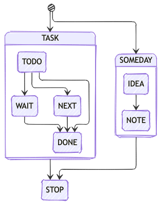

Field Guide: Emacs Initialization
Table of Contents
- 1. Introduction
- 2. Preamble
- 3. Settings
- 3.1. Keys
- 3.2. Command Launchers
- 3.3. Expansion & Completion
- 3.4. Built-in Features
- 3.5. Minibuffer
- 3.6. Movement
- 3.7. Custom Helpers
- 3.7.1. Auto-display agenda
- 3.7.2. Auto-indent when pasting
- 3.7.3. Better window splitting functions
- 3.7.4. Hide mode line
- 3.7.5. Open/Edit This file
- 3.7.6. Org-column resizing
- 3.7.7. Prettify macro
- 3.7.8. Styled HTML Export
- 3.7.9. Transparency
- 3.7.10. Weekly Score Goal in Org-Agenda
- 3.7.11. Weekly Time Reporting
- 3.7.12. Workweeks
- 3.8. Editing
- 3.9. Images
- 4. Minor Modes
- 5. Major Modes
- 6. Style
- 7. Postamble
1. Introduction
This guide walks you through an opinionated, annotated, literate configuration for Emacs. This specific document tangles (in literate programming style) the necessary commands to implement a working configuration.
To clone, go to the github repository. For a pretty view, head over to the generated page.
Hit '?' for navigational aids
1.1. Installation
My init.el file is quite simple and is generated by the following
block. Essentially, I just have to install this package
(bnb-emacs) in the ~/.emacs.d/ directory and run the following
code block (C-c C-c) to bootstrap the system.
;;; init.el --- bnbeckwith config -*- eval: (read-only-mode 1); mode: emacs-lisp; coding: utf-8-unix; lexical-binding: t; -*-
;; START ELPACA INSTALLER
(defvar elpaca-installer-version 0.12)
(defvar elpaca-directory (expand-file-name "elpaca/" user-emacs-directory))
(defvar elpaca-builds-directory (expand-file-name "builds/" elpaca-directory))
(defvar elpaca-sources-directory (expand-file-name "sources/" elpaca-directory))
(defvar elpaca-order '(elpaca :repo "https://github.com/progfolio/elpaca.git"
:ref nil :depth 1 :inherit ignore
:files (:defaults "elpaca-test.el" (:exclude "extensions"))
:build (:not elpaca-activate)))
(let* ((repo (expand-file-name "elpaca/" elpaca-sources-directory))
(build (expand-file-name "elpaca/" elpaca-builds-directory))
(order (cdr elpaca-order))
(default-directory repo))
(add-to-list 'load-path (if (file-exists-p build) build repo))
(unless (file-exists-p repo)
(make-directory repo t)
(when (<= emacs-major-version 28) (require 'subr-x))
(condition-case-unless-debug err
(if-let* ((buffer (pop-to-buffer-same-window "*elpaca-bootstrap*"))
((zerop (apply #'call-process `("git" nil ,buffer t "clone"
,@(when-let* ((depth (plist-get order :depth)))
(list (format "--depth=%d" depth) "--no-single-branch"))
,(plist-get order :repo) ,repo))))
((zerop (call-process "git" nil buffer t "checkout"
(or (plist-get order :ref) "--"))))
(emacs (concat invocation-directory invocation-name))
((zerop (call-process emacs nil buffer nil "-Q" "-L" "." "--batch"
"--eval" "(byte-recompile-directory \".\" 0 'force)")))
((require 'elpaca))
((elpaca-generate-autoloads "elpaca" repo)))
(progn (message "%s" (buffer-string)) (kill-buffer buffer))
(error "%s" (with-current-buffer buffer (buffer-string))))
((error) (warn "%s" err) (delete-directory repo 'recursive))))
(unless (require 'elpaca-autoloads nil t)
(require 'elpaca)
(elpaca-generate-autoloads "elpaca" repo)
(let ((load-source-file-function nil)) (load "./elpaca-autoloads"))))
(add-hook 'after-init-hook #'elpaca-process-queues)
(elpaca `(,@elpaca-order))
;; END ELPACA INSTALLER
;; Install use-package support
(elpaca elpaca-use-package
;; Enable :elpaca use-package keyword.
(elpaca-use-package-mode)
;; Assume :elpaca t unless otherwise specified.
(setq elpaca-use-package-by-default t))
(elpaca-wait)
(load "~/.emacs.d/full.el")
From there on, the bootstrapping is simple. Emacs finds ~/.emacs.d/init.el and runs the code.
First, I disable package, and use the standard elpaca
initialization. Following that, I enable elpaca-use-package so that
the rest of this setup can use the standard use-packageDeclare an Emacs package by specifying a group of configuration options.
For the full documentation, see Info node ‘(use-package) top’.
Usage:
(use-package package-name
[:keyword [option]]...)
:init Code to run before PACKAGE-NAME has been loaded.
:config Code to run after PACKAGE-NAME has been loaded. Note that
if loading is deferred for any reason, this code does not
execute until the lazy load has occurred.
:preface Code to be run before everything except ‘:disabled’; this
can be used to define functions for use in ‘:if’, or that
should be seen by the byte-compiler.
:mode Form to be added to ‘auto-mode-alist’.
:magic Form to be added to ‘magic-mode-alist’.
:magic-fallback Form to be added to ‘magic-fallback-mode-alist’.
:interpreter Form to be added to ‘interpreter-mode-alist’.
:commands Define autoloads for commands defined by the package.
This is useful if the package is being lazily loaded,
and you wish to conditionally call functions in your
‘:init’ block that are defined in the package.
:autoload Similar to ‘:commands’, but used for non-interactive functions.
:hook Specify hook(s) to attach this package to.
:bind Bind keys, and define autoloads for the bound commands.
:bind* Bind keys, and define autoloads for the bound commands,
*overriding all minor mode bindings*.
:bind-keymap Bind a key prefix to an auto-loaded keymap defined in the
package. This is like ‘:bind’, but for keymaps.
:bind-keymap* Like ‘:bind-keymap’, but overrides all minor mode bindings
:defer Defer loading of a package -- this is implied when using
‘:commands’, ‘:bind’, ‘:bind*’, ‘:mode’, ‘:magic’, ‘:hook’,
‘:magic-fallback’, or ‘:interpreter’. This can be an integer,
to force loading after N seconds of idle time, if the package
has not already been loaded.
:demand Prevent the automatic deferred loading introduced by constructs
such as ‘:bind’ (see ‘:defer’ for the complete list).
:after Delay the effect of the use-package declaration
until after the named libraries have loaded.
Before they have been loaded, no other keyword
has any effect at all, and once they have been
loaded it is as if ‘:after’ was not specified.
:if EXPR Initialize and load only if EXPR evaluates to a non-nil value.
:disabled The package is ignored completely if this keyword is present.
:defines Declare certain variables to silence the byte-compiler.
:functions Declare certain functions to silence the byte-compiler.
:load-path Add to the ‘load-path’ before attempting to load the package.
:diminish Support for diminish.el (if installed).
:delight Support for delight.el (if installed).
:custom Call ‘Custom-set’ or ‘set-default’ with each variable
definition without modifying the Emacs ‘custom-file’.
(compare with ‘custom-set-variables’).
:custom-face Call ‘custom-set-faces’ with each face definition.
:ensure Loads the package using package.el if necessary.
:pin Pin the package to an archive.
:vc Install the package directly from a version control system
(using ‘package-vc.el’).
(fn NAME &rest ARGS) interface.
Finally, the output of this file, ~/.emacs.d/full.el, is loaded for the complete initialization.
If you are reading this online, the html version of this file is generated by using `bnb/export-readme` explained in Styled HTML Export.
1.2. Notes
This section has specific notes that are relevant to my emacs setup in general and this document in particular.
But, before all of the detail, let's ensure lexical-binding gods are
appeased and credit/rights are retained.
;; -*- mode: emacs-lisp; lexical-binding: t; -*-
;; copyright (c) Ben Beckwith, 2010-2025
1.2.1. Elpaca
A newer package manager, Elpaca seeks to be a preferred drop-in
replacement for the built-in package.el manager. For the
configuration above, I use the standard installation boilerplate
and enable use-packageDeclare an Emacs package by specifying a group of configuration options.
For the full documentation, see Info node ‘(use-package) top’.
Usage:
(use-package package-name
[:keyword [option]]...)
:init Code to run before PACKAGE-NAME has been loaded.
:config Code to run after PACKAGE-NAME has been loaded. Note that
if loading is deferred for any reason, this code does not
execute until the lazy load has occurred.
:preface Code to be run before everything except ‘:disabled’; this
can be used to define functions for use in ‘:if’, or that
should be seen by the byte-compiler.
:mode Form to be added to ‘auto-mode-alist’.
:magic Form to be added to ‘magic-mode-alist’.
:magic-fallback Form to be added to ‘magic-fallback-mode-alist’.
:interpreter Form to be added to ‘interpreter-mode-alist’.
:commands Define autoloads for commands defined by the package.
This is useful if the package is being lazily loaded,
and you wish to conditionally call functions in your
‘:init’ block that are defined in the package.
:autoload Similar to ‘:commands’, but used for non-interactive functions.
:hook Specify hook(s) to attach this package to.
:bind Bind keys, and define autoloads for the bound commands.
:bind* Bind keys, and define autoloads for the bound commands,
*overriding all minor mode bindings*.
:bind-keymap Bind a key prefix to an auto-loaded keymap defined in the
package. This is like ‘:bind’, but for keymaps.
:bind-keymap* Like ‘:bind-keymap’, but overrides all minor mode bindings
:defer Defer loading of a package -- this is implied when using
‘:commands’, ‘:bind’, ‘:bind*’, ‘:mode’, ‘:magic’, ‘:hook’,
‘:magic-fallback’, or ‘:interpreter’. This can be an integer,
to force loading after N seconds of idle time, if the package
has not already been loaded.
:demand Prevent the automatic deferred loading introduced by constructs
such as ‘:bind’ (see ‘:defer’ for the complete list).
:after Delay the effect of the use-package declaration
until after the named libraries have loaded.
Before they have been loaded, no other keyword
has any effect at all, and once they have been
loaded it is as if ‘:after’ was not specified.
:if EXPR Initialize and load only if EXPR evaluates to a non-nil value.
:disabled The package is ignored completely if this keyword is present.
:defines Declare certain variables to silence the byte-compiler.
:functions Declare certain functions to silence the byte-compiler.
:load-path Add to the ‘load-path’ before attempting to load the package.
:diminish Support for diminish.el (if installed).
:delight Support for delight.el (if installed).
:custom Call ‘Custom-set’ or ‘set-default’ with each variable
definition without modifying the Emacs ‘custom-file’.
(compare with ‘custom-set-variables’).
:custom-face Call ‘custom-set-faces’ with each face definition.
:ensure Loads the package using package.el if necessary.
:pin Pin the package to an archive.
:vc Install the package directly from a version control system
(using ‘package-vc.el’).
(fn NAME &rest ARGS) support.
This is the quick cheat sheet of commands:
| Operation | UI (keys apply in elpaca-ui-mode) | completing-read interface commands |
|---|---|---|
| Finding Packages | M-x elpaca-manager |
elpaca-tryTry ORDER.Install the source/build files on disk. Activate the corresponding package for the current session. ORDER’s package is not activated during subsequent sessions, but still on disk. When INTERACTIVE is non-nil, immediately process ORDER, otherwise queue ORDER. (fn ORDER &optional INTERACTIVE) |
| Trying Packages (for current session) | i x |
elpaca-tryTry ORDER.Install the source/build files on disk. Activate the corresponding package for the current session. ORDER’s package is not activated during subsequent sessions, but still on disk. When INTERACTIVE is non-nil, immediately process ORDER, otherwise queue ORDER. (fn ORDER &optional INTERACTIVE) |
| Fetching Package Updates | f x |
elpaca-fetchDownload ID’s associated package updates.This does not merge changes or rebuild the packages. If INTERACTIVE is non-nil immediately process, otherwise queue. (fn ID &optional INTERACTIVE) or elpaca-fetch-allDownload queued elpaca remotes. If INTERACTIVE is non-nil, process queues.(fn &optional INTERACTIVE) |
| Merging Updates | u x |
elpaca-mergeInstall package updates associated with ID.If FETCH is non-nil, download package updates before merging. If INTERACTIVE is non-nil, the queued order is processed immediately. (fn ID &optional FETCH INTERACTIVE) or elpaca-merge-allMerge and rebuild queued packages.If FETCH is non-nil fetch updates first. If INTERACTIVE is non-nil, process queues. (fn &optional FETCH INTERACTIVE) |
| Pulling Updates* | C-u u x |
C-u M-x elpaca-merge or C-u M-x elpaca-merge-all |
| Rebuilding Packages | r x |
elpaca-rebuildRebuild ID’s associated package.When INTERACTIVE is non-nil, prompt for ID, immediately process. With a prefix argument, rebuild current file’s package or prompt if none found. (fn ID &optional INTERACTIVE) |
| Deleting Packages | d x |
elpaca-deleteRemove a package associated with ID from cache and disk.If DEPS is non-nil (interactively with C-u) delete dependencies. If FORCE is non-nil (interactively with C-u C-u) do not confirm before deleting package and DEPS. (fn ID &optional FORCE DEPS) |
| View Package Logs | l filters log to current package |
elpaca-logWhen INTERACTIVE is non-nil, Display ‘elpaca-log-buffer’ filtered by QUERY.Otherwise return log buffer string. (fn &optional QUERY INTERACTIVE) |
| Visit Package Repository Directory | v |
elpaca-visitOpen local source directory for E with ID.When BUILD is non-nil visit build directory. (fn &optional ID BUILD) |
| Visit Package Build Directory | C-u v |
C-u M-x elpaca-visit |
| Browse Package Website | b |
elpaca-browseBrowse menu item with ID’s :url.(fn ID) |
There is also a helpful manual.
To see how the startup time has imporoved, let's store when we start evaluating these settings.
(setq bnb/start-time (float-time))
To aid with general code that needs to run after elpaca, the following
macro sets up the right hook.
(defmacro with-after-elpaca-init (&rest body)
"Adds BODY to `elpaca-after-init-hook`"
`(add-hook 'elpaca-after-init-hook (lambda () ,@body)))
1.2.2. Emacs Build
My current flavor of Emacs comes from: https://github.com/d12frosted/homebrew-emacs-plus
To install with brew, run the following command:
brew install emacs-plus@29 --with-nobu417-big-sur-icon --with-imagemagick --with-native-comp
And then, to link in /Applications, run the following command:
oascript -e 'tell application "Finder" to make alias file to posix file "<prefix>/Emacs.app" at POSIX file "/Applications"
Notes: What's new in 29.1
1.2.3. Pending sections
There are some features that I like to take on a trial run. These are marked with the PENDING tag to help me remember and evaluate.
1.2.4. Performance
By utilizing elements of use-package, I can keep an eye on troublesome
packages during startup. Together, these turn on reporting and set the
minimum time to consider when building the report.
(setq use-package-verbose t
use-package-compute-statistics t
use-package-minimum-reported-time 0)
The generated messages will be found in the *Messsages* buffer.
There is also the elpaca log that can show loading times.
2. Preamble
This sections houses the settings that need to be made up front and support subsuquent package installation and activiation.
2.1. Default Setup
The full name is used for email messages. And bnb/biblio is set to a
sensible default. These can be overridden in <username>.var.el.
(setq user-full-name "Benjamin Beckwith"
bnb/biblio '("~/references.bib"))
2.2. Local customizations
I typically use the customize interface to generate any local settings such as proxies, paths, fonts, etc. that may vary from machine to machine. This keeps the setup the same and allows for only some details to differ.
I like to set the custom file explicitly. Mine resides in the ~/.emacs.d/ directory. This code block sets the file name and loads it if it exists.
(setq custom-file "~/.emacs.d/custom.el")
(if (file-exists-p custom-file)
(load-file custom-file))
If the file doesn't exist, Emacs will still use the file if any
changes are made through the custom interface.
Sometimes I'll get bad settings or cruft in that file. I now have a
key, <F7>, for easy navigation to wherever the custom-file points.
2.2.1. Local variables
I also intend to have a generic call to an installed local file that
may need to behave differently from custom.el. This loads last so that
it can modify any existing setting made here to work on the specific
system in question.
In the code below, I add ~/.emacs.d/ to the load path and have a
protected call to load-libraryLoad the Emacs Lisp library named LIBRARY.
LIBRARY should be a string.
This is an interface to the function ‘load’. LIBRARY is searched
for in ‘load-path’, both with and without ‘load-suffixes’ (as
well as ‘load-file-rep-suffixes’).
See Info node ‘(emacs)Lisp Libraries’ for more details.
See ‘load-file’ for a different interface to ‘load’.
(fn LIBRARY). If the file exists, it gets loaded,
otherwise the error normally returned if the file is non-existent gets
ignored.
(condition-case err
(progn
(load-file (format "~/.emacs.d/%s.vars.el" user-login-name))
(message "Loaded local settings file %s.vars.el" user-login-name))
(file-error
(message "Skipping %s.vars library as it does not exist." user-login-name))
nil)
2.3. Early Initialization
There are a few optimizations to make so that emacs can get
initialized quickly. First, setup the garbage collector to have a
default value of 16mb and a initializtion time value of
most-positive-fixnum.
This prevents garbage collection from pausing evaluation during startup. After startup, I leverage the hook to reset the optimizations down to their default values.
The next setting stores file-name-handler-alistAlist of elements (REGEXP . HANDLER) for file names handled specially.
If a file name matches REGEXP, all I/O on that file is done by calling
HANDLER. If a file name matches more than one handler, the handler
whose match starts last in the file name gets precedence. The
function ‘find-file-name-handler’ checks this list for a handler for
its argument.
HANDLER should be a function. The first argument given to it is the
name of the I/O primitive to be handled; the remaining arguments are
the arguments that were passed to that primitive. For example, if you
do (file-exists-p FILENAME) and FILENAME is handled by HANDLER, then
HANDLER is called like this:
(funcall HANDLER 'file-exists-p FILENAME)
Note that HANDLER must be able to handle all I/O primitives; if it has
nothing special to do for a primitive, it should reinvoke the
primitive to handle the operation "the usual way".
See Info node ‘(elisp)Magic File Names’ for more details. and then sets it to
nil. By doing this, there is no automatic handler evalutation
happening during startup. This setting goes back to its original value
post startup.
Finally, user interface elements are hidden early to have a nice streamlined interface.
;; -*- mode: emacs-lisp; lexical-binding: t; -*-
(defun homebrew-gcc-paths ()
"Return GCC library paths from Homebrew installations.
Detects paths for gcc and libgccjit packages to be used in LIBRARY_PATH."
(let* ((paths '())
(brew-bin (or (executable-find "brew")
(let ((arm-path "/opt/homebrew/bin/brew")
(intel-path "/usr/local/bin/brew"))
(cond
((file-exists-p arm-path) arm-path)
((file-exists-p intel-path) intel-path))))))
(when brew-bin
;; Get gcc paths.
(let* ((gcc-prefix (string-trim
(shell-command-to-string
(concat brew-bin " --prefix gcc"))))
(gcc-lib-current (expand-file-name "lib/gcc/current" gcc-prefix)))
(push gcc-lib-current paths)
;; Find apple-darwin directory.
(let* ((default-directory gcc-lib-current)
(arch-dirs (file-expand-wildcards "gcc/*-apple-darwin*/*[0-9]")))
(when arch-dirs
(push (expand-file-name
(car (sort arch-dirs #'string>)))
paths))))
;; Get libgccjit paths
(let* ((jit-prefix (string-trim
(shell-command-to-string
(concat brew-bin " --prefix libgccjit"))))
(jit-lib-current (expand-file-name "lib/gcc/current" jit-prefix)))
(push jit-lib-current paths)))
(nreverse paths)))
(defun setup-macos-native-comp-library-paths ()
"Set up LIBRARY_PATH for native compilation on macOS.
Includes Homebrew GCC paths and CommandLineTools SDK libraries."
(let* ((existing-paths (split-string (or (getenv "LIBRARY_PATH") "") ":" t))
(gcc-paths (homebrew-gcc-paths))
(clt-paths '("/Library/Developer/CommandLineTools/SDKs/MacOSX.sdk/usr/lib"))
(unique-paths (delete-dups
(append existing-paths gcc-paths clt-paths))))
(setenv "LIBRARY_PATH" (mapconcat #'identity unique-paths ":"))))
;; Set up library paths for native compilation on macOS.
(when (eq system-type 'darwin)
(setup-macos-native-comp-library-paths))
;; Disable package enabling at startup
(setq package-enable-at-startup nil)
;; Tweak garbage collection threshold
(defvar default-gc-cons-threshold 16777216 ; 16mb
"my default desired value of `gc-cons-threshold'
during normal emacs operations.")
;; make garbage collector less invasive
(setq
gc-cons-threshold most-positive-fixnum
gc-cons-percentage 0.6)
(setq
default-file-name-handler-alist file-name-handler-alist
file-name-handler-alist nil)
(add-hook
'emacs-startup-hook
(lambda (&rest _)
(setq
gc-cons-threshold
default-gc-cons-threshold
gc-cons-percentage 0.1
file-name-handler-alist default-file-name-handler-alist)
;; delete no longer necessary startup variable
(makunbound 'default-file-name-handler-alist)))
The block above is written to ~/.emacs.d/early-init.el and automatically evaluated first by emacs.
2.3.1. Init debug assistance
(defmacro comment (&rest body)
"Comment out sexps in BODY"
nil)
2.3.2. Path
Sometimes Emacs' idea of path differs from the shell. The package exec-path-from-shell seeks to bring those in line with each other.
(use-package exec-path-from-shell
:ensure t
:config
(when (memq window-system '(mac ns x))
(exec-path-from-shell-initialize)))
2.4. Libraries
This section hosts early loading of libraries required by subsequent packages.
2.4.1. Dash
The modern list library, Dash, provides a set of common list manipulation functions (all prepended with '-', hence the name).
(use-package dash
:ensure t)
2.4.2. Delight
The mode line can get pretty busy showing all of the package names. Delight helps tone it down by removing some packages from showing up, or changing their name to something shorter.
In use-package delcarations, I use the :delight keyword to set a
string to represent the package. It is also possible to provide elisp
for evaluation.
(use-package delight :ensure t)
2.4.3. Hydra
Sometimes it is useful to go into a command mode that lets you quickly do a few different actions. Hydra does that and more.
By defining specific hydras, you can group together commands with documentation. Think of it as a mini-control-panel. I include it here and use it elsewhere when grouping commands. (See 3.1.2.1 for an example)
(use-package hydra
:ensure t)
2.4.3.1. Major mode and Pretty Hydra
(use-package major-mode-hydra
:ensure t
:demand t
:bind ("s-." . major-mode-hydra))
2.5. Coda
Evey good initialization must have an end.
;;; Wait for this to be processed before packages that depend on it
(elpaca-wait)
3. Settings
The sections here contain mostly settings that configure keymaps, command launchers, built-in features, and other details for day-to-day life.
3.1. Keys
These sections contain settings related to keys and keymaps.
3.1.1. Binding Keys
For creating key sequences, I use the bind-key package. Not only does it easily bind keys, but it does so with some nice features.
(with-after-elpaca-init
(bind-keys ("C-h B" . describe-personal-keybindings)
("<f7>" . (lambda () (interactive (find-file custom-file))))))
By using bind-key, you can specify the keystrokes that invoke a
command. In the example above, we bind functions to the global key map
– available at all times. Note that in later settings, there are
examples of mapping keys within local keymaps – abvailable in those
modes or contexts.
If you also want to override any possible minor-mode bindings of the
same keys, you can use bind-key* instead.
There is also an unbind-key to, of course, remove any binding.
The real kicker is that it will keep track of these bindings and let you see a summary of your customizations with
M-x describe-personal-keybindings
This is bound to C-h B above.
As of emacs 28.1, there is a setting to group bindings into an outline
format. Use the following settings with M-x describe-bindings or C-h
b.
(setq describe-bindings-outline t)
3.1.2. Personal Keymaps
The following settings are inspired from http://endlessparentheses.com/the-toggle-map-and-wizardry.html.
3.1.2.1. Toggle Map
This toggle map shows the current toggleable settings with shortcut
keys for enabling. The amaranth color makes this buffer stay around
until I press q.
What are these settings?
| Key | Function | Description |
|---|---|---|
c |
column-number-modeNon-nil if Column-Number mode is enabled.See the ‘column-number-mode’ command for a description of this minor mode. |
Toggle column number display in the modeline |
e |
toggle-debug-on-errorToggle whether to enter Lisp debugger when an error is signaled.In an interactive call, record this option as a candidate for saving by "Save Options" in Custom buffers. (fn &optional INTERACTIVELY) |
Enter debugger on error |
u |
toggle-debug-on-quitToggle whether to enter Lisp debugger when C-g is pressed.In an interactive call, record this option as a candidate for saving by "Save Options" in Custom buffers. (fn &optional INTERACTIVELY) |
Enter debugger on C-g |
f |
auto-fill-modeToggle automatic line breaking (Auto Fill mode).When Auto Fill mode is enabled, inserting a space at a column beyond ‘current-fill-column’ automatically breaks the line at a previous space. When ‘auto-fill-mode’ is on, the ‘auto-fill-function’ variable is non-nil. The value of ‘normal-auto-fill-function’ specifies the function to use for ‘auto-fill-function’ when turning Auto Fill mode on. This is a minor mode. If called interactively, toggle the ‘Auto-Fill mode’ mode. If the prefix argument is positive, enable the mode, and if it is zero or negative, disable the mode. If called from Lisp, toggle the mode if ARG is ‘toggle’. Enable the mode if ARG is nil, omitted, or is a positive number. Disable the mode if ARG is a negative number. To check whether the minor mode is enabled in the current buffer, evaluate the variable ‘auto-fill-function’. The mode’s hook is called both when the mode is enabled and when it is disabled. (fn &optional ARG) |
Automatic line breaking |
t |
toggle-truncate-linesToggle truncating of long lines for the current buffer.When truncating is off, long lines are folded. With prefix argument ARG, truncate long lines if ARG is positive, otherwise fold them. Note that in side-by-side windows, this command has no effect if ‘truncate-partial-width-windows’ is non-nil. (fn &optional ARG) |
Truncate long lines in the buffer |
r |
dired-toggle-read-onlyEdit Dired buffer with Wdired, or make it read-only.If the current buffer can be edited with Wdired, (i.e. the major mode is ‘dired-mode’), call ‘wdired-change-to-wdired-mode’. Otherwise, toggle ‘read-only-mode’. |
Read-only mode |
w |
whitespace-modeToggle whitespace visualization (Whitespace mode).See also ‘whitespace-style’, ‘whitespace-newline’ and ‘whitespace-display-mappings’. This mode uses a number of faces to visualize the whitespace; see the customization group ‘whitespace’ for details. This is a minor mode. If called interactively, toggle the ‘Whitespace mode’ mode. If the prefix argument is positive, enable the mode, and if it is zero or negative, disable the mode. If called from Lisp, toggle the mode if ARG is ‘toggle’. Enable the mode if ARG is nil, omitted, or is a positive number. Disable the mode if ARG is a negative number. To check whether the minor mode is enabled in the current buffer, evaluate the variable ‘whitespace-mode’. The mode’s hook is called both when the mode is enabled and when it is disabled. (fn &optional ARG) |
Whitespace visualization |
b |
orgtbl-modeNon-nil if OrgTbl mode is enabled.Use the command ‘orgtbl-mode’ to change this variable. |
Use org table minor mode (non-org buffers) |
x |
bnb/transparency-nextApply the next transparency value in the ring ‘bnb/transparency-ring‘. |
Cycle forward through transparency settings |
X |
bnb/transparency-previousApply the previous transparency value in the ring ‘bnb/transparency-ring‘. |
Cycle backward through transparency settings |
B |
display-battery-modeNon-nil if Display-Battery mode is enabled.See the ‘display-battery-mode’ command for a description of this minor mode. Setting this variable directly does not take effect; either customize it (see the info node ‘Easy Customization’) or call the function ‘display-battery-mode’. |
Show battery info in modeline |
l |
hl-line-modeNon-nil if Hl-Line mode is enabled.Use the command ‘hl-line-mode’ to change this variable. |
Highlight current line |
m |
bnb/hide-mode-line-modeMinor mode to hide mode-line in current bufferThis is a minor mode. If called interactively, toggle the ‘Bnb/Hide-Mode-Line mode’ mode. If the prefix argument is positive, enable the mode, and if it is zero or negative, disable the mode. If called from Lisp, toggle the mode if ARG is ‘toggle’. Enable the mode if ARG is nil, omitted, or is a positive number. Disable the mode if ARG is a negative number. To check whether the minor mode is enabled in the current buffer, evaluate the variable ‘bnb/hide-mode-line-mode’. The mode’s hook is called both when the mode is enabled and when it is disabled. |
Toggle mode line |
(with-after-elpaca-init
(pretty-hydra-define hydra-toggle (:color amaranth :quit-key "q" :title " TOGGLES")
("Basic"
(("c" column-number-mode "col number" :toggle t)
("l" hl-line-mode "highlight line" :toggle t)
("f" auto-fill-mode "auto-fill" :toggle t)
("t" toggle-truncate-lines "truncate lines" :toggle truncate-lines))
"Minor"
(("r" rainbow-mode "rainbow" :toggle t)
("w" whitespace-mode "whitespace" :toggle t)
("b" orgtbl-mode "Org table" :toggle t)
("R" dired-toggle-read-only "dired read only" :toggle t)
("o" focus-mode "focus mode" :toggle t)
("O" focus-mode "read-only focus mode" :toggle t))
"UI"
(("m" bnb/hide-mode-line-mode "hide mode line" :toggle t)
("B" display-battery-mode "display battery" :toggle t)
("x" bnb/transparency-next "transparency next")
("X" bnb/transparency-previous "transparency prev")
("W" writeroom-mode "Writeroom mode" :toggle t))
"Emacs"
(("D" toggle-debug-on-error "debug on error" :toggle (default-value 'debug-on-error))
("X" toggle-debug-on-quit "debug on quit" :toggle (default-value 'debug-on-quit)))))
(bind-key "C-x t" 'hydra-toggle/body))
3.1.2.2. Kill current buffer
Another great tip from Pragmatic Emacs, use kill-this-bufferKill the current buffer.
When called in the minibuffer, get out of the minibuffer
using ‘abort-recursive-edit’.
This command must be bound to a mouse event, and can be reliably
invoked only from the menu bar, otherwise it could decide to silently
do nothing or signal an error. Use ‘kill-current-buffer’ if you
need to invoke a similar command from keyboard.
(fn &optional EVENT) to kill
the current buffer instead of asking which one. I'm not overriding
the C-x k default, but added a C-x C-k alternative.
(defun bnb/kill-this-buffer ()
"Kill the current buffer"
(interactive)
(kill-buffer (current-buffer)))
(with-after-elpaca-init
(bind-keys
("C-x C-k" . bnb/kill-this-buffer)))
3.1.3. Super keys
I like to be able to use the command (or super or hyper) keys for shortcuts. I need to take care to not interfere with the built-in operating system shortcuts or my bindings will not work.
(setq
;; fn => hyper
mac-function-modifier 'hyper
;; option_r => option_r
mac-right-option-modifier 'none
;; command_r => hyper
mac-right-command-modifier 'hyper
;; control_r => hyper
mac-right-control-modifier 'hyper
;; command_l => meta
mac-command-modifier 'meta
;; control_l => ctrl
mac-control-modifier 'ctrl
;; option_l => super
mac-option-modifier 'super
;; Don't pass command to system
mac-pass-command-to-system nil)
Note that the right option and command keys will pass through to the
system. This is especially cool for the option key on a mac that lets
insert special characters directly. (E.g. á or ∑ or ®)
Inspiration for the keys comes from wisdom and wonder.
3.2. Command Launchers
This section holds the settings for my two main command launchers: hydra and vertico.
3.2.1. Hydra
Sometimes it is useful to go into a command mode that lets you quickly do a few different actions. Hydra does that and more.
By defining specific hydras, you can group together commands with documentation. Think of it as a mini-control-panel. I include it here and use it elsewhere when grouping commands. (See 3.1.2.1 for an example)
The setup is in Hydra so that I can use it with the previous keybinding commands.
3.2.2. Vertico
Or VERTical Interactive COmpletion, is my preferred completion interface.
(use-package vertico
:ensure t
:config (vertico-mode))
3.2.2.1. Vertico Directory
The directory extension navigates directories like Ido.
;; Configure directory extension.
(use-package vertico-directory
:after vertico
:ensure nil
;; More convenient directory navigation commands
:bind (:map vertico-map
("RET" . vertico-directory-enter)
("DEL" . vertico-directory-delete-char)
("M-DEL" . vertico-directory-delete-word)
("?" . minibuffer-completion-help))
;; Tidy shadowed file names
:hook (rfn-eshadow-update-overlay . vertico-directory-tidy))
3.2.2.2. Embark
The embark package helps find actions relevant to what is near the
point. With C-., a menu pops up with actions to choose from.
(use-package embark
:ensure t
:bind
(("C-." . embark-act)
("C-;" . embark-dwim)
("C-x ." . embark-act)
("C-x ;" . embark-dwim)
("C-h C-b" . embark-bindings))
:init
(setq prefix-help-command #'embark-prefix-help-command)
:config
(add-to-list 'display-buffer-alist
'("\\'\\*Embark Collect \\(Live\\|Comletions\\)\\*"
nil
(window-parameters (mode-line-format . none)))))
(use-package embark-consult
:after (emark consult)
:ensure t
:hook
(embark-collect-mode . consult-preview-at-point-mode))
3.2.2.3. Orderless
Easy completion is possible with Orderless. This completion framework lets users utilize matching elements separated by spaces.
(use-package orderless
:ensure t
:custom
(completion-styles '(orderless basic))
(completion-category-overrides '((file (styles basic partial-completion)))))
Within the matching framework, a few dispatchers can modify the subsequent matchers. The following table summarizes these elements.
| Character | Effect |
|---|---|
! |
Does not match following literal |
, |
Matches initial characters |
= |
Forces a literal match |
~ |
Uses the flex matching |
% |
Matches while ignoring diacritics |
3.2.2.4. Consult
Rounding out the completion helpers, Consult provides specific functions that help complete actions or find elements. The bindings are supplied below.
(use-package consult
:ensure t
:bind (;; C-c bindings
("C-c h" . consult-history)
("C-c m" . consult-mode-command)
("C-c b" . consult-bookmark)
("C-c k" . consult-macro)
("C-c o" . consult-outline)
;; C-x bindings
("C-x b" . consult-buffer)
("C-x 4 b" . consult-buffer-other-window)
("C-x 5 b" . consult-buffer-other-frame)
("C-x r x" . consult-register)
("C-x r b" . consult-bookmark)
;; Custom M bindings
("M-g o" . consult-ouline)
("M-y" . consult-yank-pop)
("M-i" . consult-imenu))
:config
(defvar bnb/org-agendas
(list :name "Org Agenda Files"
:category 'file
:narrow ?a
:face 'consult-file
:history 'file-name-history
:action #'consult--file-action
:items #'org-agenda-files))
(add-to-list 'consult-buffer-sources 'bnb/org-agendas 'append)
:init
(fset 'multi-occur #'consult-multi-occur))
One of the more interesting feaures is virtual buffers. When viewing buffers, recent files, bookmarks, and similar, the interface shows the buffer as you are selecting so that you can have the right file context for the line you are selecting.
The consult-bufferEnhanced ‘switch-to-buffer’ command with support for virtual buffers.
The command supports recent files, bookmarks, views and project files as
virtual buffers. Buffers are previewed. Narrowing to buffers (b), files (f),
bookmarks (m) and project files (p) is supported via the corresponding
keys. In order to determine the project-specific files and buffers, the
‘consult-project-function’ is used. The virtual buffer SOURCES
default to ‘consult-buffer-sources’. See ‘consult--multi’ for the
configuration of the virtual buffer sources.
(fn &optional SOURCES) command is powerful and has specific key sequences
that can narrow the buffer list in useful ways. These are summarized
in the following list.
b <SPC>- buffers
<SPC>- hidden buffers
* <SPC>- modified buffers
f <SPC>- files
r <SPC>- file registers
m <SPC>- bookmarks
p <SPC>- project
In the code block above, I add one more, a <SPC> that will show the
available org-agenda-filesThe files to be used for agenda display.
If an entry is a directory, all files in that directory that are matched
by ‘org-agenda-file-regexp’ will be part of the file list.
If the value of the variable is not a list but a single file name, then
the list of agenda files is actually stored and maintained in that file,
one agenda file per line. In this file paths can be given relative to
‘org-directory’. Tilde expansion and environment variable substitution
are also made.
Entries may be added to this list with ‘C-c [’
and removed with ‘C-c ]’. for easy selection.
3.2.2.5. Marginalia
The great thing about vertical completion is the extra horizontal space. Marginalia makes use of this extra space by providing relevant extra information about each element on the line.
(use-package marginalia
:ensure t
:bind (:map minibuffer-local-map
("M-A" . marginalia-cycle))
:init
(marginalia-mode))
3.2.3. Casual
Less of a proper launcher, the casual suite provides transitent, keyboard-driven menus to help access and remember commands.
(use-package casual-suite
:ensure t
:bind
(("H-o" . #'casual-editkit-main-tmenu)
("M-c" . #'casual-avy-tmenu)
(:map calc-mode-map ("C-o" . #'casual-calc-tmenu))
(:map dired-mode-map ("C-o" . #'casual-dired-tmenu))
(:map isearch-mode-map ("C-o" . #'casual-isearch-tmenu))
(:map ibuffer-mode-map ("C-o" . #'casual-ibuffer-tmenu))
(:map ibuffer-mode-map ("F" . #'casual-ibuffer-filter-tmenu))
(:map ibuffer-mode-map ("s" . #'casual-ibuffer-sortby-tmenu))
(:map Info-mode-map ("C-o" . #'casual-info-tmenu))
(:map reb-mode-map ("C-o" . #'casual-re-builder-tmenu))
(:map reb-lisp-mode-map ("C-o" . #'casual-re-builder-tmenu))
(:map bookmark-bmenu-mode-map ("C-o" . #'casual-bookmarks-tmenu))
(:map org-agenda-mode-map ("C-o" . #'casual-agenda-tmenu))
(:map symbol-overlay-map ("C-o" . #'casual-symbol-overlay-tmenu))))
3.3. Expansion & Completion
This section defines interations with text expansion systems.
3.3.1. Abbrev
The following block is courtesy of Endless Parentheses. For regular
misspellings, we can do ispellInteractively check a region or buffer for spelling errors.
If ‘transient-mark-mode’ is on, and a region is active, spell-check
that region. Otherwise spell-check the buffer.
Ispell dictionaries are not distributed with Emacs. If you are
looking for a dictionary, please see the distribution of the GNU ispell
program, or do an Internet search; there are various dictionaries
available on the net. and then make an abbreviation for
future corrections.
(defun bnb/ispell-word-then-abbrev (p)
"Call `ispell-word'. Then create an abbrev for the correction
made. With prefix P, create local abbrev. Otherwise, it will be
global."
(interactive "P")
(let ((bef (downcase (or (thing-at-point 'word) ""))) aft)
(call-interactively 'ispell-word)
(setq aft (downcase (or (thing-at-point 'word) "")))
(unless (string= aft bef)
(message "\"%s\" now expands to \"%s\" %sally"
bef aft (if p "loc" "glob"))
(define-abbrev
(if p global-abbrev-table local-abbrev-table)
bef aft))))
(use-package abbrev
:ensure nil
:delight " ⚆"
:bind (("C-x C-i" . bnb/ispell-word-then-abbrev))
:config
(setq save-abbrevs t)
(setq-default abbrev-mode t))
3.3.2. Cape
"Let your completions fly!" – cape.el
Cape provies a set of completion backends available right on bound keys. It works with Corfu.
;; Add extensions
(use-package cape
:ensure t
;; Bind dedicated completion commands
;; Alternative prefix keys: C-c p, M-p, M-+, ...
:bind (("C-c p p" . completion-at-point) ;; capf
("C-c p t" . complete-tag) ;; etags
("C-c p d" . cape-dabbrev) ;; or dabbrev-completion
("C-c p h" . cape-history)
("C-c p f" . cape-file)
("C-c p k" . cape-keyword)
("C-c p s" . cape-elisp-symbol)
("C-c p e" . cape-elisp-block)
("C-c p a" . cape-abbrev)
("C-c p l" . cape-line)
("C-c p w" . cape-dict)
("C-c p :" . cape-emoji)
("C-c p \\" . cape-tex)
("C-c p _" . cape-tex)
("C-c p ^" . cape-tex)
("C-c p &" . cape-sgml)
("C-c p r" . cape-rfc1345))
:init
;; Add to the global default value of `completion-at-point-functions' which is
;; used by `completion-at-point'. The order of the functions matters, the
;; first function returning a result wins. Note that the list of buffer-local
;; completion functions takes precedence over the global list.
(add-to-list 'completion-at-point-functions #'cape-dabbrev)
(add-to-list 'completion-at-point-functions #'cape-file)
(add-to-list 'completion-at-point-functions #'cape-elisp-block)
;;(add-to-list 'completion-at-point-functions #'cape-history)
;;(add-to-list 'completion-at-point-functions #'cape-keyword)
;;(add-to-list 'completion-at-point-functions #'cape-tex)
;;(add-to-list 'completion-at-point-functions #'cape-sgml)
;;(add-to-list 'completion-at-point-functions #'cape-rfc1345)
;;(add-to-list 'completion-at-point-functions #'cape-abbrev)
;;(add-to-list 'completion-at-point-functions #'cape-dict)
;;(add-to-list 'completion-at-point-functions #'cape-elisp-symbol)
;;(add-to-list 'completion-at-point-functions #'cape-line)
)
3.3.3. Corfu
Taking in-buffer completion to the next level, Corfu gives familar functionality with nice enhancements. It integrates with orderless for easier searching, and has the ability to show documentation alongside of the completion popup.
(use-package corfu
:ensure t
:custom
(corfu-auto nil)
(tab-always-indent 'complete)
(corfu-cycle t)
(corfu-preselect 'prompt)
:bind
(:map corfu-map
("SPC" . corfu-insert-separator)
("TAB" . corfu-next)
([tab] . corfu-next)
("S-TAB" . corfu-previous)
([backtab] . corfu-previous))
:init
(global-corfu-mode)
(corfu-popupinfo-mode 1))
3.3.3.1. Terminal support
Because Corfu uses child frames, terminal support needs to be added that leverages overlays for non-graphical frames.
(use-package corfu-terminal
:if (and (not (display-graphic-p))
(version<= emacs-version "30"))
:ensure (corfu-terminal
:host github
:repo "https://codeberg.org/akib/emacs-corfu-terminal.git"))
3.3.4. Yasnippet PENDING
Text expansion makes sense in many programming modes. Yasnippet comes in handy by providing a minor mode for easy expansions.
(use-package yasnippet
:ensure t
:defer 30
:hook
(prog-mode . yas-minor-mode)
(text-mode . yas-minor-mode)
:config
(yas-reload-all))
I also load a collection of yasnippet snippets so I don't have to maintain my own.
(use-package yasnippet-snippets
:ensure t)
3.3.5. Hippie Expand
Try to expand the text before point in an intelligent way. Repeat the keypress to cycle through options.
(with-after-elpaca-init
(bind-key "M-/" 'hippie-expand))
3.4. Built-in Features
Emacs comes with some nice batteries. This section configures my favorites.
3.4.1. Backups
Sensible backup settings from https://www.emacswiki.org/emacs/BackupDirectory
(setq backup-by-copying t
create-lockfiles nil
backup-directory-alist '((".*" . "~/.emacs.d/.saves"))
;; auto-save-file-name-transforms `((".*" "~/.saves" t))
kill-buffer-delete-auto-save-files t
delete-old-versions t
kept-new-versions 6
kept-old-versions 2
version-control t)
Here's a quick rundown of the settings:
backup-by-copyingNon-nil means always use copying to create backup files.
See documentation of variable ‘make-backup-files’.- Use copying to create backups when
t create-lockfilesNon-nil means use lockfiles to avoid editing collisions.
The name of the (per-buffer) lockfile is constructed by prepending
".#" to the name of the file being locked. See also ‘lock-buffer’ and
Info node ‘(emacs)Interlocking’.- Don't use lockfiles if
nil backup-directory-alistAlist of file name patterns and backup directory names.
Each element looks like (REGEXP . DIRECTORY). Backups of files with
names matching REGEXP will be made in DIRECTORY. DIRECTORY may be
relative or absolute. If it is absolute, so that all matching files
are backed up into the same directory, the file names in this
directory will be the full name of the file backed up with all
directory separators changed to ‘!’ to prevent clashes. This will not
work correctly if your filesystem truncates the resulting name.
For the common case of all backups going into one directory, the alist
should contain a single element pairing "." with the appropriate
directory name.
If this variable is nil, or it fails to match a file name, the backup
is made in the original file’s directory.
On MS-DOS filesystems without long names this variable is always
ignored.- List of regexp/location pairs of where to backup files
kill-buffer-delete-auto-save-filesIf non-nil, offer to delete any autosave file when killing a buffer.
If ‘delete-auto-save-files’ is nil, any autosave deletion is inhibited.- Killing a buffer with an auto-save file will prompt for deletion
delete-old-versionsIf t, delete excess numbered backup files silently.
If nil, ask confirmation. Any other value prevents any trimming.
See ‘version-control’, ‘kept-old-versions’, ‘kept-new-versions’
and ‘dired-kept-versions’ for more about keeping and deleting old
versioned (a.k.a. "numbered") backup files.- Delete excess backups silently if
t kept-new-versionsNumber of newest versions to keep when a new numbered backup is made.
Includes the new backup. Must be greater than 0.
See ‘version-control’ for how Emacs decides when to make numbered backups.- Number of newest versions to keep
kept-old-versionsNumber of oldest versions to keep when a new numbered backup is made.
See ‘version-control’ for how Emacs decides when to make numbered backups.- Number of oldest versions to keep
version-controlControl use of version-numbered backup files.
When t, make numbered backup files unconditionally.
When nil, make them for files that already have numbered backups.
The value ‘never’ means never make numbered backups.- When
t, make numeric backup versions always
3.4.2. Default File encoding
I like to have the files be utf-8 by default. Do let me know if I
shouldn't do this, will you?
Set utf-8 for all coding systems except for the clipboard on
windows. That one gets utf-16le to be compatible.
(prefer-coding-system 'utf-8)
(set-default-coding-systems 'utf-8)
(set-terminal-coding-system 'utf-8)
(set-keyboard-coding-system 'utf-8)
(set-language-environment 'utf-8)
(setq buffer-file-coding-system 'utf-8
x-select-request-type '(UTF8_STRING COMPOUND_TEXT TEXT STRING))
;; MS Windows clipboard is UTF-16LE
(when (eq system-type 'windows-nt)
(set-clipboard-coding-system 'utf-16le-dos))
3.4.3. Native Compilation
Emacs 28.1 introduced Native Compilation. When this feature is available, I use it to compile the packages.
There are also two settings to make compilation more verbose and ensure that warnings and errors are logged from any async processes.
(if (native-comp-available-p)
(setq package-native-compile t
native-comp-verbose 1
native-comp-async-report-warnings-errors 'silent))
3.4.4. Server
Using Emacs as a server is a great way to keep the power responsive.
(when (and (or (eq system-type 'windows-nt) (eq system-type 'darwin))
(not (and (boundp 'server-clients) server-clients))
(not (daemonp)))
(server-start))
3.4.5. Sounds
I dislike the bell ringing when I hit C-g. To silence the bell, just
set the ring-bell-function to nil.
(setq visual-bell nil
ring-bell-function `(lambda () nil))
3.4.6. Recentf
I enable emacs remembering recently open files. For my setup, this feeds into the candidates for Consult.
(with-after-elpaca-init
(recentf-mode t))
3.4.7. Timezones
For world-clockDisplay a world clock buffer with times in various time zones.
The variable ‘world-clock-list’ specifies which time zones to use.
To turn off the world time display, go to the window and type C-x w q., it's best to define the time zones most relevant
to me. For compatible time zones, check this handy list.
(setq zoneinfo-style-world-list
'(("America/New_York" "CBUS")
("America/Los_Angeles" "San Fran")
("Europe/London" "London")
("Australia/Sydney" "Sydney")
("Asia/Kolkata" "Bangalore")))
3.4.8. Isearch
Folding quotes will allow isearch to find similar characters to the ones being searched for.
;; New in Emacs 29
(setq isearch-fold-quotes-mode t)
3.5. Minibuffer
This section holds any minibuffer settings.
3.5.1. Minibuffer History
Let's get rid of duplicates in the minibuffer history.
(setq history-delete-duplicates t)
This saves the minibuffer histories to preserve across emacs sessions.
(with-after-elpaca-init
(setq savehist-additional-variables '(search-ring regexp-search-ring)
savehist-file "~/.emacs.d/savehist")
(savehist-mode t))
3.6. Movement
Getting around takes a little tweaking. This section holds the details on how movement is defined for me.
3.6.1. Ace Utilities
The Ace (and subsequent Avy) packages aid in jumping the cursor to the right place in the buffer.
3.6.1.1. Ace Flyspell
Turn on ace-flyspell when flyspell is enabled. This mode helps jump between the errors (misspellings) discovered by flyspell.
(use-package ace-flyspell
:after (hydra major-mode-hydra)
:ensure t
:commands (ace-flyspell-setup)
:bind
("H-s" . hydra-fly/body)
:hook
(flyspell-mode . ace-flyspell-setup)
:init
(pretty-hydra-define hydra-fly (:color pink :quit-key "q" :title " Flyspell")
("Checking"
(("b" flyspell-buffer "Check buffer")
("r" flyspell-region "Check region"))
"Correction"
(("c" ispell-word "Correct word")
("." ace-flyspell-dwim "dwim"))
"Movement"
(("n" flyspell-goto-next-error "Next error")
("j" ace-flyspell-jump-word "Jump word")))))
3.6.1.2. Ace Isearch
Supercharge isearch to vary its behavior depending on the input. The
C-' key let's me jump to the isearch match easily with the ace-jump
methods.
(use-package ace-isearch
:ensure t
:bind (:map isearch-mode-map
("C-'" . ace-isearch-jump-during-isearch))
:delight ace-isearch-mode
:config
(global-ace-isearch-mode t)
(setq ace-isearch-input-length 8))
3.6.1.3. Ace Link
In modes with links, use o to jump to links. Map M-o to do the same in
Orgmode.
(use-package ace-link
:ensure t
:bind (:map org-mode-map ("M-o" . ace-link-org))
:config (ace-link-setup-default))
3.6.1.4. Ace Window
Instead of C-x o traversal, ace-window provides numbers for quick
window access
Set the keys to something other than the default numbers. Note that this also limits the number of windows that can be used, but given my usage, I doubt it goes up to 'm' often.
Also, I modify the face attribute to make the window numbers large.
After reading the wiki, I supercharged the interface for ace-window.
(use-package ace-window
:ensure t
:bind
("H-a" . ace-window)
("<f9> a" . ace-window)
:custom
(aw-keys '(?j ?k ?l ?\; ?a ?s ?d ?f))
(aw-leading-char-style 'path)
(aw-dispatch-always t))
(with-after-elpaca-init
(progn
(pretty-hydra-define hydra-window-controls (:color amaranth :quit-key "q" :title " Window controls")
("Window Size"
(("h" shrink-window-horizontally "shrink horizontal")
("j" shrink-window "shrink vertical")
("k" enlarge-window "enlarge vertical")
("l" enlarge-window-horizontally "enlarge horizontal"))
"Scroll other window"
(("n" scroll-other-window "scroll")
("p" scroll-other-window-down "scroll down"))))
(pretty-hydra-define hydra-frame-controls (:color red :title " Frame controls")
("Modification"
(("f" make-frame "new frame")
("x" delete-frame "delete frame"))))
(with-eval-after-load 'ace-window
(progn
(add-to-list 'aw-dispatch-alist '(?w hydra-window-controls/body " Window controls") t)
(add-to-list 'aw-dispatch-alist '(?r hydra-frame-controls/body " Frame controls") t)
(add-to-list 'aw-dispatch-alist '(?B balance-windows) t)
(set-face-attribute 'aw-leading-char-face nil :height 2.0)))))
3.6.1.5. Avy Goto
Navigating to the right spot in a buffer can be done in an easy fashion with Avy. The collection of goto functions yield a variety of methods to select where to place the point.
In the set of mappings below, it's easy to see the thing you are targeting (word, char, line), and how you are targeting it. The how is the suffix.
A suffix of 1 means you will input one character to show the
candidates. A suffix of 0 will list all candidates without an initial
selection. A suffix of 2 means you'll input two characters before
showing candidates. Finally, a suffix of timer will accept several
characters and then show the candidates after an elapsed timer.
(use-package avy
:ensure t
:bind
("H-." . avy-goto-char-timer)
("H-w" . avy-goto-word-1)
("H-/" . avy-goto-char-2)
("H-l" . avy-goto-line)
("H-d" . avy-goto-word-0)
("<f9> ." . avy-goto-char-timer)
("C-c g" . avy-goto-word-1)
("M-g l" . avy-goto-line)
("M-g ." . avy-goto-char-2)
("M-g w" . avy-goto-word-0))
The commands begin with the normal prefix of M-g for the goto commands
and use l, c and w for lines, characters and words respectively.
3.6.1.6. Avy Zap
Zap to char using avy. This is just what is sounds like. You kill everything from point to the selected character.
(use-package avy-zap
:ensure t
:bind
("M-z" . avy-zap-to-char-dwim)
("M-Z" . avy-zap-up-to-char-dwim))
3.6.2. Errors
When navigating errors (output from M-x compile for example), this
highlights the visited error. Although named for errors, this
functionality is also used for M-x occur and M-x rgrep and others.
Within the buffer full of errors or matches, M-g M-n/M-p will navigate
up/down visiting the errors in a separate buffer and highlighting the
current error or match.
(setq next-error-message-highlight t)
3.6.3. Read-only helpers
For read-only files, look at them in view-modeNon-nil if View mode is enabled.
Use the command ‘view-mode’ to change this variable. which will enable
vi-style navigation. In this mode, kill commands will save text, but
not remove it.
(use-package view
:ensure nil
:delight " 👁"
:init (setq view-read-only t)
:bind (:map view-mode-map
("n" . next-line )
("p" . previous-line)
("j" . next-line )
("k" . previous-line)
("l" . forward-char)
("h" . bnb/view/h)
("q" . bnb/view/q))
:config
(defun bnb/view/h ()
"Setup a function to go backwards a character"
(interactive)
(forward-char -1))
(defun bnb/view/q ()
"Setup a function to quit `view-mode`"
(interactive)
(view-mode -1)))
3.6.4. Scroll Screen Position
This is one of those cool finds for a problem I mostly knew that I
had. I often hit C-v by accident and lose my place. With the following
setting, M-v completely undoes the scroll leaving the cursor back in
the original position.
(setq scroll-preserve-screen-position 'always)
Thanks to http://irreal.org/blog/?p=3963 for the tip.
3.7. Custom Helpers
This is a collection of code specific to how I use emacs. Some are from different websites or other Emacs users.
3.7.1. Auto-display agenda
John Weigley shows a way to display the agenda after some period of inactivity.
(defun bnb/jump-to-org-agenda ()
"Create and jump to the bnb org agenda."
(interactive)
(let ((buf (get-buffer "*Org Agenda*"))
wind)
(if buf
(if (setq wind (get-buffer-window buf))
(select-window wind)
(if (called-interactively-p)
(progn
(select-window (display-buffer buf t t))
(org-fit-window-to-buffer))
(with-selected-window (display-buffer buf)
(org-fit-window-to-buffer))))
(org-agenda nil "f."))))
(defun bnb/idle-agenda (&optional arg)
"Set or cancel idle agenda timer based on [ARG]."
(interactive "P")
(setq bnb/iagenda
(if arg
(cancel-timer bnb/iagenda)
(run-with-idle-timer 3600 t 'bnb/jump-to-org-agenda))))
(with-after-elpaca-init
(bnb/idle-agenda))
3.7.2. Auto-indent when pasting
Automatically indent pasted blocks of text.
(dolist (command '(yank yank-pop))
(eval `(defadvice ,command (after indent-region activate)
(and (not current-prefix-arg)
(let ((mark-even-if-inactive transient-mark-mode))
(indent-region (region-beginning) (region-end) nil))))))
3.7.3. Better window splitting functions
http://www.reddit.com/r/emacs/comments/25v0eo/you_emacs_tips_and_tricks/chldury
These settings split the window and load a previous buffer (instead of the same buffer in both). This has a better chance of being what I want when splitting strings.
(defun bnb/vplit-last-buffer ()
"When splitting the frame, load the last visited buffer."
(interactive)
(split-window-vertically)
(other-window 1 nil)
(switch-to-next-buffer))
(defun bnb/hsplit-last-buffer ()
"When splitting the frame, load the last visited buffer."
(interactive)
(split-window-horizontally)
(other-window 1 nil)
(switch-to-next-buffer))
(with-after-elpaca-init
(bind-keys
("C-x 2" . bnb/vplit-last-buffer)
("C-x 3" . bnb/hsplit-last-buffer)))
3.7.4. Hide mode line
This is a fun one I picked from a now defunct website. This block of code hides the mode-line for the current buffer (window).
;; Setup buffer-local behavior
(defvar-local bnb/hide-mode-line-mode nil)
;; Setup minor mode
(define-minor-mode bnb/hide-mode-line-mode
"Minor mode to hide mode-line in current buffer"
:init-value nil
:global nil
:variable bnb/hide-mode-line-mode
:group 'editing-basics
(if bnb/hide-mode-line-mode
(setq bnb/hide-mode-line-mode/saved-format mode-line-format
mode-line-format nil)
(setq mode-line-format bnb/hide-mode-line-mode/saved-format
bnb/hide-mode-line-mode/saved-format nil))
(force-mode-line-update)
(redraw-display)
(when (and (called-interactively-p 'interactive)
bnb/hide-mode-line-mode)
(run-with-idle-timer
0 nil 'message
(concat "Goodbye mode line!"
"Use M-x bnb/hide-mode-line-mode to make the mode-line appear"))))
;; Bind global key
(with-after-elpaca-init
(bind-key "H-0" 'bnb/hide-mode-line-mode))
3.7.5. Open/Edit This file
When I hit <F5>, open this file for editing. That way, any
time I have something I need to remember for my emacs setting, it
is just a button-push away.
(with-after-elpaca-init
(bind-key
"<f5>"
(lambda ()
(interactive)
(find-file "~/.emacs.d/bnb-emacs/Readme.org"))))
3.7.6. Org-column resizing
In order to resize the face when `org-column` mode is on, some advice
is in order. The face used has a set :height that is not overridden by
custom face settings.
To have a custom height, this advice prepends the list with an anonymous face with a height of 0.8. This setting happens first, so it wins.
(defun bnb/org-overlay-font-override (orig-fn beg end &optional txt face)
(let ((bnbface (cons '(:height 0.8) face)))
(funcall orig-fn beg end txt bnbface)))
(with-eval-after-load 'org
(advice-add 'org-columns--new-overlay :around #'bnb/org-overlay-font-override))
;(advice-remove 'org-columns--new-overlay #'bnb/org-overlay-font-override)
3.7.7. Prettify macro
There is a little bit of boilerplate to get the right set or replacements set for prettify correctly. This is exactly why macros are a thing. This one simplifies the call to provide a mode, and the list of replacements.
(defmacro bnb/prettify (mode replacements)
"Set the prettify REPLACEMETS for MODE in a mode hook"
`(progn
(setq ,(intern (concat "bnb/prettify-" mode "-replacements")) ,replacements)
(defun ,(intern (concat "bnb/prettify-" mode "-setup"))
()
(mapc
(lambda (pair) (push pair prettify-symbols-alist))
,(intern (concat "bnb/prettify-" mode "-replacements")))
(prettify-symbols-mode t))
(add-hook
(quote ,(intern (concat mode "-hook")))
(function ,(intern (concat "bnb/prettify-" mode "-setup"))))))
3.7.8. Styled HTML Export
To make a web-version of this document, I rely on a few parts to pull it all together.
For this document, I leverage infojs to give that classic feel and allow me to just look at a section at a time. This also gives a few keyboard shortcuts to navigate and search the generated page.
For styling, I leverage classic CSS for the HTML, and use hightlight.js for the code highlighting. These settings are tangled in Style.org.
(defun bnb/export-readme ()
"Export the tangled org setting as html.
`bnb/export-theme` sets the theme for the code exports."
(interactive)
(find-file "~/.emacs.d/bnb-emacs/Style.org")
(org-babel-tangle)
(find-file "~/.emacs.d/bnb-emacs/Readme.org")
(let ((exported (org-export-as 'bnb-html))
(save-silently-p t))
(with-temp-file "~/.emacs.d/bnb-emacs/index.html"
(insert exported)))
(message "BNB: readme exported"))
Not all of the links I use in this file easily export. Some require some tweaking to show up nicely on the web. This next block sets up some handlers for the link types that need a little extra care and attention.
(defun bnb/export-tooltip (link description format)
"Exporter for help: links"
(let ((desc (or description link)))
(pcase format
('html (format "<span class=\"tooltip\"><code>%s</code>%s</span>" desc (bnb/make-doc-tooltip desc)))
(_ desc))))
(defun bnb/space-to-html-entity (text)
"Change spaces to html entities in TEXT."
(string-replace " " " " text))
(defun bnb/linebreak-to-html-entity (text)
"Change linebreaks to html entities in TEXT."
(string-replace "\n" "<br>" text))
(defun bnb/html-entity-replacement (text)
"Perform html entity conversions on TEXT."
(bnb/linebreak-to-html-entity
(bnb/space-to-html-entity text)))
(defun bnb/make-doc-tooltip (element)
"Pop out tooltip text if we have it"
(condition-case err
(let* ((template "<span class=\"tooltiptext\">%s</span>")
(sym (intern element))
(doc (if (symbolp sym)
(or (documentation-property sym 'variable-documentation)
(documentation sym))
"")))
(format template (bnb/html-entity-replacement doc)))
(error (message "Skipping Error: %s" err))))
(defun bnb/export-help-links (link description format)
(bnb/export-tooltip link description format))
(defun bnb/export-org-ql-links (link description format)
(let ((desc (or description link)))
(pcase format
('html (format "<span class=\"tooltip\"><code>%s</code>%s</span>" desc "<span class=\"tooltiptext\">Org QL search links only work in Emacs.</span>"))
(_ desc))))
(with-eval-after-load 'org
(org-link-set-parameters "help" :export #'bnb/export-help-links)
(org-link-set-parameters "org-ql-search" :export #'bnb/export-org-ql-links))
3.7.9. Transparency
Using the ring package, these commands will cycles through
transparency settings.
The transparency ring variable holds cells that determing the focused and unfocused opacity settings in terms of percentage.
(use-package ring
:ensure nil
:commands (bnb/transparency-apply bnb/transparency-next bnb/transparency-previous
bnb/transparency-cycle bnb/transparency-add)
:config
(setq bnb/transparency-ring
(ring-convert-sequence-to-ring (list '(100 100) '(100 50) '(100 10) '(95 50) '(90 50) '(85 50)))
bnb/transparency
(ring-ref bnb/transparency-ring 0))
(defun bnb/transparency-apply (trans)
"Apply the TRANS alpha value to the frame."
(set-frame-parameter (selected-frame) 'alpha (setq bnb/transparency trans)))
(defun bnb/transparency-next ()
"Apply the next transparency value in the ring `bnb/transparency-ring`."
(interactive)
(bnb/transparency-apply (ring-next bnb/transparency-ring bnb/transparency)))
(defun bnb/transparency-previous ()
"Apply the previous transparency value in the ring `bnb/transparency-ring`."
(interactive)
(bnb/transparency-apply (ring-previous bnb/transparency-ring bnb/transparency)))
(defun bnb/transparency-cycle ()
"Cycle to the next transparency setting."
(interactive)
(bnb/transparency-next))
(defun bnb/transparency-add (active inactive)
"Add ACTIVE and INACTIVE transparency values to the ring."
(interactive "nActive Transparency:\nnInactive Transparency:")
(ring-insert+extend bnb/transparency-ring (list active inactive) t)
(bnb/transparency-apply (list active inactive))))
3.7.10. Weekly Score Goal in Org-Agenda
I use a scoring system to keep track of my overall progress. This involves scoring my tasks and attributing my idea of impact of a particular done item.
To use these numbers, I do a weekly review on Monday and compare the numbers to past years/weeks/etc. To keep pushing forward, this little bit of code will insert a running status at the top of my agenda.
If I am on track for the given day (at or above the scaled goal), all is green. Otherwise, I get a warning type formatting above 80% and error type formatting under.
;; Define my goal to hit
(defvar bnb/weekly-score-goal 42)
;; Add up all the scores from DONE items in the agenda files
(defun bnb/agenda-score-goal ()
"Add up scores from done items.
In the agenda, this will show the number of done items and the
target goal from `bnb/weekly-score-goal`."
(let* ((score ;; Add up all scores from DONE items
(apply '+
(org-map-entries
(lambda () (string-to-number (or (org-entry-get (point) "Score") "0")))
"/DONE" 'agenda)))
(scaled-goal (* bnb/weekly-score-goal
(/ (string-to-number (format-time-string "%w"))
5.0)))
(face (cond ((>= score scaled-goal) 'success)
((>= score (* .8 scaled-goal)) 'warning)
(t 'error)))
(goal-label (format "✧ Score Goal (%d): " scaled-goal))
(goal-metric (format "%d/%d\n" score bnb/weekly-score-goal))
(header-size (+ (string-width goal-label)
(string-width goal-metric)))
(goal-separator (concat (make-string header-size ?┄) "\n")))
(insert
(concat
(propertize goal-label 'face 'org-agenda-structure)
(propertize goal-metric 'face face)
(propertize goal-separator 'face 'org-agenda-structure)))))
;; This hook runs first in the agenda (and before it is set to read-only)
;;(with-eval-after-load 'org
;; (add-hook 'org-agenda-mode-hook 'bnb/agenda-score-goal))
3.7.11. Weekly Time Reporting
This is a function to create an entry like a datetree, but using years and workweeks instead.
(defun bnb/find-year-create (year)
"Find or create a [YEAR] in an Org journal."
(let ((re "^\\**[ \t]+\\([12][0-9]\\{3\\}\\)")
match)
(org-narrow-to-subtree)
(goto-char (point-min))
(while (and (setq match (re-search-forward re nil t))
(goto-char (match-beginning 1))
(< (string-to-number (match-string 1)) year)))
(cond
((not match)
(goto-char (point-max))
(or (bolp) (newline))
(insert (format "** %s\n" year)))
((= (string-to-number (match-string 1)) year)
(goto-char (point-at-bol)))
(t
(beginning-of-line 1)
(insert (format "** %s\n" year))))))
(defun bnb/find-ww-create (ww)
"Find or create a [WW] (workweek) in an Org journal."
(let ((re "^\\**[ \t]+\\WW\\([0-9]\\{2\\}\\)")
match)
(org-narrow-to-subtree)
(goto-char (point-min))
(while (and (setq match (re-search-forward re nil t))
(goto-char (match-beginning 1))
(< (string-to-number (match-string 1)) ww)))
(cond
((not match)
(goto-char (point-max))
(or (bolp) (newline))
(insert (format "*** WW%02d\n" ww)))
((= (string-to-number (match-string 1)) ww)
(goto-char (point-at-bol)))
(t
(beginning-of-line 1)
(insert (format "*** WW%02d\n" ww))))))
(defun bnb/insert-weekly-time-sheet ()
"Generated and insert a weekly time sheet generated from the default Org Agenda."
(with-temp-buffer
(insert
(concat "#+BEGIN: clocktable :maxlevel 3 :scope agenda-with-archives :block lastweek :fileskip0 t :properties (\"Score\") :indent nil \n"
"#+TBLFM: $6='(org-clock-time% @2$4 $3..$5);%.1f::@2$2=vsum(@3$2..@>$2)\n"
"#+END:\n\n"))
(goto-char (point-min))
(org-update-dblock)
(buffer-substring (point-min) (point-max))))
(defun bnb/insert-weekly-clocking ()
"Insert the weekly clocking clocking data."
(let ((year (number-to-string (nth 2 (calendar-gregorian-from-absolute (org-today)))))
(ww (bnb/workweek)))
(goto-char (point-min))
(goto-char (cdr (org-id-find "clocking")))
(bnb/find-year-create (string-to-number year))
(bnb/find-ww-create ww)))
3.7.12. Workweeks
This is vestigal content from my Intel days and this generates their idea of a work week number.
(with-after-elpaca-init
(progn
(defun bnb/workweek ()
"Return the current workweek number."
(interactive)
(string-to-number
(format-time-string "%W" (current-time))))
(defun bnb/workweek-string ()
"Convert the current workweek into a string.
The string is of the format WW##."
(interactive)
(concat "WW"
(number-to-string
(bnb/workweek))))
(require 'calendar)
(defun bnb/workweek-from-gregorian (&optional date)
"Calculate the workweek from the Gregorian calendar."
(let* ((date (or date (calendar-current-date)))
(year (calendar-extract-year date))
(fst (calendar-day-of-week (list 1 1 year)))
(x (if (>= fst 4)1 0)))
(+ x
(car
(calendar-iso-from-absolute
(calendar-absolute-from-gregorian date))))))
(setq calendar-week-start-day 1
calendar-intermonth-text
'(propertize
(format "%2d"
(bnb/workweek-from-gregorian (list month day year)))
'font-lock-face 'font-lock-function-name-face))))
3.8. Editing
Similar to movement, editing happens every day, so I use a few customizations to make it nice.
3.8.1. Ediff Window Setup
I really dislike the multi-frame mode of ediff. It is confusing to
use and really messes up my dwm usage. By explicitly setting the
following setting, it forces ediff to use only one frame.
(setq ediff-window-setup-function 'ediff-setup-windows-plain
ediff-diff-options "-w"
ediff-split-window-function 'split-window-horizontally)
Now the control window will be a small window instead of a separate frame.
3.8.2. Multiple Cursors
This interface is a mix of an example on the hydra wiki and my own additions.
I think that the key thing is remembering to not have this affect all cursors when prompted. Otherwise, it seems, the cursors are duplicated in strange ways.
(use-package multiple-cursors
:ensure t
:bind
("H-m" . hydra-mc/body)
("C-x m" . hydra-mc/body)
("s-<mouse-1>" . mc/add-cursor-on-click)
("C-x M" . compose-mail)
:config
(pretty-hydra-define hydra-mc (:hint nil :title " Multiple cursors" :quit-key "q")
("Down"
(("n" mc/mark-next-like-this "Mark next line")
("N" mc/skip-to-next-like-this "Skip next line")
("M-n" mc/unmark-next-like-this "Unmark line going down"))
"Up"
(("p" mc/mark-previous-like-this "Mark previous line")
("P" mc/skip-to-previous-like-this "Skip previous line")
("M-p" mc/unmark-previous-like-this "Unmark line going up"))
"Mark many"
(("l" mc/edit-lines "Convert region")
("a" mc/mark-all-like-this-dwim :exit t "Mark all like selection")
("g" mc/mark-all-in-region-regexp :exit t "Mark regexp in region")
("r" mc/mark-sgml-tag-pair :exit t "Mark tag pair")
("x" mc/mark-more-like-this-extended "Extended marking"))
"Special"
(("1" mc/insert-numbers "Insert numbers")
("^" mc/sort-regions "Sort regions")
("|" mc/vertical-align "Vertially align")
("A" mc/insert-numbers "Insert letters")))))
3.8.3. Regexp-Builder
Emacs regular expressions are not the easiest to use out of the
box. Emacs now has regexp-builderConstruct a regexp interactively.
This command makes the current buffer the "target" buffer of
the regexp builder. It displays a buffer named "*RE-Builder*"
in another window, initially containing an empty regexp.
As you edit the regexp in the "*RE-Builder*" buffer, the
matching parts of the target buffer will be highlighted.
Case-sensitivity can be toggled with M-x reb-toggle-case. The
regexp builder supports three different forms of input which can
be set with M-x reb-change-syntax. More options and details are
provided in the Commentary section of this library. to assist you in building the
correct regexp as you type.
However, to complicate matters, there are five different syntaxes of
regular expression that the builder can use. The string syntax is what
I tend to use most in searching and replacing, so I will make that my
default.
(setq reb-re-syntax 'string)
| Key Binding | Meaning |
|---|---|
C-c TAB |
Switch syntax |
C-c C-e |
Sub-expression mode (show matching groups) |
C-c C-s/r |
Search forward/backward |
C-c C-w |
Copy regexp to kill ring |
C-c C-q |
Quit the builder |
Be sure to consult the syntax of regular expressions to learn more about the weird backslashing.
3.8.4. Executable Scripts on save
Taken from http://mbork.pl/2015-01-10_A_few_random_Emacs_tips, this setting makes a file executable if it's a script.
(add-hook 'after-save-hook
'executable-make-buffer-file-executable-if-script-p)
3.8.5. Auto Reverting
For view-only buffers rendering content, it is useful to have them
auto-revert in case of changes.
(add-hook 'doc-view-mode-hook 'auto-revert-mode)
(add-hook 'image-mode 'auto-revert-mode)
3.9. Images
Emacs does a good job with images, so any particular preferences are handled in this section.
3.9.1. ImageMagick
Register image file types handled by ImageMagick. Note that Emacs needs ImageMagick support for this to do anything.
(with-after-elpaca-init
(when (fboundp 'imagemagick-register-types)
(imagemagick-register-types)))
4. Minor Modes
This section holds the minor modes can used across situations and modes to enhance the editing experience overall.
4.1. Reference
These modes help present reference material.
4.1.1. Helpful
Using Helpful enables a better help buffer by providing a more organized screen with contextual information and linked references.
(use-package helpful
:ensure t
:bind
("C-h K" . helpful-key)
("C-h v" . helpful-variable)
("C-h f" . helpful-function)
("C-h x" . helpful-command)
("C-h z" . helpful-macro)
("C-h ." . helpful-at-point))
4.1.2. Which Key
This helpful little package makes it easy to remember emacs prefixed
commands. Start typing a prefix such as C-x, and after a brief delay, the
options for any following commands display in a side buffer.
I am using a setup that tries the right side of emacs first, and punts to a bottom window if there is not enough room.
(use-package which-key
:defer t
:ensure t
:delight which-key-mode
:init
(which-key-mode)
(which-key-setup-side-window-right-bottom)
:custom
(which-key-side-window-max-width 0.5)
(which-key-max-description-length 60))
4.1.3. Dictionary
To use the online dictionary at dict.org, set dictionary-server
accordingly. Then swap around keybindinds such that this is an easy
deafult, but the OSX version isn't far away.
One of the cooler features of this mode is that the dict.org server has Webster's 1913 dictionary.
(use-package dictionary
:init
(setq dictionary-server "dict.org")
:bind (("C-c d d" . dictionary-search)))
4.1.4. OSX Dictionary
Search Dictionary.app from the comfort of an Emacs buffer.
(use-package osx-dictionary
:ensure t
:bind
("C-c d x" . osx-dictionary-search-word-at-point)
("C-c d i" . osx-dictionary-search-input))
4.2. Editing
This section covers minor modes that personalize and improve the editing experience.
4.2.1. Adaptive Fill PENDING
Update: Turning this off for now to see if I really use it for just text modes.
Try to keep any prefixed elements of the first line for paragraph filling.
(use-package filladapt
:delight " ▦"
:disabled t
:ensure t
:commands filladapt-mode
:init (setq-default filladapt-mode t)
:hook ((text-mode . filladapt-mode)
(org-mode . turn-off-filladapt-mode)
(prog-mode . turn-off-filladapt-mode)))
4.2.2. Focus Mode
Dim everything except for the thing-at-point. Improves focus when reading code and text.
(use-package focus
:ensure t
:bind
("C-c f" . focus-mode)
("C-c F" . focus-read-only-mode))
4.2.3. Common User Access mode
CUA has a primary feature of enabling cut, copy, paste and undo shortcuts compatible with most applications, but I leave that part disabled and prefer the normal emacs bindings.
What I do enjoy about CUA are the rectangle restures and that is why I enable it.
(with-after-elpaca-init
(progn
(cua-mode t)
(setq cua-enable-cua-keys nil)))
4.2.3.0.1. CUA Rectangles
These take place with an active rectangle. To start/cancel a rectangle
use C-RET.
| Keys | Function |
|---|---|
M-<arrow> |
Move rectangle overlay |
C-<SPACE> |
Activate region bounded by rectangle |
M-a |
Align all words at the left edge |
M-b |
Fill rectangle with blanks (tabs and spaces) |
M-c |
Closes the rectangle by removing left edge blanks |
M-f |
Fills the rectangle with a single character (prompt) |
M-i |
Increases number found on each line of rectangle |
M-k |
Kills the rectangle as normal multi-line kill |
M-l |
Downcases the rectangle |
M-m |
Copies the rectangle for normal multi-line paste |
M-n |
Fills each line with increasing numbers (prompt) |
M-o |
Opens the rect by moving hilighted text right and filling with blanks |
M-p |
Toggles virtual straight rectangle edges |
M-P |
Inserts tabs and spaces to make real straight edges |
M-q |
Performs text filling on the rectangle |
M-q |
Performs text filling on the rectangle |
M-r |
Replaces REGEXP (prompt) by STRING (prompt) in rectangle |
M-R |
Reverse the lines in the rectangle |
M-s |
Fills each line of the rectangle with the same STRING (prompt) |
M-t |
Performs text fill of the rectangle with TEXT (prompt) |
M-u |
Upcases the rectangle |
M-<VBar> |
Runs shell command on rectangle |
M-' |
Restricts rectangle to lines with CHAR (prompt) at left column |
M-/ |
Restricts rectangle to lines matching REGEXP (prompt) |
C-? |
Shows a brief list of the above commands. |
M-C-<UP/DOWN> |
Scrolls the lines INSIDE the rectangle up/down |
4.2.3.0.2. CUA Global Mark
The global mark feature enables a target the receives any typed/copied/killed text from any buffer (even the current one).
| Key | function |
|---|---|
<ch> |
All characters (including newlines) you type are inserted at the global mark! |
C-x |
If you cut a region or rectangle, it is automatically inserted at the global mark, and the global mark is advanced. |
C-c |
If you copy a region or rectangle, it is immediately inserted at the global mark, and the global mark is advanced. |
C-v |
Copies a single character to the global mark. |
C-d |
Moves (i.e. deletes and inserts) a single character to the global mark. |
<BACKSPACE> |
deletes the character before the global mark |
<DELETE> |
deletes the character after the global mark. |
S-C-space |
Jumps to and cancels the global mark. |
C-u S-C-space |
Cancels the global mark (stays in current buffer). |
<TAB> |
Indents the current line or rectangle to the column of the global mark. |
4.2.4. Easy Kill
While looking for a way to store the filename in the clipboard, I ran across easy-kill. Not only will it grab the filename, but provides ways to grab all sorts of fun things.
(use-package easy-kill
:bind ("M-w" . easy-kill)
:ensure t)
The way the binding works is as a prefix key that also tries a default
"kill" and replaces kill-ring-saveSave the region as if killed, but don’t kill it.
In Transient Mark mode, deactivate the mark.
If ‘interprogram-cut-function’ is non-nil, also save the text for a window
system cut and paste.
If you want to append the killed region to the last killed text,
use C-M-w before
The copied text is filtered by ‘filter-buffer-substring’ before it is
saved in the kill ring, so the actual saved text might be different
from what was in the buffer.
When called from Lisp, save in the kill ring the stretch of text
between BEG and END, unless the optional argument REGION is
non-nil, in which case ignore BEG and END, and save the current
region instead.
This command is similar to ‘copy-region-as-kill’, except that it gives
visual feedback indicating the extent of the region being copied.
This function has :before advice: ‘rrm//switch-from-rrm-to-mc’.
(fn BEG END &optional REGION)
| Key | Saves at point |
|---|---|
M-w w |
word |
M-w s |
sexp |
M-w l |
list |
M-w d |
defun |
M-w D |
defun name |
M-w f |
filename |
M-w b |
buffer file name or default directory |
There are also modifiers to specifiy handling of the saved text.
| Modifier | Effect |
|---|---|
@ |
append to previous kill |
C-w |
kill selection |
+, -, 1..9 |
expand/shrink selection |
0 |
shrink selection to initial size |
<SPC> |
cycle through easy-kill-alist |
C-<SPC> |
turn selection into active region |
C-g |
abort |
? |
help |
ESC ESC ESC |
Easy way to escape (quit) cleanly |
4.2.5. Vundo
I like to have undo navigation. Vundo gives a nice mini interface (git-style) to move around undo history.
(use-package vundo
:ensure t
:bind
("C-x u" . vundo)
:custom
(vundo-glyph-alist vundo-unicode-symbols))
When in the undo mode, some keys help with navigation.
| Key | Effect |
|---|---|
f |
go forward |
b |
go backward |
n |
go to the node below at branch point |
p |
go to the node above |
a |
go back to last branch |
e |
go to the end of the branch |
l |
go to last saved node |
r |
go to next saved node |
m |
mark current node for diff |
u |
unmark marked node |
d |
show a diff |
q |
quit (C-g also works) |
4.2.6. Expand Region
Easily one of my favorite packages, this is a nice way to expand selections to semantic regions.
This package moved from the orignal expand-region to expreg.
(use-package expreg
:ensure t
:bind ("C-=" . expreg-expand)
("C--" . expreg-contract))
4.2.7. Citar (Bibtex completions)
For getting completions from bibliographic data, Citar links things together.
(use-package citar
:commands (citar-capf-setup)
:ensure t
:bind
(:map org-mode-map ("C-c b" . #'org-cite-insert))
:custom
(citar-bibliography bnb/biblio)
(org-cite-global-bibliography bnb/biblio)
(org-cite-insert-processor 'citar)
(org-cite-follow-processor 'citar)
(org-cite-activate-processor 'citar)
:hook
(LaTeX-mode . citar-capf-setup)
(org-mode . citar-capf-setup))
(use-package citar-embark
:ensure t
:after (citar embark)
:no-require
:config (citar-embark-mode)
:custom
(citar-at-point-function 'embark-act))
4.2.8. Writeroom
Allow the ability to dive into writing without extra distractions. Writeroom centers text, full-screens everything, and provides focus on the writing at hand.
(use-package writeroom-mode
:ensure t
:bind (:map writeroom-mode-map
("C-c C-w +" . #'writeroom-increase-width)
("C-c C-w -" . #'writeroom-decrease-width)
("C-c C-w =" . #'writeroom-adjust-width)))
4.2.9. Whitespace
Two packages help manage whitespace in files.
4.2.9.1. Viewing
This mode (used in the keymap above) toggles a mode that shows the different whitespace in a buffer.
(use-package whitespace
:ensure nil
:commands (whitespace-mode)
:custom
(whitespace-line-column nil)
:delight " 🟂")
4.2.9.2. Deletion
By default, M-\ performs delete-horizontal-space and will consume all
of the whitespace present.
I'd like it to be smart and leave one or no spaces if possible. The
fixup-whitespace function will do that.
(with-after-elpaca-init
(bind-key "M-k" 'fixup-whitespace))
4.2.10. Movement - scrolling
In addition to moving the cursor, it is also interesting to scroll the screen (without moving the cursor with respect to the frame).
(defun bnb/scroll-up-1 ()
"Scroll up by one line."
(interactive)
(cua-scroll-up 1))
(defun bnb/scroll-down-1 ()
"Scroll down by one line."
(interactive)
(cua-scroll-down 1))
(with-after-elpaca-init
(with-eval-after-load 'bind-key
(bind-keys
("M-n" . bnb/scroll-up-1)
("M-p" . bnb/scroll-down-1))))
4.2.11. Align Regexp
When selecting a region, a quick trip to align-regexpAlign the current region using an ad-hoc rule read from the minibuffer.
BEG and END mark the limits of the region. Interactively, this function
prompts for the regular expression REGEXP to align with.
Interactively, if you specify a prefix argument, the function
will guide you through entering the full regular expression, and
then prompts for which subexpression parenthesis GROUP (default
1) within REGEXP to modify, the amount of SPACING (default
‘align-default-spacing’) to use, and whether or not to REPEAT the
rule throughout the line.
See ‘align-rules-list’ for more information about these options.
For example, let’s say you had a list of phone numbers, and wanted to
align them so that the opening parentheses would line up:
Fred (123) 456-7890
Alice (123) 456-7890
Mary-Anne (123) 456-7890
Joe (123) 456-7890
There is no predefined rule to handle this, but interactively,
all you would have to do is to mark the region, call ‘align-regexp’
and enter "(".
REGEXP must contain at least one parenthesized subexpression,
typically whitespace of the form "\\(\\s-*\\)", but in
interactive use, this is automatically added to the start of your
regular expression after you enter it. Interactively, you only
need to supply the characters to be lined up, and any preceding
whitespace is replaced.
Non-interactively, you must enter the full regular expression,
including the subexpression.
The non-interactive form of the previous example would look something like:
(align-regexp (point-min) (point-max) "\\(\\s-*\\)(")
This function is a nothing more than a small wrapper that helps you
construct a rule to pass to ‘align-region’, which does the real work.
(fn BEG END REGEXP &optional GROUP SPACING REPEAT) can align all of
that nasty text.
(with-after-elpaca-init
(with-eval-after-load 'bind-key
(bind-key "C-c TAB" 'align-regexp)))
4.2.12. Uniline PENDING
(use-package uniline
:ensure t)
4.3. Version Control
Emacs is fantastic for interfacing with version control systems. For
git, it may have the best interface.
4.3.1. Magit
Magit is a git interface for Emacs.
Here I set a global key for magit-status. Think 'G' looks like 6.
(use-package transient
:elpaca (transient :host github
:repo "magit/transient"
:rev "v0.13.0"))
(use-package magit
:elpaca (magit :host github
:repo "magit/magit"
:rev "v4.5.0")
:after transient
:bind ("<f6>" . magit-status)
:custom
(magit-last-seen-setup-instructions "1.4.0"))
I've gone to pinning the versions. It seems this is the best way to work with 1.2.1. It may be the best way to work with any of the package managers.
4.3.1.1. Release 1.4.0
This magit release warns about auto-revert of buffers. This is turned
on by default and I will keep that setting. To turn off the magit
warning, I set magit-last-seen-setup-instructions to 1.4.0 as shown
above.
4.3.2. Smerge
Somewhere along the line, smerge was added to native version control
support. To facilitate editing merge conflicts, this hydra helps me do
the work.
(use-package smerge
:ensure nil
:bind
(:map smerge-mode-map ("C-c ^ h" . hydra-smerge/body))
:mode-hydra
(hydra-smerge (:color amaranth :title " SMerge" :quit-key "q")
("Selection"
(("a" smerge-keep-all "Keep all")
("b" smerge-keep-base "Keep base")
("m" smerge-keep-mine "Keep mine")
("o" smerge-keep-other "Keep other")
("r" smerge-resolve "Keep mine"))
"Movement"
(("n" smerge-next "Next conflict")
("p" smerge-previous "Previous conflict")))))
4.4. Checking
Authors can always use that little bit of extra help to ensure the prose is right from the beginning.
4.4.1. Writegood Mode
To avoid weaslewords, passive voice, and accidental duplicates, employ Writegood.
(use-package writegood-mode
:ensure t
:bind
("C-c g" . writegood-mode)
("C-c C-g g" . writegood-grade-level)
("C-c C-g e" . writegood-reading-ease))
4.4.2. Spell Checking
This site has an interesting suggestion on how to use aspell for
CamelCase spell checking.
(with-eval-after-load "exec-path-from-shell"
(progn
(cond
((executable-find "aspell")
(setq ispell-program-name (executable-find "aspell")
ispell-extra-args '("--sug-mode=ultra" "--lang=en_US")))
(t (setq ispell-program-name nil)
(message "No aspell found!")))
(bind-key "H-$" 'ispell-word)))
4.4.3. Proselint
To get a complete, robust analysis of writing, Proselint can be configured to work as a checker for flycheck.
Note that the executable needs to be installed on the system and is not automatically provided.
(with-eval-after-load "flycheck-mode"
(flycheck-define-checker proselint
"A linter for prose"
:command ("proselint" source-inplace)
:error-patterns
((warning line-start (file-name) ":" line ":" column ": "
(id (one-or-more (not (any " "))))
(message (one-or-more not-newline)
(zero-or-more "\n" (any " ") (one-or-more not-newline)))
line-end))
:modes (text-mode markdown-mode gfm-mode org-mode))
(add-to-list 'flycheck-checkers 'proselint))
4.5. Buffers
Handling buffers is central to an effective Emacs experience. This section adds in the tools to make management easy.
4.5.1. Midnight Mode
This mode looks at midnight and kills any inactive buffers (keeping things tidy). By default, inactive means is any buffer untouched for three days.
(use-package midnight
:ensure nil
:defer 10)
4.5.2. IBuffer
Use ibufferBegin using Ibuffer to edit a list of buffers.
Type C-h m after entering ibuffer for more information.
All arguments are optional.
OTHER-WINDOW-P says to use another window.
NAME specifies the name of the buffer (defaults to "*Ibuffer*").
QUALIFIERS is an initial set of filtering qualifiers to use;
see ‘ibuffer-filtering-qualifiers’.
NOSELECT means don’t select the Ibuffer buffer.
SHRINK means shrink the buffer to minimal size. The special
value ‘onewindow’ means always use another window.
FILTER-GROUPS is an initial set of filtering groups to use;
see ‘ibuffer-filter-groups’.
FORMATS is the value to use for ‘ibuffer-formats’.
If specified, then the variable ‘ibuffer-formats’ will have
that value locally in this buffer.
(fn &optional OTHER-WINDOW-P NAME QUALIFIERS NOSELECT SHRINK FILTER-GROUPS FORMATS) instead of list-buffersDisplay a list of existing buffers.
The list is displayed in a buffer named "*Buffer List*".
See ‘buffer-menu’ for a description of the Buffer Menu.
By default, all buffers are listed except those whose names start
with a space (which are for internal use). With prefix argument
ARG, show only buffers that are visiting files.
(fn &optional ARG) for buffer management. The
most visible difference being the coloring that ibuffer uses.
I also squash any empty groups from being displayed and add hooks to automatically set the filter groups and update contents.
(use-package ibuffer
:ensure nil
:bind
("C-x C-b" . ibuffer)
:custom
(ibuffer-show-empty-filter-groups nil)
:hook
(ibuffer-mode . (lambda ()
(ibuffer-auto-mode 1)
(ibuffer-switch-to-saved-filter-groups "Standard"))))
4.5.2.1. Groups
The buffer list splits into arbitrary groups for easier
management. Below I create an "Org" group for org-mode buffers.
(setq ibuffer-saved-filter-groups
'(("Standard"
("Emacs" (or (filename . ".*bnb-emacs.*")
(mode . emacs-lisp-mode)))
("Org" (mode . org-mode))
("Magit" (name . "\*magit"))
("Mail" (or (mode . message-mode)
(mode . mail-mode)))
("HTML" (mode . html-mode))
("Help" (or (name . "\*Help\*")
(name . "\*Apropos\*")
(name . "\*info\*"))))))
4.5.2.1.1. VC Grouping
The ibuffer-vc Package provides groups according to version
control sets. Here I setup a small keybinding (/ v) to get to the
filtered vc groups. The keys / R will go back to the standard
view.
(use-package ibuffer-vc
:after (ibuffer)
:ensure t
:bind
(:map ibuffer-mode-map
("/ ;" . ibuffer-vc-set-filter-groups-by-vc-root)))
4.5.3. Unique Buffer Names
When editing files with the same name, but different location, this
mode appends a unique identifier (based on path) over a number. The
format below shows the buffername as <filename>:<parent directory>.
(use-package uniquify
:ensure nil
:defer 10
:config
(setq uniquify-buffer-name-style 'post-forward
uniquify-separator ":"))
4.5.4. OSX Reveal
For file-backed buffers, reveal the file in OSX finder with this binding.
(use-package reveal-in-osx-finder
:ensure t
:bind ("C-c z" . reveal-in-osx-finder))
4.6. Development
The minor modes for development deal mainly with parenthenses and structured editing.
4.6.1. Check parens on save
This check has saved me from a broken configuration file many times. I highly recommend.
(add-hook 'after-save-hook 'check-parens nil t)
4.6.2. Edit indirect
Working like org-edit-src-code, edit-indirect allows for source-code
style editing of arbitrary regions. This is most useful with 5.2.4.
(use-package edit-indirect
:ensure t)
4.6.3. Eldoc
While developing, documentation is nice to have handy and automatic.
(use-package eldoc
:ensure nil
:hook
(prog-mode . turn-on-eldoc-mode)
(ielm-mode . turn-on-eldoc-mode)
:custom (eldoc-documentation-strategy 'eldoc-documentation-compose-eagerly))
4.6.3.1. Eldoc Box
Documentation while coding is always beneficial. ElDoc Box does this beautifully.
(use-package eldoc-box
:ensure t
:commands (eldoc-box-hover-mode eldoc-box-help-at-point)
:hook
(eglot-managed-mode . eldoc-box-hover-mode)
(ielm-mode . eldoc-box-hover-mode))
A beneficial command, eldoc-box-help-at-point is not yet bound to a
useful key.
4.6.4. Ellama
(use-package ellama
:ensure t
:defer 10
:init
(require 'llm-ollama)
(setopt ellama-keymap-prefix "C-c e")
(setopt ellama-provider
(make-llm-ollama
:chat-model "hermes3:latest"
:embedding-model "nomic-embed-text"))
(setopt ellama-summarization-provider
(make-llm-ollama
:chat-model "qwen2.5:latest"
:embedding-model "nomic-embed-text"
:default-chat-non-standard-params '(("num_ctx" . 32768))))
(setopt ellama-coding-provider
(make-llm-ollama
:chat-model "qwen2.5-coder:latest"
:embedding-model "nomic-embed-text"
:default-chat-non-standard-params '(("num_ctx" . 32768)))))
4.6.5. Eglot
Use the built-in `eglot` functionality.
(use-package eglot
:ensure nil
:demand t
:bind (:map eglot-mode-map
("C-c C-l a" . eglot-code-actions)
("C-c C-l d" . eglot-find-declaration)
("C-c C-l f" . eglot-format)
("C-c C-l F" . eglot-format-buffer)
("C-c C-l h" . eldoc-box-help-at-point)
("C-c C-l i" . eglot-find-implementation)
("C-c C-l I" . eglot-code-action-organize-imports)
("C-c C-l r" . eglot-rename)
("C-c C-l R" . eglot-reconnect)
("C-c C-l t" . eglot-find-typeDefinition)
("C-c C-l W" . eglot-signal-didChangeConfiguration)
("C-c C-l x" . xref-find-definitions-at-mouse)))
In Emacs devel, there is also an `eglot-x` that will be available, but it is tracking some development versions for now, so I have left it out.
4.6.6. Paredit
I added paredit-mode to the lisp modes that follow.
(use-package paredit
:ensure t
:delight " 🍐"
:hook
(emacs-lisp-mode . paredit-mode)
(clojure-mode . paredit-mode)
:commands (paredit-mode))
4.6.7. Paxedit
Maybe even more power for lisp coding? Paxedit repo
(use-package paxedit
:ensure t
:delight " ꁀ"
:hook
(emacs-lisp-mode . paxedit-mode)
(clojure-mode . paxedit-mode)
:bind
(:map paxedit-mode-map
("M-<right>" . paxedit-transpose-forward)
("M-<left>" . paxedit-transpose-backward)
("M-<up>" . paxedit-backward-up)
("M-<down>" . paxedit-backward-end)
("M-b" . paxedit-previous-symbol)
("M-f" . paxedit-next-symbol)
("C-%" . paxedit-copy)
("C-&" . paxedit-kill)
("C-*" . paxedit-delete)
("C-^" . paxedit-sexp-raise)
("M-u" . paxedit-symbol-change-case)
("C-@" . paxedit-symbol-copy)
("C-#" . paxedit-symbol-kill)))
4.6.8. Rainbow Delimiters
In deeply nested structures (I'm looking at you lisp), automatically coloring the matching delimiter can speed up understanding and refactoring.
For a lighter-weight alternative, check out show-paren-modeNon-nil if Show-Paren mode is enabled.
See the ‘show-paren-mode’ command
for a description of this minor mode.
Setting this variable directly does not take effect;
either customize it (see the info node ‘Easy Customization’)
or call the function ‘show-paren-mode’..
(use-package rainbow-delimiters
:ensure t
:hook (prog-mode . rainbow-delimiters-mode))
4.6.9. HTTP Client
Verb creates a minor mode that works with Org-mode to create a way to store and evaluate HTTP requests.
(use-package verb
:ensure t
:bind
(:map org-mode-map
("C-c C-r" . verb-command-map)))
4.7. Organization
There are a couple of built-in features that help with organization. (Outside of org-mode, that is)
4.7.1. Bookmarks
http://emacswiki.org/emacs/BookMarks
| Keystroke | Action |
|---|---|
C-x r m |
Set a bookmark |
C-x r b |
Jump to a bookmark |
C-x r l |
List your bookmarks |
M-x bookmark-delete |
Delete bookmark by name |
The settings below auto-save bookmarks, adds a fringe marker on the current line when setting/jumping, and confirms bookmark deletion.
(setq bookmark-save-flag t
bookmark-set-fringe-mark t
bookmark-menu-confirm-deletion t)
4.7.2. Project
The built-in emacs package project replaces the projectile
functionality. Use C-x p p to navigate to a project and get started.
Useful key mappings
| Binding | Function |
|---|---|
C-x p p |
Find project |
C-x p f |
Find file in project |
C-x p b |
Find buffer in project |
C-x p e |
Eshell in project |
4.7.3. Breadcrumb
To help navigate documents and projects, breadcrumb gives an indicator of the current location.
(use-package breadcrumb
:ensure t
:config
(breadcrumb-mode 1))
5. Major Modes
This section holds the details for major modes. These are interfaces in their own right.
5.1. File Management
Finding files in the minibuffer is easy with the completion frameworks above, but Emacs also functions very well as a fully fledged file manager.
5.1.1. Dired
The built-in directory editor, dired"Edit" directory DIRNAME--delete, rename, print, etc. some files in it.
Optional second argument SWITCHES specifies the options to be used
when invoking ‘insert-directory-program’, usually ‘ls’, which produces
the listing of the directory files and their attributes.
Interactively, a prefix argument will cause the command to prompt
for SWITCHES.
If DIRNAME is a string, Dired displays a list of files in DIRNAME (which
may also have shell wildcards appended to select certain files).
If DIRNAME is a cons, its first element is taken as the directory name
and the rest as an explicit list of files to make directory entries for.
In this case, SWITCHES are applied to each of the files separately, and
therefore switches that control the order of the files in the produced
listing have no effect.
You can flag files for deletion with d and then
delete them by typing x.
Type h after entering Dired for more info.
If DIRNAME is already in a Dired buffer, that buffer is used without refresh.
(fn DIRNAME &optional SWITCHES), can be customized to a great
degree. The following sections walk us through my particular
preferences.
5.1.1.1. Basic Settings
First, add the basic dired settings.
(setq dired-kill-when-opening-new-dired-buffer t
dired-mark-region t)
The first setting, dired-kill-when-opening-new-dired-bufferIf non-nil, kill the current buffer when selecting a new directory. keeps
dired from littering little visited folder buffers along the way.
Marking commands now act on selected regions with dired-mark-regionDefines what commands that mark files do with the active region.
When nil, marking commands don’t operate on all files in the
active region. They process their prefix arguments as usual.
When the value of this option is non-nil, then all Dired commands
that mark or unmark files will operate on all files in the region
if the region is active in Transient Mark mode.
When ‘file’, the region marking is based on the file name.
This means don’t mark the file if the end of the region is
before the file name displayed on the Dired line, so the file name
is visually outside the region. This behavior is consistent with
marking files without the region using the key m that advances
point to the next line after marking the file. Thus the number
of keys used to mark files is the same as the number of keys
used to select the region, for example M-2 m marks 2 files, and
C-SPC M-2 n m marks 2 files, and M-2 S-
When ‘line’, the region marking is based on Dired lines,
so include the file into marking if the end of the region
is anywhere on its Dired line, except the beginning of the line.t.
5.1.1.2. Hacks
These are part of the dired-hacks repository.
(use-package dired-hacks-utils
:defer t
:ensure t)
5.1.1.2.1. Filter mode
This first package provides dired-filter-modeToggle filtering of files in Dired.
When you toggle the filter mode, the filter stack and all other
state is preserved, except the display is not altered. This
allows you to quickly toggle the active filter without need of
popping the stack and then re-inserting the filters again.
This is a minor mode. If called interactively, toggle the ‘Dired-Filter
mode’ mode. If the prefix argument is positive, enable the mode, and if
it is zero or negative, disable the mode.
If called from Lisp, toggle the mode if ARG is ‘toggle’. Enable the
mode if ARG is nil, omitted, or is a positive number. Disable the mode
if ARG is a negative number.
To check whether the minor mode is enabled in the current buffer,
evaluate the variable ‘dired-filter-mode’.
The mode’s hook is called both when the mode is enabled and when it is
disabled.
(fn &optional ARG) giving some handy ways
to filter the view. Enable it with , f and then get to the
commands with /.
(use-package dired-filter
:defer t
:hook (dired-mode . dired-filter-mode)
:ensure t
:bind
(:map dired-mode-map
(", f" . dired-filter-mode)))
5.1.1.2.2. Colorized Files
This next addition colorizes files in dired according to type or the
chmod bits.
(use-package dired-rainbow
:ensure t
:config
(progn
(dired-rainbow-define html "#eb5286" ("css" "less" "sass" "scss" "htm" "html" "jhtm" "mht" "eml" "mustache" "xhtml"))
(dired-rainbow-define xml "#f2d024" ("xml" "xsd" "xsl" "xslt" "wsdl" "bib" "json" "msg" "pgn" "rss" "yaml" "yml" "rdata"))
(dired-rainbow-define document "#9561e2" ("docm" "doc" "docx" "odb" "odt" "pdb" "pdf" "ps" "rtf" "djvu" "epub" "odp" "ppt" "pptx"))
(dired-rainbow-define markdown "#ffed4a" ("org" "etx" "info" "markdown" "md" "mkd" "nfo" "pod" "rst" "tex" "textfile" "txt"))
(dired-rainbow-define database "#6574cd" ("xlsx" "xls" "csv" "accdb" "db" "mdb" "sqlite" "nc"))
(dired-rainbow-define media "#de751f" ("mp3" "mp4" "MP3" "MP4" "avi" "mpeg" "mpg" "flv" "ogg" "mov" "mid" "midi" "wav" "aiff" "flac"))
(dired-rainbow-define image "#f66d9b" ("tiff" "tif" "cdr" "gif" "ico" "jpeg" "jpg" "png" "psd" "eps" "svg"))
(dired-rainbow-define log "#c17d11" ("log"))
(dired-rainbow-define shell "#f6993f" ("awk" "bash" "bat" "sed" "sh" "zsh" "vim"))
(dired-rainbow-define interpreted "#38c172" ("py" "ipynb" "rb" "pl" "t" "msql" "mysql" "pgsql" "sql" "r" "clj" "cljs" "scala" "js"))
(dired-rainbow-define compiled "#4dc0b5" ("asm" "cl" "lisp" "el" "c" "h" "c++" "h++" "hpp" "hxx" "m" "cc" "cs" "cp" "cpp" "go" "f" "for" "ftn" "f90" "f95" "f03" "f08" "s" "rs" "hi" "hs" "pyc" ".java"))
(dired-rainbow-define executable "#8cc4ff" ("exe" "msi"))
(dired-rainbow-define compressed "#51d88a" ("7z" "zip" "bz2" "tgz" "txz" "gz" "xz" "z" "Z" "jar" "war" "ear" "rar" "sar" "xpi" "apk" "xz" "tar"))
(dired-rainbow-define packaged "#faad63" ("deb" "rpm" "apk" "jad" "jar" "cab" "pak" "pk3" "vdf" "vpk" "bsp"))
(dired-rainbow-define encrypted "#ffed4a" ("gpg" "pgp" "asc" "bfe" "enc" "signature" "sig" "p12" "pem"))
(dired-rainbow-define fonts "#6cb2eb" ("afm" "fon" "fnt" "pfb" "pfm" "ttf" "otf"))
(dired-rainbow-define partition "#e3342f" ("dmg" "iso" "bin" "nrg" "qcow" "toast" "vcd" "vmdk" "bak"))
(dired-rainbow-define vc "#0074d9" ("git" "gitignore" "gitattributes" "gitmodules"))
(dired-rainbow-define-chmod executable-unix "#38c172" "-.*x.*")
(dired-rainbow-define-chmod directory "#6cb2eb" "d.*")))
5.1.1.2.3. Narrowing
Instead of filter mode, we can use two functions to narrow the dired
buffer to only the matches. The flavors of filterring are fuzzy or
regexp.
(use-package dired-narrow
:defer t
:bind (:map dired-mode-map
(", n" . dired-narrow-fuzzy)
(", r" . dired-narrow-regexp))
:ensure t)
5.1.1.2.4. Collapsing directories
In the case of deep folder structures without any intermediate files (files only in the leaves), this mode helps collapse the view to be easier to navigate.
Per the documentation, this will be especially useful in directories
such as ~/.config/foo/config.
(use-package dired-collapse
:defer t
:bind
(:map dired-mode-map
(", c" . dired-collapse-mode))
:ensure t)
5.1.1.2.5. External Commands
Also, there is a nice faculty to run an external command on a given
file with =!=.
5.2. Documents
These days, one of my favorite uses of the one true editor is to author prose and scientific writing. These major modes provide the tools to make this easy and fun.
5.2.1. AucTeX
Using TeX systems is easy with AUCTeX. To learn everything, read the AUCTeX Manual.
The following block ensures that AUCTeX builds and loads
correctly. The main settings deal with setting up PDF output and the
xetex engine.
(use-package auctex
:after org
:ensure (auctex
:pre-build (("./autogen.sh")
("./configure" "--without-texmf-dir" "--with-lispdir=.")
("make")))
:mode (("\\.tex\\'" . LaTeX-mode)
("\\.tex\\.erb\\'" . LaTeX-mode)
("\\.etx\\'" . LaTeX-mode))
:hook ((LaTeX-mode . flyspell-mode)
(LaTeX-mode . LaTeX-math-mode)
(LaTeX-mode . auto-fill-mode)
(LaTeX-mode . orgtbl-mode)
(doc-view-mode . auto-revert-mode))
:config
(setq TeX-auto-untabify t
TeX-auto-save t
TeX-save-query nil
TeX-parse-self t
TeX-output-view-style
(if (eq system-type 'windows-nt)
(quote
(("^pdf$" "." "SumatraPDF.exe -reuse-instance %o")
("^html?$" "." "start %o")))
(quote
(("^pdf$" "." "evince -f %o")
("^html?$" "." "start %o"))))
TeX-PDF-mode 1
TeX-engine 'default
TeX-engine-alist '((default
"Tectonic"
"tectonic -c minimal -X compile -f plain %t"
"tectonic -c minimal -X compile %t"
nil))
TeX-check-TeX nil
TeX-process-asynchronous t
LaTeX-command-style '(("" "%(latex)")))
(let ((tex-list (assoc "TeX" TeX-command-list))
(latex-list (assoc "LaTeX" TeX-command-list)))
(setf (cadr tex-list) "%(tex)"
(cadr latex-list) "%l"))
(setq-default TeX-master nil)
(setq-default TeX-global-PDF-mode 1)
(add-to-list 'org-latex-packages-alist
'("" "tikz" t))
;; (add-to-list 'org-latex-packages-alist
;; '("" "listings" t))
(add-to-list 'org-latex-packages-alist
'("" "fvextra" t))
(setq org-latex-create-formula-image-program 'imagemagick)
(eval-after-load "preview"
'(add-to-list 'preview-default-preamble "\\PreviewEnvironment{tikzpicture}" t)))
Let me walk through some of the settings.
Parse-self and auto-save will parse the file on load and save respectively. Untabify will remove tabs (real ones) before saving.
I also have a default of TeX-master set to nil. I used to have it set
to "master" as recommended in the documentation, but I had bad results
for LaTeX files generated on the fly.
For viewing the output, I can specify the command to use on the files generated in the process. However, the programs differ on GNU/Linux and Windows, so I have per-platform settings.
There are two settings that add the tikz and minted packages to
org-mode exports.
5.2.1.1. RefTeX
RefTeX provides navigation, easy references, easy citations and integrates well into AUCTeX. Find all of the details in the RefTeX Manual.
Automatically turn it on in LaTeX modes.
(add-hook 'LaTeX-mode-hook 'turn-on-reftex)
| Keystroke | Function |
|---|---|
| C-c = | Show TOC and jump to sections |
| C-c ( | Insert a label |
| C-c ) | Reference a label |
| C-c [ | Insert a citation (from BibTex db) |
| C-c < | Index entry |
| C-c > | View index |
| C-c & | View crossref |
5.2.2. Denote
The best of all worlds? Org-mode and a Zettelkasten system? Yes, Denote sets up a knowledge capture and organization system built allowing the likes of Zettelkasten.
At it's core, it's really just a defined file-naming scheme with the tools to manage the files, link effectively, manage metadata, and providing easy searching.
(use-package denote
:ensure t
:after org
:delight "🗈"
:hook
(dired-mode . denote-dired-mode)
:custom
(denote-directory (file-truename "~/Documents/notes/"))
(denote-save-buffers nil)
(denote-infer-keywords t)
(denote-sort-keywords t)
(denote-prompts '(title keywords))
(denote-excluded-directories-regexp nil)
(denote-keywords-to-not-infer-regexp nil)
(denote-rename-confirmations '(rewrite-front-matter modify-file-name))
;; Pick dates, where relevant, with Org's advanced interface:
(denote-date-prompt-use-org-read-date t)
:bind
(("C-c n n" . denote-open-or-create)
("C-c n i" . denote-link-or-create)
("C-c n r" . denote-rename-file)
("C-c n g" . denote-grep)
("C-c n d" . denote-dired)
("C-c n l" . denote-link)
("C-c n b" . denote-backlinks)
("C-c n L" . denote-add-links)
("C-c n b" . denote-backlinks)
("C-c n q c" . denote-query-contents-link) ; create link that triggers a grep
("C-c n q f" . denote-query-filenames-link) ; create link that triggers a dired
;; Note that `denote-rename-file' can work from any context, not just
;; Dired bufffers. That is why we bind it here to the `global-map'.
("C-c n r" . denote-rename-file)
("C-c n R" . denote-rename-file-using-front-matter)
;; Key bindings specifically for Dired.
:map dired-mode-map
("C-c C-d C-i" . denote-dired-link-marked-notes)
("C-c C-d C-r" . denote-dired-rename-files)
("C-c C-d C-k" . denote-dired-rename-marked-files-with-keywords)
("C-c C-d C-R" . denote-dired-rename-marked-files-using-front-matter))
:config
(denote-rename-buffer-mode 1))
One of the more interesting features is the ability to keep separate
silos of notes. This is done through a .dir-locals.el file.
;;; Directory Local Variables. For more information evaluate: ;;; ;;; (info "(emacs) Directory Variables") ((nil . ((denote-directory . "/path/to/silo/"))))
5.2.2.1. Denote Explore
As soon as a pile of notes exists, it's nice to have extra mechanisms
to summarize, visualize, navigate, and manage the notes. The
denote-explore package provides this extra functionality.
(use-package denote-explore
:after denote
:ensure t
:bind
(;; Statistics
("C-c n x c" . denote-explore-count-notes)
("C-c n x C" . denote-explore-count-keywords)
("C-c n x b" . denote-explore-barchart-keywords)
("C-c n x B" . denote-explore-barchart-filetypes)
;; Random Walks
("C-c n x r" . denote-explore-random-note)
("C-c n x l" . denote-explore-random-link)
("C-c n x k" . denote-explore-random-keyword)
("C-c n x x" . denote-explore-random-regex)
;; Janitor (cleanup)
("C-c n x d" . denote-explore-duplicate-notes)
("C-c n x z" . denote-explore-zero-keywords)
("C-c n x s" . denote-explore-single-keywords)
("C-c n x o" . denote-explore-sync-metadata)
("C-c n x w" . denote-explore-rename-keyword)
;; Visualize
("C-c n x n" . denote-explore-network)
("C-c n x g" . denote-explore-network-regenerate)
("C-c n x D" . denote-explore-degree-barchart)))
My setup is adapted from the nice writeup at lucidmanager.org.
5.2.2.2. Denote Org
(use-package denote-org
:ensure t
:after (org denote)
:bind
(("C-c n o #" . denote-org-link-to-heading)
("C-c n o !" . denote-org-backlinks-for-heading)
("C-c n o >" . denote-org-extract-org-subtree)
("C-c n o x" . denote-org-convert-links-to-file-type)
("C-c n o X" . denote-org-convert-links-to-denote-dype)
("C-c n o F" . denote-org-dblock-insert-files)
("C-c n o b" . denote-org-dblock-insert-links)
("C-c n o /" . denote-org-dblock-insert-backlinks)
("C-c n o ~" . denote-org-dblock-insert-missing-links)
("C-c n o H" . denote-org-dblock-insert-files-as-headings)))
5.2.2.3. Denote Sequence
(use-package denote-sequence
:after denote
:ensure t
:bind
(("C-c n s s" . denote-sequence)
("C-c n s f" . denote-sequence-find)
("C-c n s l" . denote-sequence-link)
("C-c n s d" . denote-sequence-dired)
("C-c n s r" . denote-sequence-reparent)
("C-c n s c" . denote-sequence-convert)))
5.2.2.4. Denote Zettel
(use-package tablist
:ensure t)
(use-package denote-zettel-interface
:after denote
:ensure (denote-zettel-interface :host github :repo "krisbalintona/denote-zettel-interface"))
5.2.3. HTML
The document standard that is ubiquitous, but typically authored through some processing tool. This section helps wtih the real hands-on editing of HTML (and other similarily structued) documents.
5.2.3.1. Impatient mode
In order to play nicely with HTML+, it needs to be added to the filters of impatient mode.
(use-package impatient-mode
:ensure t
:mode "\\.html\\'"
:bind
("C-x C-h s" . httpd-start)
("C-x C-h x" . httpd-stop)
("C-x C-h d" . httpd-serve-directory)
:config
(add-to-list 'imp-default-user-filters '(mhtml-mode . nil)))
To use impatient mode, you'll first want to call httpd-startStart the web server process.
If the server is already running, this will restart the server. There
is only one server instance per Emacs instance. and then
navigate to http://localhost:8080/imp to see the rendered buffers.
5.2.3.2. Emmet
Emmet mode allows for terse description of nested elements. There is great documentation on the approach at emmet.io.
(use-package emmet-mode
:ensure t
:commands (emmet-mode)
:hook ((web-mode . emmet-mode)
(sgml-mode . emmet-mode)
(css-mode . emmet-mode)))
5.2.4. Markdown
Everything can't be as nice as org-mode. Oh well.
(use-package markdown-mode
:ensure t
:commands (markdown-mode gfm-mode)
:mode (("README\\.md\\'" . gfm-mode)
("\\.md\\'" . markdown-mode)
("\\.markdown\\'" . markdown-mode))
:init (setq markdown-command "multimarkdown"))
5.2.5. Orgmode
The one feature I cannot do without. Let's set up some basics.
(use-package org
:ensure (org :type git :repo "https://git.savannah.gnu.org/git/emacs/org-mode.git" :tag "release_9.8.9")
:delight (org-mode "🦄" :major)
:mode ("\\.org\\(_archive\\)?\\'" . org-mode)
:bind
("C-c t" . orgtbl-mode)
("C-c l" . org-store-link)
("C-c r" . org-capture)
("C-c a" . org-agenda)
("<f12>" . org-agenda)
("H-z" . org-agenda)
("<apps>" . org-agenda)
("<f9> g" . org-clock-goto)
("<f9> i" . org-clock-in)
("<f9> o" . org-clock-out)
(:map org-mode-map
("M-i" . org-link-preview)
("C-c ," . org-insert-structure-template)
("C-c ," . org-insert-structure-template)
("M-o" . ace-link-org))
:hook
(org-babel-after-execute . (lambda () (org-link-preview-region t t))))
This block installs org-mode along with some bindings.
| Binding | Effect |
|---|---|
C-c t |
Edit tables in any mode |
C-c l |
Store a link to thing at point |
C-c r |
Dispatch org capture |
<f12> |
Open org agenda |
H-z |
Open org agenda |
<apps> |
Open org agenda |
<f9> g |
Goto open org clock |
<f9> i |
Org clock in |
<f9> o |
Org clock out |
5.2.5.1. Contrib
There are a set of contributed packages that install nicely together. This code block ensures that the libraries are available.
(use-package org-contrib
:after org
:ensure t)
5.2.5.2. Auto mode
I add _archive to the list of known org files. This alternative
extensions correctly identifies org archives (.org_archive).
Apply Org-mode to these files is part of the :mode filename matcher
above with use-package.
5.2.5.3. Hooks
There are two hooks to consider. The one initialized in 5.2.5 toggles on the inline images.
The next hook just saves the org files opened before exiting emacs – just in case.
(with-eval-after-load 'org
(add-hook 'bnb/kill-emacs-hooks 'org-save-all-org-buffers 'append))
5.2.5.4. Speed Keys
Using org-mode efficiently for task management is best done with speed
keys. This are in effect when the cursor is on the first * of a
headline. And they come with an easy cheat-sheet by typing ?. I enable
this feature and add some of my own commands.
(with-eval-after-load 'org
(setq org-use-speed-commands t
org-speed-commands
(append org-speed-commands
'(("BNB Additions")
("0" . delete-window)
("1" . delete-other-windows)
("2" . split-window-vertically)
("3" . split-window-horizontally)
("z" . org-add-note)
("h" . hide-other)
("." . org-save-all-org-buffers)
("/" . org-global-cycle)
("k" . #'(lambda ()
(org-mark-subtree)
(kill-region
(region-beginning)
(region-end))))))))
5.2.5.5. Org Configuration
This is the meat of what Org can do. Keeping track of todo items with due dates, tags, etc. is really powerful. And I get to customize it to suit my needs and my workflow.
5.2.5.5.1. Keywords
The keywords that org uses in the headlines exist as sequences describing the state changes. The sequences describe how you can cycle through the different states. However, I don't cycle through states and just select them. I find that is better for the large list of possibilities here.
The characters in () also allow fast access to these states described
here.
(with-eval-after-load 'org
(setq org-todo-keywords
'((sequence "TODO(t)" "NEXT(n)" "WAIT(w@/!)" "|" "DONE(d!/!)")
(sequence "IDEA(i!)" "|" "NOTE(o@/!)")
(sequence "|" "STOP(s@/!)"))))

5.2.5.5.2. Tags
Org uses tags on headlines for organization. I don't currently use
them much. I organize mainly by file with a file tag specified via
in-buffer settings (#+FILETAGS).
However, a global tag list provides a selection list for the tagging interface. I use 'project' as my tag to easily differentiate simple tasks from more complex ones.
(with-eval-after-load 'org
(setq org-tag-alist '(("PROJECT" . ?p))))
5.2.5.5.3. Mechanics
The todo interface allows easy selection of states and triggers on certain states to store notes.
Instead of cycling through states (and possibly triggering log entries), I prefer fast entry to jump right to the correct state. I also turn off the S-cursor transitions as state changes to avoid the logging prompts.
(with-eval-after-load 'org
(setq org-use-fast-todo-selection t
org-treat-S-cursor-todo-selection-as-state-change nil))
Upon changing the state of todo items, I can automatically add/remove tags with the following list. It's a bit lispy, but describes what happens upon entry in the specified state. The state named as a string has tuples of tags and flags. 't' indicates to set the flag, empty means to remove it.
(with-eval-after-load 'org
(setq org-todo-state-tags-triggers
'(("STOP" ("STOP" . t))
("WAIT" ("WAIT" . t))
("IDEA" ("IDEA" . t))
(done ("WAIT"))
("TODO" ("WAIT") ("STOP"))
("NEXT" ("WAIT"))
("DONE" ("WAIT") ("STOP")))))
Along with tags and states are priorities. I do not use task priorities myself so I turn them off.
(with-eval-after-load 'org
(setq org-enable-priority-commands nil))
Org allows logging of states. I turn this on to prompt myself for reasons behind specific state changes. There is also a setting to set a different drawer for clocking and logs.
(with-eval-after-load 'org
(setq org-log-done 'note
org-log-redeadline 'time
org-log-reschedule 'time
org-log-into-drawer t
org-drawers '("PROPERTIES" "LOGBOOK" "CLOCK")))
Naturally, some tasks are projects composed of smaller sub-tasks. Org handles this easily. I like to enforce the dependencies of regular todo items and plain checkbox lists. In this way, the overall item cannot change to done without the completion of the sub-tasks.
(with-eval-after-load 'org
(setq org-enforce-todo-checkbox-dependencies t
org-enforce-todo-dependencies t))
Because of the previous enforcement of state, I can also automatically infer when a parent state is complete. The following code marks the parent complete once the sub-tasks are all done.
(with-eval-after-load 'org
(defun org-summary-todo (n-done n-not-done)
"Switch entry to DONE when all sub-entries are done, to TODO otherwise."
(let (org-log-done org-log-states)
(org-todo (if (= n-not-done 0) "DONE" "TODO"))))
(add-hook 'org-after-todo-statistics-hook 'org-summary-todo))
5.2.5.6. Capture
Capturing is crucial to a task system and in this vein, org is no slouch. The capture templates define what get captured, where it goes, and what the user needs to type.
;; Files
(setq org-default-notes-file "~/Documents/Org/Inbox.org"
bnb/weekly-reports-file "~/Documents/Org/WeeklyReports.org")
;; Default templates
(setq org-capture-templates
`(("t" "Todo" entry
(file ,org-default-notes-file)
"* TODO %?\n%U\n%^{Score}p" :clock-in t :clock-resume t)
("r" "todo (Remember location)" entry
(file org-default-notes-file)
"* TODO %?\n%U\n %a" :clock-in t :clock-resume t)
("n" "Note" entry
(file org-default-notes-file)
"* %? :NOTE:\n%U\n%a\n:CLOCK:\n:END:")
("c" "Capture current TODO mix in table" table-line (file+headline ,bnb/weekly-reports-file "Burndown")
"%(bnb/org-count-tasks-by-status)")
("s" "Capture Weekly Score in table" table-line (file+headline ,bnb/weekly-reports-file "Scores")
"%(bnb/add-weekly-score-table-entry)")
("e" "Capture Weekly time in table" table-line (file+headline ,bnb/weekly-reports-file "Minutes")
"%(bnb/org-time-logged-table-entry)")
("u" "Url" entry (file ,org-default-notes-file)
"* TODO %?\n %U\n\n %(org-mac-chrome-get-frontmost-url)")
("m" "Mail" entry (file ,org-default-notes-file)
"* TODO %?\n %U\n\n %(org-mac-message-get-links \"s\")")))
There are five main capture templates here. The first two store a todo item in my Refile.org file. The only difference is automatic (contextual) link storage in the second case.
The next item simply stores a note. The next for "Weekly Report" is a work in progress. I think that I'll have to either settle for a proper datetree or write a custom function.
The final item is not for direct use, but through the org-protocol
interface and org-outlook usage. This lets me add a link to an Outlook
message on windows. I can then get an email at work, mark it to store
in emacs and quickly get back to the message later.
5.2.5.6.1. Capture-template helpers for data tables
These helpers provide functionality used in the capture templates above.
Modified from Sacha Chua, this code get the current mix of tasks in the agenda files. I use this as part of my weekly review for task amount and mix at a glance.
(defun bnb/org-count-tasks-by-status ()
"Create a table entry for the tracking of task mix."
(interactive)
(let ((counts (make-hash-table :test 'equal))
(today (format-time-string "%Y-%m-%d" (current-time)))
values output)
(org-map-entries
(lambda ()
(let ((status (elt (org-heading-components) 2)))
(when status
(puthash status (1+ (or (gethash status counts) 0)) counts))))
"-HOME"
'agenda)
(setq values (mapcar (lambda (x)
(or (gethash x counts) 0))
'("DONE" "TODO" "WAIT" "NEXT" "STOP" "IDEA")))
(setq output
(concat "| " today " | "
(mapconcat 'number-to-string values " | ")
" | "
(number-to-string (apply '+ values))
" | "
(number-to-string
(round (/ (* 100.0 (car values)) (apply '+ values))))
"% |"))
(if (called-interactively-p 'any)
(insert output)
output)))
I also have a helper function to get the score of done tasks closed within the last week. I store this in a table line with year and workweek number.
(defun bnb/add-weekly-score-table-entry ()
"Track my weekly scores in a table."
(let ((score (apply
'+
(org-map-entries
(lambda ()
(string-to-number (or (org-entry-get (point) "Score") "0")))
"/DONE"
'agenda)))
(year (format-time-string "%Y" (current-time)))
(ww (number-to-string (bnb/workweek))))
(format "| %s | %s | %s |" year ww score)))
How about the hours logged last week? Let's give that a go. Note that if there are no clocked hours for a week, this comes up empty.
(defun bnb/get-clocked-categories-hashtbl (days-ago)
"Get clocktable of categories starting DAYS-AGO"
(let ((clocked-fmt (- 0 days-ago))
(org-fmt (format-time-string "%Y-%m-%d" (time-subtract (current-time) (days-to-time days-ago)))))
(let ((clocktbl (make-hash-table :test 'equal))
(entries (org-ql-select (org-agenda-files) '(clocked :from clocked-fmt)
:action (lambda ()
(list (org-entry-get-with-inheritance "CATEGORY" t)
(org-clock-sum-current-item org-fmt))))))
(dolist (e entries clocktbl)
(puthash (car e) (+ (cadr e)
(or (gethash (car e) clocktbl) 0))
clocktbl)))))
(defun bnb/org-time-logged-table-entry (&optional additional-weeks include-zeros)
"Insert table of minutes per category.
Optionally provide ADDITIONAL-WEEKS to get more history"
(interactive "P")
(let* ((minh (bnb/get-clocked-categories-hashtbl (+ 7 (* 7 (or additional-weeks 0)))))
(today (format-time-string "%Y-%m-%d" (current-time))))
;; Print out table lines
(let ((rows nil))
(maphash
(lambda (k v)
(when (or (> v 0) include-zeros)
(setq rows
(cons (format "| %s | %s | %d |" today k v) rows))))
minh)
(if (called-interactively-p 'any)
(insert (mapconcat 'identity rows "\n"))
(mapconcat 'identity rows "\n")))))
; (bnb/org-time-logged-table-entry 1 t)
5.2.5.7. Refile
Refiling notes is also spectacular with Org. That is what makes it possible for me to simply put every captured item into Refile.org and worry about organization later.
For my setup, I use separate files that hold a singular Tasks headline. Because of that, I turn on caching first.
For the refile targets, I will allow up to 2 levels of search for filing in any of the agenda files. For refiling within the current file, I set the max to five levels. Anything deeper than six levels will exhaust the depth of my thought.
The refiling system is set to confirm creation of parent nodes. This
allows me to not only refile, but create along the way for faster
organization.
Finally, I set the filenames to be first for refiling.
(setq org-refile-use-cache t
org-refile-targets '((org-agenda-files :maxlevel . 2)
(nil :maxlevel . 5))
org-refile-allow-creating-parent-nodes 'confirm
org-refile-use-outline-path 'file)
5.2.5.8. Agenda
Once I have captured and refiled my tasks, I need to remember to do them and see what is on the agenda. The ways to view the tasks at hand are nicely programmable.
Some basic settings control small tidbits in the agenda. I turn on tags in the agenda line, show the logged items for the day, and only show a time grid if a scheduled tasks exists.
(setq org-agenda-show-inherited-tags t
org-agenda-log-mode-items '(closed clock)
org-agenda-clockreport-parameter-plist '(:link nil :maxlevel 2 :fileskip0 t)
org-agenda-block-separator nil
org-agenda-dim-blocked-tasks nil
org-agenda-inhibit-startup t
org-agenda-breadcrumbs-separator " ❱ ")
5.2.5.8.1. Super agenda
Enriching the agenda view is easy with org-super-agenda. I don't make
any default settings here, but override org-super-agenda-groupsList of groups to apply to agenda views.
See readme for information. for
each agenda view dispatcher.
(use-package org-super-agenda
:after org
:ensure t
:config
(org-super-agenda-mode))
The examples online provide a good idea of the grouping customization (and ease).
5.2.5.8.2. Category Icons
Org-mode can show category icons in some agenda views. The underlying
setting is just an alist of categories and the icons to use.
;;;;;;;;;;;;;
;; Org agenda category icons
(with-eval-after-load 'nerd-icons
(setq org-agenda-category-icon-alist
`(("[iI]nbox" ;;
,(list (nerd-icons-octicon "nf-oct-inbox")) nil nil :ascent center)
("[Ww]ork" ;;
,(list (nerd-icons-octicon "nf-oct-organization")) nil nil :ascent center)
("[Pp]ersonal" ;;
,(list (nerd-icons-octicon "nf-oct-home")) nil nil :ascent center)
("[Ii][Cc]" ;;
,(list (nerd-icons-octicon "nf-oct-person")) nil nil :ascent center)
("[Mm]anager" ;;
,(list (nerd-icons-faicon "nf-fa-cogs")) nil nil :ascent center))))
5.2.5.8.3. Views
The key to exploring open work are the agenda views. These provide a
landscape to list, filter or manipulate
tasks. org-agenda-custom-commandsCustom commands for the agenda.
These commands will be offered on the splash screen displayed by the
agenda dispatcher ‘C-c a’. Each entry is a list like this:
(key desc type match settings files)
key The key (one or more characters as a string) to be associated
with the command.
desc A description of the command. When omitted or nil, a default
description is built using MATCH.
type The command type, any of the following symbols:
agenda The daily/weekly agenda.
agenda* Appointments for current week/day.
todo Entries with a specific TODO keyword, in all agenda files.
search Entries containing search words entry or headline.
tags Tags/Property/TODO match in all agenda files.
tags-todo Tags/P/T match in all agenda files, TODO entries only.
todo-tree Sparse tree of specific TODO keyword in *current* file.
tags-tree Sparse tree with all tags matches in *current* file.
occur-tree Occur sparse tree for *current* file.
alltodo The global TODO list.
stuck Stuck projects.
... A user-defined function.
match What to search for:
- a single keyword for TODO keyword searches
- a tags/property/todo match expression for searches
- a word search expression for text searches.
- a regular expression for occur searches
For all other commands, this should be the empty string.
settings A list of option settings, similar to that in a let form, so like
this: ((opt1 val1) (opt2 val2) ...). The values will be
evaluated at the moment of execution, so quote them when needed.
files A list of files to write the produced agenda buffer to with
the command ‘org-store-agenda-views’.
If a file name ends in ".html", an HTML version of the buffer
is written out. If it ends in ".ps", a PostScript version is
produced. Otherwise, only the plain text is written to the file.
You can also define a set of commands, to create a composite agenda buffer.
In this case, an entry looks like this:
(key desc (cmd1 cmd2 ...) general-settings-for-whole-set files)
where
desc A description string to be displayed in the dispatcher menu.
cmd An agenda command, similar to the above. However, tree commands
are not allowed. Valid commands for a set are:
(agenda "" settings)
(agenda* "" settings)
(alltodo "" settings)
(stuck "" settings)
(todo "match" settings files)
(search "match" settings files)
(tags "match" settings files)
(tags-todo "match" settings files)
Each command can carry a list of options, and another set of options can be
given for the whole set of commands. Individual command options take
precedence over the general options.
When using several characters as key to a command, the first characters
are prefix commands. For the dispatcher to display useful information, you
should provide a description for the prefix, like
(setq org-agenda-custom-commands
'(("h" . "HOME + Name tag searches") ; describe prefix "h"
("hl" tags "+HOME+Lisa")
("hp" tags "+HOME+Peter")
("hk" tags "+HOME+Kim")))
See also Info node ‘(org) Custom Agenda Views’. defines which views are available by
default.
Adapted from org-leuven-agenda-views.txt.
(setq bnb/views/all-tasks-search
"DONE|TODO|NEXT|WAIT|IDEA|STOP")
(setq bnb/views/agenda
'("." " Agenda"
((agenda ""
((org-agenda-entry-types '(:scheduled))
(org-agenda-overriding-header " Agenda")
(org-agenda-sorting-strategy
'(priority-down time-down))
(org-agenda-show-log '(state clock))
(org-agenda-start-on-weekday nil)))
(todo bnb/views/all-tasks-search
((org-agenda-overriding-header "")
(org-super-agenda-groups
'((:name " TODAY" :deadline today :order 1)
(:name " Scheduled" :scheduled t :order 3)
(:name " Inbox (move to right home)" :tag "inbox" :order 4)
(:discard (:todo ("DONE" "STOP")))
(:name " Overdue" :deadline past :order 2)
(:discard (:anything t)))))))))
The agenda view unfolds like a compass guiding through the day's tasks, presenting a constellation of sections aimed at pinpointing the most crucial endeavors to tackle next.
In the calendar section, a mosaic of diary entries and timestamps for today awaits exploration, offering a glimpse into the rhythm of the day.
Tasks not already on the agenda are broken out into subsections.
First, I concern myself with items due Today or in the past (Overdue). These lists help me focus on these timed items that should garner immediate attention.
Meanwhile, the Scheduled section offers a glimpse into the near future, showcasing the tasks slated for today, like eager performers awaiting their cue.
Lastly, the Inbox section is the list of recently captured items awaiting further work or filing into the correct location.
There is one utility that I use for sorting the entries.
(defun bnb/org-agenda-fmt-score ()
(let ((score (string-to-number (or (org-entry-get nil "score") "0"))))
(propertize (format "%2s" score) 'org-score score)))
(defun bnb/cmp-by-score (a b)
(let ((sa (get-text-property 4 'org-score a))
(sb (get-text-property 4 'org-score b)))
(message "SA: %s ;; SB: %s" sa sb)
(cond ((> sa sb) +1)
((< sa sb) -1))))
(setq org-agenda-cmp-user-defined #'bnb/cmp-by-score)
In the process section, the goal is to take the incoming items
and process them. There is a menu key, p, that will open up
the different views.
(setq bnb/views/process-prefix '("p" . " PROCESS..."))
Onto the views allowing me to process my tasks.
The housekeeping view has blocks of tasks that require a score, are lacking estimates, need refiled from the inbox, or be archivable. These four groups help me keep the work and files clean and tidy. The score is most important and up front because I use that elsewhere to track how well my week went in terms of productivity.
(setq bnb/views/process-housekeeping
`("pp" " Housekeeping items"
((todo bnb/views/all-tasks-search
((org-agenda-overriding-header " Housekeeping")
(org-super-agenda-groups
'((:name " Scoreless" :not (:property "SCORE"))
(:name " Inbox (move to right home)" :tag "inbox")
(:name " Archivable" :todo ("DONE" "STOP") :order 10)
(:name " Lacking Estimates" :not (:effort> "0:00"))
(:discard (:anything t)))))))))
Next, I try to put effort estimates on all of my tasks. This section
lists tasks without effort. Typically I then edit with org-columnsTurn on column view on an Org mode file.
Column view applies to the whole buffer if point is before the first
headline. Otherwise, it applies to the first ancestor setting
"COLUMNS" property. If there is none, it defaults to the current
headline. With a ‘C-u’ prefix argument, GLOBAL,
turn on column view for the whole buffer unconditionally.
When COLUMNS-FMT-STRING is non-nil, use it as the column format.
(fn &optional GLOBAL COLUMNS-FMT-STRING)
(C-c C-x C-c). Providing an estimate will drive other views when it's
time to find work that is quick to complete.
In the column view, navigating to the effort column and hitting the
right number will set the effort to one of the predefined settings
(found in org-global-propertiesList of property/value pairs that can be inherited by any entry.
This list will be combined with the constant ‘org-global-properties-fixed’.
The entries in this list are cons cells where the car is a property
name and cdr is a string with the value.
Buffer local properties are added either by a document property drawer
:PROPERTIES:
:NAME: VALUE
:END:
or by adding lines like
#+PROPERTY: NAME VALUE).
The Inbox section reminds me that tasks cannot live there, but need to be moved to their real home.
Archivable tasks are last to keep the list clean. I only really do this once a week, but it's also a nice way to quickly see what's been done or canceled.
The Deferred view lists the someday or waiting tasks. These require periodic checking to see if something needs prodded for an update or is no longer relevant.
(setq bnb/views/process-deferred
`("pd" " Deferred tasks"
((todo ""
((org-agenda-overriding-header " Deferred Tasks")
(org-agenda-sorting-strategy '(priority-down))
(org-super-agenda-groups
'((:name " Waiting on" :todo ("WAIT"))
(:name " Someday" :todo ("IDEA"))
(:discard (:anything t)))))))))
The quickfire views ensure that nothing is missed and the most important
tasks are brought together dispatcher starts with an f.
The hotlist keeps a focus on tasks that may be heating up. This has three sections: overdue tasks, ones due within a week, and anything marked FLAGGED.
(setq bnb/views/hotlist
`("h" " Hotlist"
((todo ""
((org-agenda-overriding-header " Hotlist")
(org-super-agenda-groups
'((:name " Overdue" :deadline past)
(:name " Due Today" :deadline today)
(:name " Upcoming" :deadline future)
(:name " Flagged" :tag "FLAGGED")
(:discard (:anything t)))))))))
The Hot & Fast view assembles tasks into three sections: overdue, takes less than 30 minutes, or a score of 1.
(setq bnb/views/hot-n-fast
`("f" " Hot & Fast"
((todo ""
((org-agenda-overriding-header " Hot & Fast")
(org-agenda-prefix-format
" %i %(string (+ 130032 (string-to-number (or (org-entry-get nil \"score\") \"0\")))) ")
(org-super-agenda-groups
'((:name " Overdue" :deadline past)
(:name " Quick" :effort< "0:30")
(:name " Easy" :property ("SCORE" "1"))
(:discard (:anything t)))))))))
Almost a silly section, tasks helps find out what to work on next. The Process secion deals with metadata around tasks themselves ensuring that everything is configured correctly. The Quickfire views help surface important items quickly. Following this one, the Review section shows ways to look back on tasks.
One key feature of these views is the use of
org-agenda-sorting-strategy to properly organize the long list of
tasks into managable chunks of order.
This section deals with finding out what to work on next. Naturally,
tasks should start ont he t key.
(setq bnb/views/task-prefix
'("x" . " TASKS..."))
By category is how I often think of my task grouping. Within each, I
want the TODOs to be separate from the WAIT and IDEA
tasks. Sorting begins with the todo state. Next, I use my user defined
sorting to go by my SCORE attribute. Finally, the tasks are sorted by
effort and then alphabetically.
(setq bnb/views/task-by-category
`("xc" " By Category"
((todo ""
((org-agenda-overriding-header " By Category")
(org-agenda-sorting-strategy '(todo-state-up user-defined-down effort-up alpha-up))
(org-agenda-prefix-format
" %i %(bnb/org-agenda-fmt-score) ")
(org-super-agenda-groups
'((:auto-category t))))))))
The next view groups tasks by score. Within each group tasks are sorted by category, todo state, effort, and finally alphabetically.
(setq bnb/views/task-by-score
`("xs" " By Score"
((todo ""
((org-agenda-overriding-header " By Score")
(org-agenda-sorting-strategy '(category-up todo-state-up effort-up alpha-up))
(org-super-agenda-groups
'((:auto-property "SCORE"))))))))
Effort groups tasks by the estimated time effort required to complete. Effort comes in values like 0:10, 0:30, 1:00, 2:00, etc. After sorting by effort, the tasks go by category, todo, and alphabetical.
(setq bnb/views/task-by-effort
`("xe" " By Effort"
((todo ""
((org-agenda-overriding-header " By Effort")
(org-agenda-sorting-strategy '(effort-up category-up todo-state-up alpha-up))
(org-super-agenda-groups
'((:auto-property "EFFORT"))))))))
Tag groups allow items with the same tags to be grouped together. This is flexible
(setq bnb/views/task-by-tags
`("xt" " By Tag"
((todo ""
((org-agenda-overriding-header " By Tag")
(org-agenda-sorting-strategy '(effort-up category-up todo-state-up alpha-up))
(org-super-agenda-groups
'((:auto-tags))))))))
The final view is for projects.
(setq bnb/views/task-by-project-id
`("xx" " By Project"
((todo ""
((org-agenda-overriding-header " By Project")
(org-agenda-sorting-strategy '(effort-up category-up todo-state-up alpha-up))
(org-super-agenda-groups
'((:auto-property "ProjectId")
(:name "Projects sans ID (child headings)" :children t)
(:discard (:anything t)))))))))
(defun bnb/bulk-set-project-id (&optional project-id)
(interactive "sProject ID: ")
(let ((marker (or (org-get-at-bol 'org-hd-marker)
(org-agenda-error)))
(project-id (or project-id (read-from-minibuffer "Project ID: "))))
(org-with-point-at marker
(org-back-to-heading t)
(org-set-property "ProjectId" project-id))))
After processing incoming items and focusing on some work, there is the step of reviewing to ensure that progress is being made in the right spots.
The set of views start on the r key.
(setq bnb/views/review-prefix
'("r" . " REVIEW..."))
On a weekly basis, the view (rw) prvides a look back and look forward
for all tasks.
(setq bnb/views/review-weekly
`("rw" " Weekly review"
((agenda ""
((org-agenda-clockreport-mode t)
(org-agenda-format-date
(concat "\n"
"%Y-%m-%d" " %a "
(make-string (window-width) ?_)))
(org-agenda-overriding-header " WEEK REVIEW")
(org-agenda-prefix-format " %?-11t %i %-12:c% s")
(org-agenda-show-log '(closed))
(org-agenda-span 7)
(org-deadline-warning-days 0)))
(agenda ""
((org-agenda-overriding-header "\n NEXT MONTH")
(org-agenda-span 'month)
(org-agenda-start-day "+0d")
(org-deadline-warning-days 0)))
(alltodo bnb/views/all-tasks-search
((org-super-agenda-groups
'((:name " NEW TASKS" :tag "INBOX")
(:name " PROJECT LIST" :todo "PROJECT")
(:name " To Archive" :todo ("DONE" "PROJECTDONE"))
(:discard (:anything t))))
(org-agenda-overriding-header "\n Other Battles"))))))
- All Tasks
The first review section is for all tasks and launchable via
ra.(setq bnb/views/review-all-tasks-prefix '("ra" . " All Tasks..."))The first view lists tasks grouped by due dates. The sections of this view list tasks that are overdue, due today, due tomorrow, due within a week, due within a month, due later, waiting for, and tasks without a due date.
(setq bnb/views/review-all-by-due `("rad" " All Tasks by due date" ((todo "" ((org-super-agenda-groups '((:name " Overdue" :deadline past) (:name " Today" :deadline today) (:discard (:anything t)))) (org-agenda-overriding-header " SHARKS CLOSEST"))) (tags-todo "DEADLINE>\"<+1d>\"+DEADLINE<=\"<+7d>\"" ((org-agenda-overriding-header "\n DUE WITHIN A WEEK") (org-agenda-skip-function '(org-agenda-skip-entry-if 'notdeadline)))) (tags-todo "DEADLINE>\"<+7d>\"+DEADLINE<=\"<+28d>\"" ((org-agenda-overriding-header "\n DUE WITHIN A MONTH") (org-agenda-skip-function '(org-agenda-skip-entry-if 'notdeadline)))) (todo "" ((org-super-agenda-groups '((:name " Upcoming" :deadline future) (:name " Waiting on" :todo "WAIT") (:name " Someday" :todo "IDEA") (:name " Undue" :anything t))) (org-agenda-overriding-header "\n REMAINING TASKS")))) ((org-agenda-sorting-strategy '(priority-down)) (org-agenda-overriding-header " All Tasks by due date"))))Hitting
ra1lists all tasks (with a due date) by due date.(setq bnb/views/review-only-dated '("ra1" " All Dated Tasks" alltodo "" ((org-agenda-overriding-header " All Dated Tasks") (org-agenda-sorting-strategy '(deadline-up)) (org-super-agenda-groups '((:name " Today" :date today) (:name " Dated" :date t) (:discard (:date nil)))))))(setq bnb/views/review-clocked `("rac" " Clocked View" ((org-ql-block '(and (clocked :from -1) (clocked :to today)) ((org-ql-block-header " YESTERDAY") (org-super-agenda-groups '((:auto-group t))))) (org-ql-block '(and (clocked :from -2) (clocked :to -1)) ((org-ql-block-header "\n 2 DAYS AGO"))) (org-ql-block '(and (clocked :from -3) (clocked :to -2)) ((org-ql-block-header "\n 3 DAYS AGO"))) (org-ql-block '(and (todo "DONE") (clocked :to -3p)) ((org-ql-block-header "\n ANCIENT HISTORY"))) ((org-agenda-overriding-header " Clocked View"))))) - Timesheets
As part of a review, timesheets (reachable at
rt) illustrate where the time went.(setq bnb/views/review-timesheet '("rt" . " Timesheet..."))The first timesheet is a daily one that includes the logged tasks and a clockreport.
(setq bnb/views/review-timesheet-daily '("rtd" " Daily Timesheet" agenda "" ((org-agenda-overriding-header " DAY TIMESHEET") (org-agenda-start-with-log-mode '(closed)) (org-agenda-span 'day) (org-agenda-start-with-clockreport-mode t) (org-agenda-time-grid nil))))Naturally, the level up from a daily timesheet is a weekly timesheet (reachable via
rtw).(setq bnb/views/review-timesheet-weekly '("rtw" "Weekly Timesheet" agenda "" ((org-agenda-overriding-header " WEEKLY TIMESHEET") (org-agenda-skip-function '(org-agenda-skip-entry-if 'timestamp)) (org-agenda-span 'week) (org-agenda-start-on-weekday 1) (org-agenda-start-with-clockreport-mode t) (org-agenda-start-with-log-mode '(closed)) (org-agenda-time-grid nil))))
Finally, setup all of the views by adding them tot he custom commands. Organizing the list in this way helps me edit along the way easily in this file.
(with-eval-after-load 'org
(setq org-agenda-custom-commands
(list
bnb/views/agenda
bnb/views/hotlist
bnb/views/hot-n-fast
bnb/views/process-prefix
bnb/views/process-housekeeping
bnb/views/process-deferred
bnb/views/task-prefix
bnb/views/task-by-category
bnb/views/task-by-score
bnb/views/task-by-effort
bnb/views/task-by-tags
bnb/views/task-by-project-id
bnb/views/review-prefix
bnb/views/review-weekly
bnb/views/review-all-tasks-prefix
bnb/views/review-all-by-due
bnb/views/review-only-dated
bnb/views/review-clocked
bnb/views/review-timesheet
bnb/views/review-timesheet-daily
bnb/views/review-timesheet-weekly
)))
5.2.5.9. Export
The following sections configue global export settings that make sense for HTML and \LaTeX.
5.2.5.9.1. HTML
For HTML, I just want to inline the links to images.
(setq org-export-html-inline-images t)
I suppress the postamble with org-html-postambleNon-nil means insert a postamble in HTML export.
When set to ‘auto’, check against the
‘org-export-with-author/email/creator/date’ variables to set the
content of the postamble. When t, insert a string as defined by the
formatting string in ‘org-html-postamble-format’. When set to a
string, use this formatting string instead (see
‘org-html-postamble-format’ for an example of such a formatting
string).
When set to a function, apply this function and insert the
returned string. The function takes the property list of export
options as its only argument.
Setting :html-postamble in publishing projects will take
precedence over this variable..
(setq org-html-postamble nil)
I'll use the fancy HTML5 export by default.
(setq org-html-doctype "html5"
org-html-html5-fancy t)
Striped tables are nice in email, but this is terribly difficult due to cruddy CSS support. Luckily, org-html-table-row-tags saves the day and assigns the right classes to the table rows with a little bit of help. This makes styling correct in CSS-reduced instances.
(with-eval-after-load 'org
(setq org-html-table-row-tags
(cons '(cond (top-row-p "<tr class=\"tr-top\">")
(bottom-row-p "<tr class=\"tr-bottom\">")
(t (if (= (mod row-number 2) 1)
"<tr class=\"tr-odd\">"
"<tr class=\"tr-even\">")))
"</tr>")))
For code blocks, I used to use the htmlized version of the
exports. That has changed. When exporting using htmlize, emacs needs
to be in the right theme. I'm tired of that and am on to leveraging
Javascript-based highlighters intead.
To use most of those, however, I also need to override the source block HTML exporter.
;; Do not add styling to code blocks
(setq org-html-htmlize-output-type nil)
;; Cusomize the (really, just) CSS to language-[lang]
(defun bnb/org-html-src-block (src-block _contents info)
"Transcode a SRC-BLOCK element from Org to HTML.
CONTENTS holds the contents of the item. INFO is a plist holding
contextual information."
(if (org-export-read-attribute :attr_html src-block :textarea)
(org-html--textarea-block src-block)
(let* ((lang (org-element-property :language src-block))
(code (org-html-format-code src-block info))
(label (let ((lbl (org-html--reference src-block info t)))
(if lbl (format " id=\"%s\"" lbl) "")))
(klipsify (and (plist-get info :html-klipsify-src)
(member lang '("javascript" "js"
"ruby" "scheme" "clojure" "php" "html")))))
(format "<div class=\"org-src-container\">\n%s%s\n</div>"
;; Build caption.
(let ((caption (org-export-get-caption src-block)))
(if (not caption) ""
(let ((listing-number
(format
"<span class=\"listing-number\">%s </span>"
(format
(org-html--translate "Listing %d:" info)
(org-export-get-ordinal
src-block info nil #'org-html--has-caption-p)))))
(format "<label class=\"org-src-name\">%s%s</label>"
listing-number
(org-trim (org-export-data caption info))))))
;; Contents.
(if klipsify
(format "<pre><code class=\"src src-%s language-%s\"%s%s>%s</code></pre>"
lang
lang ; lang being nil is OK.
label
(if (string= lang "html")
" data-editor-type=\"html\""
"")
code)
(format "<pre class=\"src src-%s language-%s\"%s><code>%s</code></pre>"
;; Lang being nil is OK.
lang lang label code))))))
;; Define my own backend with the custom exporter above
(with-eval-after-load 'ox-html
(org-export-define-derived-backend 'bnb-html
'html
:translate-alist
'((src-block . bnb/org-html-src-block))))
Finally, HTML export doesn't differentate between code and verbatim
emphasis markers. The following snippet fixes that by adding classes
to the verbatim markers.
(with-eval-after-load 'org
(setq org-html-text-markup-alist
'((bold . "<b>%s</b>") (code . "<code>%s</code>")
(italic . "<i>%s</i>") (strike-through . "<del>%s</del>")
(underline . "<span class=\"underline\">%s</span>")
(verbatim . "<code class=\"verbatim\">%s</code>"))))
5.2.5.9.2. LaTeX
For \LaTeX, I want to convert fragments to images, and use minted for any source blocks. I also want to have XeTeX as the backend.
(setq org-export-latex-listings 'engraved
org-export-latex-custom-lang-environments
'((emacs-lisp "common-lispcode"))
org-highlight-latex-and-related '(latex script entities)
org-latex-pdf-process
'("tectonic -c minimal -X compile -o %o %f"))
Also ensure that we have the right preview backend.
(with-eval-after-load 'org
(add-to-list 'org-preview-latex-process-alist
'(tectonic :programs ("tectonic" "convert")
:description "pdf > png"
:message "install the programs: tectonic and imagemagick"
:image-input-type "pdf"
:image-output-type "png"
:image-size-adjust (1.0 1.0)
:latex-compiler ("tectonic -X compile -Z continue-on-errors --outfmt pdf %f")
:image-converter ("convert -density %D -trim -antialias %f -quality 100 %O"))))
(setq org-latex-create-formula-image-program 'tectonic)
\[ e^{i\pi} = -1 \]
5.2.5.9.3. Tufte
Other contributed org-mode exporters require activiation to show up in
the export menus. This exporter stylizes html in a beautiful way.
(use-package ox-tufte
:after org
:ensure t)
5.2.5.9.4. Github Flavored Markdown
5.2.5.9.5. Slack
This exporter is not added to the export dispatcher, but provides functions to copy the text into the clipboard or open a buffer with the markdown.
(use-package ox-slack
:after (ox-gfm org-mode)
:bind
(:map org-mode-map
("C-c e c" . org-slack-export-to-clipboard-as-slack)
("C-c e b" . org-slack-export-as-slack))
:ensure t)
5.2.5.10. Clocking
I have found clocking to be useful in understanding where my time goes. And Org makes this easy, fast, and painless to do.
The clock has some general settings around persistence (resuming clocks), history length and resuming a task after clocking in twice (interrupted task).
(with-after-elpaca-init
(org-clock-persistence-insinuate)
(setq org-clock-history-length 28
org-clock-in-resume t))
Behavior of the clock can change to accommodate other needs. I like having clocks log into a specific drawer. Also, it is nice to remove zero-time clocks and clock out automatically when an item completes.
(setq org-clock-into-drawer "CLOCK"
org-clock-out-remove-zero-time-clocks t
org-clock-out-when-done t)
Two settings help resolve most clock issues that I have seen. Persisting the clock across sessions helps prevent loss of time by accident. Auto-resolution of open clocks help prompt how to handle the situation where a dangling clock exists.
(setq org-clock-persist 'history
org-clock-auto-clock-resolution 'when-no-clock-is-running)
Two final settings regarding clocking configure how I change and view the clocks. I want any clock reports to include the currently clocked task as well. And for clock editing, I change to 15 minute increments.
(setq org-clock-report-include-clocking-task t
org-time-stamp-rounding-minutes '(1 15))
5.2.5.11. Modules
Org-modules allow for specific functionality within org-mode. These
modules (plugins) activate by adding them to the list of org-modulesModules that should always be loaded together with org.el.
If a description starts with
so loading it will require that you have properly installed org-contrib
package from NonGNU Emacs Lisp Package Archive
https://elpa.nongnu.org/nongnu/org-contrib.html
You can also use this system to load external packages (i.e. neither Org
core modules, nor org-contrib modules). Just add symbols
to the end of the list. If the package is called org-xyz.el, then you need
to add the symbol ‘xyz’, and the package must have a call to:
(provide 'org-xyz)
For export specific modules, see also ‘org-export-backends’.
(with-eval-after-load 'org
(mapc (lambda (x) (add-to-list 'org-modules x t))
'(org-id
org-habit
org-plot
org-protocol
ol-bookmark)))
5.2.5.11.1. Global Ids
By enabling the org-id module, org will use globally unique
identifiers for entries.
5.2.5.11.2. Habit
Some tasks repeat, but you still want to log when you have done it. I
use this to help me always do my weekly or yearly reviews. By
including it in org-modules, habits get activated.
My one setting blow sets a width for the graph in Agenda View.
(setq org-habit-graph-column 50)
To view habits in the agenda (not just on today), try C-u K.
To ensure that a task is treated as a habit, the STYLE property will
have to be set to habit. Read more in the manual.
5.2.5.11.3. Org protocol
External applications can have actions in org-mode through the use of
protocols. A popular usage is accepting bookmarks from browsers. Read
more about it in the manual.
5.2.5.11.4. Bookmarks
The org linking system is powerful in the way it can connect to many part of Emacs. This module enables links to any stored bookmark.
5.2.5.12. Babel
Babel is some serious magic for Org files. It enables tangled code blocks (this file), notebook-style interactive documents, delarative diagrams, and nicely-formatted examples.
Each code block can have a different language and be edited remotely in a properly mode'd buffer.
This is the list of languages I like to have enabled for use.
(with-after-elpaca-init
(org-babel-do-load-languages
'org-babel-load-languages
'((calc . t)
(C . t)
(ditaa . t)
(dot . t)
(emacs-lisp . t)
(gnuplot . t)
(latex . t)
(maxima . t)
(perl . t)
(plantuml . t)
(python . t)
(ruby . t)
(shell . t)
(sqlite . t)
(sql . t)
(R . t))))
5.2.5.12.1. HTTP Requests
These two packages assist with making HTTP requets. They can act like an alternative to Postman.
(use-package ob-http
:after org
:ensure t)
(use-package ob-restclient
:after org
:ensure (ob-restclient :host github :repo "alf/ob-restclient.el")
:config
(org-babel-do-load-languages
'org-babel-load-languages
(append org-babel-load-languages '((restclient . t)))))
5.2.5.12.2. Mermaid
Be sure to have mermaid-cli installed. After that, mermaid diagrams are at your fingertips for babel.
(use-package ob-mermaid
:after org
:ensure (ob-mermaid :host github :repo "arnm/ob-mermaid")
:config
(org-babel-do-load-languages
'org-babel-load-languages
(append org-babel-load-languages '((mermaid . t)))))
5.2.5.12.3. Python Block Customization
Python needs to find the right executable, so I hard code what babel should use for a command.
(setq org-babel-python-command "python3")
5.2.5.13. Miscellaneous Settings
This section holds important small preferences for Org.
5.2.5.13.1. Auto-revert mode
If the org files are under DVCS like git, then the edits may happen while open in emacs.
This is a global setting, but most useful for the org files that exists elsewhere.
(use-package autorevert
:ensure nil
:defer 10
:diminish " "
:custom
(global-auto-revert-mode t))
5.2.5.13.2. Automatically save org files
I like to save early and often. In earlier versions of orgmode, I sometimes had the capture buffer/timer crash on me. So, now I save at the top of every hour to be sure.
(with-eval-after-load 'org
(run-at-time "00:59" 3600 'org-save-all-org-buffers))
5.2.5.13.3. Columns
The default columns are as follows. In English, it shows the item (or task), the score, the effort estimate, and the current clock sum (time already spent).
(setq org-columns-default-format
"%40ITEM(Task) %3Score(SCR){+} %1PRIORITY(⧊) %5Effort(EST){:} %5CLOCKSUM(CLK+){:} %25CLOSED")
5.2.5.13.4. Display settings
There are a collection of settings that define how the headlines, subtrees, and notes render.
For the headline stars, there are two settings of note. I am explicit that I do not want only odd levels. I also like to hide the leading stars.
(setq org-odd-levels-only nil
org-hide-leading-stars t)
Cycling the headline states can produce different views of the
files. I like this to be as compact as possible, so I try to squash
the lines between the collapsed trees. There is also a flag to open a
file collapsed. This I like too – I get a compact view of the file
and can jump to a relevant section with C-c C-j.
(setq org-cycle-separator-lines 0
org-startup-folded 'content)
When using SRC-blocks, org can provide highlighting native to the SRC type. Note that this may slow down some files.
(setq org-src-fontify-natively t)
For regular usage, subscripts interpolation is too aggressive. Ensure that subscripts only show when I use the brackets.
(setq org-use-sub-superscripts "{}")
For images, I want them to be limited to the window width upon toggling. The default is `fill-column` which can be too small.
(setq org-image-max-width 'window)
(use-package org-fragtog
:ensure t
:hook (org-mode . org-fragtog-mode))
\LaTeX fragments and shit \(\LaTeX\).
5.2.5.13.5. File Applications
This list lets org know how to handle the links of given file
types. Most things open inside emacs, but the others set to default
rely on the OS to supply a program.
(setq org-file-apps
'((auto-mode . emacs)
("\\.x?html?\\'" . default)
("\\.pdf\\'" . default)
("\\.mm\\'" . default)))
5.2.5.13.6. Goto Interface
By using C-c C-j, you can jump easily around a large orgfile
such as this one. Naturally, the interface you use to do so is
customizable.
I explicitly set it to the default because I sometimes go back
and forth with the default and outline-path-completion setting.
(setq org-goto-interface 'outline-path)
5.2.5.13.7. IDO Integration
IDO integrates well into orgmode. Anytime completion is necessary, I like to use the IDO mechanics.
The outline-path-completion may conflict with IDO, so then it is best
to have it not use IDO in this case.
(setq org-completion-use-ido t
org-outline-path-complete-in-steps nil)
5.2.5.13.8. Insertion
I define when org should leave a blank line before an item. In my case it is headings and plain list items.
(setq org-blank-before-new-entry
'((heading)
(plain-list-item)))
Also, when inserting a new heading, do so after the current subtree.
(setq org-insert-heading-respect-content t)
5.2.5.13.9. Plantuml
Ensure that we use the correct execution mode. The default is jar
which uses Java directly, but as long as the executable is present
(thanks brew!) then the correct mode is plantuml to use the executable
instead.
(setq org-plantuml-exec-mode 'plantuml)
5.2.5.13.10. Properties
Here I add my global properties. The appendix _ALL indicates to
the system that these are the values avaialble for completion
for each of these properties.
(setq org-global-properties
'(("STYLE_ALL" . "habit")
("Effort_ALL" . "0:10 0:30 1:00 2:00 3:00 4:00")
("Score_ALL" . "1 2 3 5 8")))
5.2.5.13.11. Special Control Keys
Org has a different idea of some of the default emacs commands to make it easier to work with the structures involved.
For C-a or C-e within a headline, it will only try to navigate the
headline text the first time. Additional keypresses will move to the
true beginning/ending of lines.
C-k also can behave specially in headlines depending on its
location. When point is at the beginning, it will kill the headline
and the folded subtree below. In the middle of a headline, it kills
the headline text up to the tags. After the headline text, it kills
the tags.
(setq org-special-ctrl-a/e t
org-special-ctrl-k t)
5.2.5.14. Pretty Org-mode
This collection of settings enhances the visual appeal when working in org-mode.
First, some initial built-in settings to make.This block styles the headlines to hide the stars, and fontify them. The next setting hides emphasis markers on words. And finally, entities are drawn with UTF-8 characters.
(setq org-hide-leading-stars t
org-fontify-done-headline t
org-hide-emphasis-markers t
org-pretty-entities t)
Using Prettify, I add these symbols to make the structure of org-mode files cleaner to read. In the list, the strings on the left are replaced by the elements on the right. Moving a cursor over the symbols will show them in their original form.
(bnb/prettify
"org-mode"
'(
;; Blocks
("#+BEGIN_QUOTE" . ?❝)
("#+END_QUOTE" . ?❞)
;; Source Code
(">=" . "≥")
("=>" . "⇨")
;; TODOS
("[ ]" . "")
("[X]" . "")
("[-]" . "")
;; PROPERTIES
(":PROPERTIES:" . "")
;; TAGS
(":projects:" . "")
(":work:" . "")
(":inbox:" . "")
(":task:" . "")
(":thesis:" . "")
))
5.2.5.14.1. Modern Org
To modernize the look of my org-mode buffers, org-modern fits the
bill. I customize it to not take over the todos, tags, and progress in
a windowing system as I use svg as described in SVG Elements.
(use-package org-modern
:ensure t
:after org
:config
(when window-system
(setq
org-modern-todo nil
org-modern-tag nil
org-modern-progress nil))
(setq
org-modern-fold-stars
'((?𝍠 . ?𝍩)
(?𝍡 . ?𝍪)
(?𝍢 . ?𝍫)
(?𝍣 . ?𝍬)
(?𝍤 . ?𝍭)
(?𝍥 . ?𝍮)
(?𝍦 . ?𝍯)
(?𝍧 . ?𝍰)
(?𝍨 . ?𝍱)))
(global-org-modern-mode t))
5.2.5.14.2. Org Appear
(use-package org-appear
:ensure t
:commands (org-appear-mode)
:hook (org-mode . org-appear-mode)
:config
(setq org-hide-emphasis-markers t
org-appear-autoemphasis t
org-appear-autolinks t
org-appear-autosubmarkers t))
5.2.5.14.3. SVG Elements
https://github.com/rougier/svg-tag-mode
(use-package svg-tag-mode
:ensure t
:hook (org-mode . svg-tag-mode)
:config
(defconst date-re "[0-9]\\{4\\}-[0-9]\\{2\\}-[0-9]\\{2\\}")
(defconst time-re "[0-9]\\{2\\}:[0-9]\\{2\\}")
(defconst day-re "[A-Za-z]\\{3\\}")
(defconst day-time-re (format "\\(%s\\)? ?\\(%s\\)?" day-re time-re))
(defun bnb/find-char-pos (character string)
"Finds all positions of CHARACTER within STRING."
(let ((xs '()) (index 0))
(while (< index (length string))
(if (string-equal (substring string index 1) character)
(setq xs (append positions (list index))))
(setq index (+ index 1)))
xs))
(defun svg-progress-percent (value)
(svg-image (svg-lib-concat
(svg-lib-progress-bar (/ (string-to-number value) 100.0)
nil :margin 0 :stroke 2 :radius 3 :padding 2 :width 11)
(svg-lib-tag (concat value "%")
nil :stroke 0 :margin 0)) :ascent 'center))
(defun svg-progress-count (value)
(let* ((seq (mapcar #'string-to-number (split-string value "/")))
(count (float (car seq)))
(total (float (cadr seq))))
(svg-image (svg-lib-concat
(svg-lib-progress-bar (/ count total) nil
:margin 0 :stroke 2 :radius 3 :padding 2 :width 11)
(svg-lib-tag value nil
:stroke 0 :margin 0)) :ascent 'center)))
(setq svg-tag-tags
`(
;; Task types
;;("TODO\\|NEXT\\|WAITING" . ((lambda (tag) (svg-tag-make tag :face 'org-done :inverse t))))
("TODO\\|NEXT\\|WAIT" . ((lambda (tag) (svg-tag-make tag :face 'nerd-icons-red :inverse t))))
("IDEA\\|NOTE" . ((lambda (tag) (svg-tag-make tag :face 'nerd-icons-dyellow :inverse t))))
;;("DONE\\|CANCELED" . ((lambda (tag) (svg-tag-make tag :face 'org-done :inverse t))))
("DONE\\|NOTE" . ((lambda (tag) (svg-tag-make tag :face 'nerd-icons-green :inverse t))))
("STOP" . ((lambda (tag) (svg-tag-make tag :face 'nerd-icons-silver :inverse t))))
;; Task priority
;; [#A] [#B] [#C]
("\\[#[A-Z]\\]" . ( (lambda (tag)
(svg-tag-make tag :face 'nerd-icons-cyan
:beg 2 :end -1 :margin 0))))
;; Progress
;; [0/3]
;; [33%]
("\\(\\[[0-9]\\{1,3\\}%\\]\\)" . ((lambda (tag)
(svg-progress-percent (substring tag 1 -2)))))
("\\(\\[[0-9]+/[0-9]+\\]\\)" . ((lambda (tag)
(svg-progress-count (substring tag 1 -1)))))
;; Citations
;; [cite:@Knuth:1984]
("\\(\\[cite:@[A-Za-z]+:\\)" . ((lambda (tag)
(svg-tag-make tag
:face 'nerd-icons-blue-alt
:inverse t
:beg 7 :end -1
:crop-right t))))
("\\[cite:@[A-Za-z]+:\\([0-9]+\\]\\)" . ((lambda (tag)
(svg-tag-make tag
:end -1
:crop-left t)))))))
(defun org-agenda-show-svg ()
(let* ((case-fold-search nil)
(keywords (mapcar #'svg-tag--build-keywords svg-tag--active-tags))
(keyword (car keywords)))
(while keyword
(save-excursion
(while (re-search-forward (nth 0 keyword) nil t)
(overlay-put (make-overlay
(match-beginning 0) (match-end 0))
'display (nth 3 (eval (nth 2 keyword)))) ))
(pop keywords)
(setq keyword (car keywords)))))
(add-hook 'org-agenda-finalize-hook #'org-agenda-show-svg)
5.2.5.15. Org-AI
As much as I find this to be ridiculous, interacting with AI via Emacs is likely the one true way. Org-ai provides a natrual interface for real humans.
(use-package org-ai
:ensure t
:defer t
:commands (org-ai-mode
org-ai-global-mode)
:init
(org-ai-global-mode) ; installs global keybindings on C-c M-a
:custom
(org-ai-default-chat-model "gpt-3.5-turbo")
:config
(org-ai-install-yasnippets))
This adds the ability to have #+begin/end_ai blocks to have a
"conversation" with ChatGPT or DALL⋅E. Be sure to set
org-ai-openai-api-tokenThis is your OpenAI API token.
You need to specify if you do not store the token in
‘auth-sources’. You can retrieve it at
https://platform.openai.com/account/api-keys. to your API token before using.
5.2.5.16. Org Repo Todo PENDING
Make it easy to setup a TODO.org from within a repo. I use this to
capture thoughts while coding.
(use-package org-repo-todo
:ensure t
:bind (("s-;" . ort/capture-todo)
("s-'" . ort/capture-checkitem)
("s-`" . ort/goto-todos)))
5.2.5.17. Org Ref
Setups the Org-style interface with Biblio.
(use-package org-ref
:ensure t
:after 'org
:custom
(bibtex-completion-bibliography
'("~/Documents/references.bib"
"~/Documents/notes/references.bib")
bibtex-completion-library-path '("~/notes/media/")
bibtex-completion-notes-template-multiple-files "* ${author-or-editor}, ${title}, ${journal}, (${year}) :${=type=}: \n\nSee [[cite:&${=key=}]]\n"
bibtex-completion-additional-search-fields '(keywords)
bibtex-completion-display-formats
'((article . "${=has-pdf=:1}${=has-note=:1} ${year:4} ${author:36} ${title:*} ${journal:40}")
(inbook . "${=has-pdf=:1}${=has-note=:1} ${year:4} ${author:36} ${title:*} Chapter ${chapter:32}")
(incollection . "${=has-pdf=:1}${=has-note=:1} ${year:4} ${author:36} ${title:*} ${booktitle:40}")
(inproceedings . "${=has-pdf=:1}${=has-note=:1} ${year:4} ${author:36} ${title:*} ${booktitle:40}")
(t . "${=has-pdf=:1}${=has-note=:1} ${year:4} ${author:36} ${title:*}"))
)
:bind
(:map org-mode-map
("H-r k" . #'org-ref-insert-link)
("H-r x" . #'org-ref-insert-cross-reference)
("H-r l" . #'org-ref-insert-label)))
5.2.5.18. Org Noter
Taking notes in a PDF is a useful trick. org-noter lets me do just
that.
(use-package org-noter
:ensure t
:bind ("H-n" . org-noter))
5.2.5.19. Org QL PENDING
The Org Query Language helps walk through a builder interface to find, filter, and sort org entries.
(use-package org-ql
:after org
:commands (org-ql-search org-ql-view-sidebar)
:bind
("C-c q s" . org-ql-search)
("C-c q b" . org-ql-view-sidebar)
("C-c q v" . org-ql-view)
("C-c q t" . org-ql-sparse-tree)
("C-c q r" . org-ql-view-recent-items)
(:map org-mode-map
("C-c q f" . org-ql-find))
:config
(require 'org-ql-search)
:ensure t
:demand t)
This package is built on a library of searching functions, so it also has some neat tricks like easily specifying agenda views and building code blocks.
For example, to get a link to a dynamic list of pending items (in this
file), click on this: tags:PENDINGOrg QL search links only work in Emacs..
5.2.5.20. Org TOC
To gain better rendering on github and the like, org-make-toc can generate Tables of Content within the file. This is a generation step and not automatic by default, so it does require some setup.
(use-package org-make-toc
:after org
:ensure t)
To use:
- Move the point to the heading that needs to contain the TOC
- Run `org-make-toc-insert` to make a
:CONTENTS:drawer for TOC properties - Run `org-make-toc` to update the TOCs in the doc
Optionally, `org-make-toc-set` will change TOC properties at the current point.
5.2.6. PDF Tools
This replaces the built-in DocView for PDF files. Find out the details on the wiki.
The part that I like over DocView is the ability to add
annotations. They all live on C-c C-a.
| Key | Action |
|---|---|
C-c C-a D |
delete annotation |
C-c C-a a |
attachment dired |
C-c C-a h |
add highlight |
C-c C-a l |
list annotations |
C-c C-a m |
add markup |
C-c C-a o |
add strikeout annotation |
C-c C-a s |
add squiggly annotation |
C-c C-a t |
add text annotation |
C-c C-a u |
add underline annotation |
(defcustom bnb/homebrew-prefix ""
"Prefix to use for an alternative path to homebrew items"
:type 'string
:group 'bnb)
(setenv "PKG_CONFIG_PATH"
(let ((hbp bnb/homebrew-prefix))
(setq pdf-info-epdfinfo-program (concat hbp "/usr/local/bin/epdfinfo"))
(mapconcat
'identity
(list (concat hbp "/usr/local/Cellar/libffi/3.2.1/lib/pkgconfig")
(concat hbp "/usr/local/Cellar/zlib/1.2.8/lib/pkgconfig")
(concat hbp "/usr/local/lib/pkgconfig")
"/opt/X11/lib/pkgconfig")
":")))
(use-package pdf-tools
:defer t
:ensure t
:config
(custom-set-variables '(pdf-tools-handle-upgrades nil))
(setq-default pdf-view-display-size 'fit-page)
(pdf-loader-install))
5.2.7. Polymode PENDING
(use-package poly-markdown
:ensure t)
5.2.8. Typst PENDING
Writing documentation in Typst is easier with this mode.
(use-package typst-ts-mode
:ensure (:type git :host sourcehut :repo "meow_king/typst-ts-mode" :files (:defaults "*.el"))
:custom
;; (optional) If you want to ensure your typst tree sitter grammar version is greater than the minimum requirement
;; Note this only check and compare file modification time
(typst-ts-mode-grammar-location (expand-file-name "tree-sitter/libtree-sitter-typst.so" user-emacs-directory))
(typst-ts-mode-indent-offset 2))
5.3. Miscellaneous
This sections holds configuration details for some of the uncategorized major modes.
5.3.1. Calc
Working in computer land, I add these additional units to calc.
(use-package calc
:ensure nil
:commands (calc)
:init
(setq math-additional-units
'((GiB "1024 * MiB" "Giga Byte")
(MiB "1024 * KiB" "Mega Byte")
(KiB "1024 * B" "Kilo Byte")
(B nil "Byte")
(Gib "1024 * Mib" "Giga bit")
(Mib "1024 * Kib" "Mega bit")
(Kib "1024 * b" "Kilo bit")
(b nil "bit"))))
5.3.2. Dashboard
Instead of the normal "splash" screen, show a dashboard instead.
(use-package dashboard
:unless (daemonp)
:ensure t
:hook
(elpaca-after-init . dashboard-insert-startupify-lists)
(elpaca-after-init . dashboard-initialize)
(server-after-make-frame . dashboard-open)
:custom
(dashboard-set-file-icons t)
(dashboard-icon-type 'nerd-icons)
(dashboard-set-heading-icons t)
(dashboard-projects-backend 'project-el)
(dashboard-items '((recents . 5)
(agenda . 10)
(projects . 5)
(bookmarks . 10)
(registers . 10)))
(initial-buffer-choice 'dashboard-open)
(dashboard-week-agenda t)
:config
(dashboard-modify-heading-icons
'((recents . "nf-oct-pin") ;;
(agenda . "nf-oct-goal") ;;
(projects . "nf-oct-project") ;;
(bookmarks . "nf-oct-bookmark") ;;
(registers . "nf-oct-rows"))) ;;
(dashboard-setup-startup-hook))
5.3.2.1. Weather
Leverging the very nice wttr.in service, ewth drives the information behind 6.6.
(use-package ewth
:ensure (ewth :host github :repo "ISouthRain/ewth.el")
:commands (ewth--update ewth--modeline-string ewth--start-timer)
:custom
(ewth-url bnb/ewth-url))
The bnb/ewth-url is expected to be set in 2.2.1.
5.4. Programming Languages
Hardly needing an introduction, this section holds the modes and settings related to authoring in, and connecting to my favorite (and necessary) programming languages and interpreters.
5.4.1. C++
I don't need much extra for C++ support, but the following snippet makes compilation nicer.
5.4.1.1. Compilation Buffers
I forget where I snarfed this from, but it does a great job fixing the ANSI escape sequences in compilation buffers.
(use-package ansi-color
:ensure nil
:hook (compliation-filter . colorize-compilation-buffer)
:config
(defun colorize-compilation-buffer ()
(toggle-read-only)
(ansi-color-apply-on-region compilation-filter-start (point))
(toggle-read-only)))
5.4.2. Elisp
When modified emacs-lisp, it is most helpful to use paredit,
paxedit, and eldoc.
(use-package elisp-mode
:ensure nil
:after (major-mode-hydra)
:mode-hydra
(emacs-lisp-mode
(:title "Elisp Commands")
("Eval"
(("b" eval-buffer "buffer")
("e" eval-defun "defun")
("r" eval-region "region")
("d" edebug-defun "edebug-defun"))
"REPL"
(("I" ielm "ielm"))
"Test"
(("t" ert "prompt")
("T" (ert t) "all")
("F" (ert :failed) "failed"))
"Doc"
(("." describe-foo-at-point "thing-at-pt")
("f" describe-function "function")
("v" descrive-variable "variable")
("i" info-lookup-symbol "info lookup"))))
:hook
(emacs-lisp-mode . paredit-mode)
(emacs-lisp-mode . paxedit-mode)
(emacs-lisp-mode . turn-on-eldoc-mode))
When programming in elisp, a cheat sheet of functions can be very
useful. New to Emacs 28, shortdocPop to a buffer with short documentation summary for functions in GROUP.
Interactively, prompt for GROUP.
If FUNCTION is non-nil, place point on the entry for FUNCTION (if any).
If SAME-WINDOW, don’t pop to a new window.
(fn GROUP &optional FUNCTION SAME-WINDOW) provides that useful, quick,
navigatable list of documentation.
5.4.3. Javascript
For javascript, the only global setting is to shorten the indentation level to 2.
(setq js-indent-level 2)
5.4.4. Plantuml
Not a programming language, but certainly a language. I typically use this in Org document blocks to generate diagrams. The reference guide is available online.
(use-package plantuml-mode
:ensure t)
5.4.5. Python
Development with Python is enhanced by making it look great, ensuring we have a good executable, and linting the code.
5.4.5.1. Prettify Python
This block matches some strings to unicode characters making Python source look better overall.
(with-after-elpaca-init
(bnb/prettify
"python-base-mode"
'(;; Syntax
("def" . ?ℱ)
("not" . ?❗)
("in" . ?∈)
("not in" . ?∉)
("return" . ?⟼)
("yield" . ?⟻)
("for" . ?∀)
;; Base Types
("int" . ?ℤ)
("float" . ?ℝ)
("str" . ?𝕊)
("True" . ?𝕋)
("False" . ?𝔽)
;; Mypy
("Dict" . ?𝔇)
("List" . ?ℒ)
("Tuple" . ?⨂)
("Set" . ?Ω)
("Iterable" . ?𝔊)
("Any" . ?❔)
("Union" . ?∪)))
(add-to-list
'major-mode-remap-alist
'(python-mode . python-ts-mode)))
5.4.5.2. PET
The Python Executable Tracker seeks to solve the issue of LSP and python virtual environments. It supports uv which is the bulk of my work.
(defun bnb/pet-setup ()
(setq-local python-shell-interpreter (pet-executable-find "python")
python-shell-virtualenv-root (pet-virtualenv-root))
(pet-eglot-setup)
(eglot-ensure)
(pet-flycheck-setup)
(flycheck-mode))
(use-package pet
:ensure t
:custom
(pet-find-file-functions '(pet-find-file-from-project-root
pet-locate-dominating-file))
:config
(add-hook 'python-base-mode-hook 'pet-mode -10)
:hook
(python-mode . bnb/pet-setup))
5.4.5.3. Ruff
Linting and formatting never looked better than with ruff. Using it as
the backed to flycheck ensures that code is correct and tidy.
(comment
(with-eval-after-load 'flycheck
(flycheck-define-checker python-ruff
"A Python syntax and style checker using the ruff.
To override the path to the ruff executable, set
`flycheck-python-ruff-executable'.
See URL `https://beta.ruff.rs/docs/'."
:command ("ruff"
"check"
(config-file "--config" flycheck-python-ruff-config)
"--output-format=text"
"--stdin-filename" source-original
"-")
:standard-input t
:error-filter (lambda (errors)
(let ((errors (flycheck-sanitize-errors errors)))
(seq-map #'flycheck-flake8-fix-error-level errors)))
:error-patterns
((warning line-start
(file-name) ":" line ":" (optional column ":") " "
(id (one-or-more (any alpha)) (one-or-more digit)) " "
(message (one-or-more not-newline))
line-end))
:modes (python-mode python-ts-mode)
:next-checkers ((warning . python-mypy)))
(defun bnb/python-flycheck-setup ()
(progn
(add-to-list 'flycheck-checkers 'python-ruff)
(flycheck-select-checker 'python-ruff)
(flycheck-add-next-checker 'python-ruff 'python-mypy)))
(add-hook 'python-mode-local-vars-hook #'bnb/python-flycheck-setup 'append)))
5.4.6. Rust
Supporting Rust is critical. Here I setup rust-mode, rustic,
flycheck-rust, and toml-mode.
For rust-mode, it's important to have rust-analyzer installed as a
linter/checker with eglot.
(use-package rust-mode
:ensure t
:custom
(rust-mode-treesitter-derive t)
:config
(add-to-list 'eglot-server-programs
'((rust-ts-mode rust-mode) .
("rust-analyzer" :initializationOptions (:check (:command "clippy"))))))
Rustic adds features to rust-mode, namely a cargo popup, better
multiline error parsing, and LSP configuration with eglot.
(use-package rustic
:ensure t
:custom
(rustic-cargo-use-last-stored-arguements t)
:config
(setq rustic-format-on-save nil)
:after (rust-mode))
Flycheck for rust ensures automatic checking for rust code.
(use-package flycheck-rust
:after rust-mode
:hook
(flycheck-mode . flycheck-rust-setup))
I also snuck in TOML support for the Cargo.toml files.
(use-package toml-mode
:ensure (toml-mode :host github :repo "dryman/toml-mode.el")
:mode "\\.toml\\'")
5.4.7. Emacs Speaks Statistics (ESS)
For my data crunching tasks, I use R and ESS (emacs speaks statistics) provides an interface (repl) for developing analysis and charts.
(use-package ess-site
:ensure ess
:commands (R)
:custom
(ess-default-style 'Rstudio-))
5.4.8. Utilities
These utilities make the programming experience easier across many languages.
5.4.8.1. Flycheck
Similar to spellchecking, Flycheck performs on-the-fly syntax
checking. I don't have it globally on, but easily available through
H-!.
(use-package flycheck
:ensure t
:init
(pretty-hydra-define hydra-flycheck (:color amaranth :quit-key "q" :title " FlyCheck")
("Action"
(("c" flycheck-mode "Buffer flycheck")
("g" global-flycheck-mode "Global flycheck mode"))
"Errors"
(("n" flycheck-next-error "Next error")
("p" flycheck-previous-error "Previous error")
("l" flycheck-list-errors "List errors")
("C" flycheck-clear-errors "Clear errors"))
"Explanation"
(("x" flycheck-explain-error-at-point "Explain error")
("h" flycheck-display-error-at-point "Dieplay error")
("s" flycheck-select-checker "Select checker")
("?" flycheck-describe-checker "Describe checker"))))
:bind
("H-!" . hydra-flycheck/body))
5.4.8.2. Prog fill
To go from wide lines to vertical, prog-fill comes into the rescue.
( use-package prog-fill
:ensure t
:commands (prog-fill)
:hook
(prog-mode . (lambda () (local-set-key (kbd "M-q") #'prog-fill)))
:bind
("H-q" . prog-fill)
:custom
(prog-fill-floating-close-paren-p nil)
(prog-fill-break-method-immediate-p t))
5.4.8.3. Smart Tabs
SmartTabs try to do the right thing regarding tabs/spaces in
indentation/alignment. It installs through the package interface. Look
for smart-tabs-mode.
By default, I'm enabling it in all modes that I can.
Since we are dealing with tabs here, I also take the time to set the default width to 4. Because of the way this mode works, any change in the default width will result in code that still aligns.
(use-package smart-tabs-mode
:defer 10
:ensure t
:init
(setq-default indent-tabs-mode nil)
(smart-tabs-insinuate 'c 'cperl 'c++))
5.4.8.3.1. Notes
To re-tab the whole file, use C-x h C-M-\.
5.4.8.4. Tree sitter
Introduced in emacs 29, tree sitter transforms code into a concrete syntax tree. Read up on how to get started with tree-sitter
This code sets up the library for Emacs 29 and greater, and installs come common grammars.
(use-package treesit
:ensure nil ;; built-in
:mode (("\\.tsx\\'" . tsx-ts-mode)
("\\.ts\\'" . typescript-ts-mode))
:if (version<= "29" emacs-version)
:init
(defun bnb/treesit-setup-install-grammars ()
"Install Tree-sitter grammars if they are absent."
(interactive)
(dolist (grammar
'((css . ("https://github.com/tree-sitter/tree-sitter-css" "v0.20.0"))
(html . ("https://github.com/tree-sitter/tree-sitter-html" "v0.20.1"))
(javascript . ("https://github.com/tree-sitter/tree-sitter-javascript" "v0.20.1" "src"))
(json . ("https://github.com/tree-sitter/tree-sitter-json" "v0.20.2"))
(markdown . ("https://github.com/ikatyang/tree-sitter-markdown" "v0.7.1"))
(python . ("https://github.com/tree-sitter/tree-sitter-python" "v0.20.4"))
(rust . ("https://github.com/tree-sitter/tree-sitter-rust" "v0.21.2" "src"))
(toml . ("https://github.com/tree-sitter/tree-sitter-toml" "v0.5.1"))
(typescript . ("https://github.com/tree-sitter/tree-sitter-typescript" "v0.23.2" "typscript/src"))
(tsx . ("https://github.com/tree-sitter/tree-sitter-typescript" "v0.23.2" "tsx/src"))
(typst . ("https://github.com/uben0/tree-sitter-typst" "v0.11.0"))
(yaml . ("https://github.com/ikatyang/tree-sitter-yaml" "v0.5.0"))
))
(add-to-list 'treesit-language-source-alist grammar)
;; Only install `grammar' if we don't already have it
;; installed. However, if you want to *update* a grammar then
;; this obviously prevents that from happening.
(unless (treesit-language-available-p (car grammar))
(treesit-install-language-grammar (car grammar)))))
;; Optional, but recommended. Tree-sitter enabled major modes are
;; distinct from their ordinary counterparts.
;;
;; You can remap major modes with `major-mode-remap-alist'. Note
;; that this does *not* extend to hooks! Make sure you migrate them
;; also
(dolist (mapping
'((python-mode . python-ts-mode)
(css-mode . css-ts-mode)
(js2-mode . js-ts-mode)
(bash-mode . bash-ts-mode)
(css-mode . css-ts-mode)
(json-mode . json-ts-mode)
(js-json-mode . json-ts-mode)))
(add-to-list 'major-mode-remap-alist mapping))
:config
(bnb/treesit-setup-install-grammars))
5.4.8.4.1. Treesit Auto
Automatically install treesit grammars
(use-package treesit-auto
:disabled t
:custom
(treesit-auto-install 'prompt)
:config
(treesit-auto-add-to-auto-mode-alist 'all)
(global-treesit-auto-mode))
5.4.8.4.2. Treesit Fold
A nice semantic fold is enabeld with treesit fold. This mode leverages treesitter to understand where the blocks of text exist and what can be folded.
The code below enables it globally with indicators on the right
fringe. C-<tab> toggles the folding of any one element. s-<tab>
opens recursively – that is, it opens any closed children.
What I don't have a key for yet is to close everything with
treesit-fold-close-all. This could possible be a nice default
setting. For now, I'll have to think of a key press.
(use-package treesit-fold
:ensure (treesit-fold :type git :host github :repo "emacs-tree-sitter/treesit-fold")
:bind
(("C-<tab>" . treesit-fold-toggle)
("s-<tab>" . treesit-fold-open-recursively))
:custom
((treesit-fold-line-count-show t)
(treesit-fold-indicators-fringe 'right-fringe)
(global-treesit-fold-indicators-mode 1)))
5.4.8.5. Combobulate PENDING
Enable structured editing and movement with Combobulate.
(use-package combobulate
:after treesit
:if (version<= "29" emacs-version)
:ensure (combobulate :host github :repo "mickeynp/combobulate")
:custom
;; You can customize Combobulate's key prefix here.
;; Note that you may have to restart Emacs for this to take effect!
(combobulate-key-prefix "C-c o")
;; Optional, but recommended.
;;
;; You can manually enable Combobulate with `M-x
;; combobulate-mode'.
:hook
((python-ts-mode . combobulate-mode)
(js-ts-mode . combobulate-mode)
(html-ts-mode . combobulate-mode)
(css-ts-mode . combobulate-mode)
(yaml-ts-mode . combobulate-mode)
(json-ts-mode . combobulate-mode)))
5.4.9. Web Mode
For all of the webish-stuff, this mode works well. Let's enable it on the right things.
(use-package web-mode
:defer
:mode "\\.html\\'"
:ensure t
:bind ("H-b" . browse-url-of-file)
:custom
(web-mode-markup-indent-offset 2)
(web-mode-css-indent-offset 2)
(web-mode-code-indent-offset 2)
(web-mode-engines-alist '(("handlebars" . "\\.hbs\\'")))
:config
(add-to-list 'auto-mode-alist '("\\.[agj]sp\\'" . web-mode))
(add-to-list 'auto-mode-alist '("\\.erb\\'" . web-mode))
(add-to-list 'auto-mode-alist '("\\.hbs\\'" . web-mode))
(add-to-list 'auto-mode-alist '("\\.mustache\\'" . web-mode))
(add-to-list 'auto-mode-alist '("\\.djhtml\\'" . web-mode))
(add-to-list 'auto-mode-alist '("\\.svelte\\'" . web-mode)))
5.5. Shells
There are two useful shells in emacs: eshell and ansi-term.
5.5.1. Ansi Term
These settings close ansi-term when I exit the shell. They also
default to just launching zsh instead of asking me (preferred). Then
it closes by setting up a hook to ensure some nice functionality in
the terminal mode window.
(defun bnb/term-mode-hook ()
"Setup `term-mode`."
(goto-address-mode)
(setq-local term-buffer-maximum-size 10000))
(use-package term
:ensure nil
:hook (term-mode . bnb/term-mode-hook)
:init
(defalias 'zsh 'ansi-term)
:custom
(ansi-term-color-vector
[term term-color-black term-color-red term-color-green
term-color-yellow term-color-blue term-color-magenta term-color-cyan
term-color-white])
(ansi-color-faces-vector [default bold shadow italic underline bold bold-italic bold]))
My hook above makes it easy to click on links in any output and protects the buffer from runaway printing.
5.5.2. Eshell
Built-in Eshell can provide a shell that works the same on windows or GNU/Linux. One of the really cool features is that you can define commands to use (like aliases) within the shell and have them directly integrate with emacs.
5.5.2.1. Eshell Settings
Turn off any $PAGER settings inherited in the environment. Because
this is running in Emacs, there is no need for a pager.
(setenv "PAGER" "cat")
(defun bnb/setup-eshell ()
"Setup functions to run in the eshell hook"
(eshell/alias "em" "emacs")
(eshell/alias "ll" "ls -Aloh")
(pcase system-type
('darwin (eshell/alias "llc" "*ls -AlohG"))
(- (eshell/alias "llc" "*ls -AlohG --color=always"))))
(use-package eshell
:ensure nil
:commands eshell
:hook (eshell-mode . bnb/setup-eshell))
5.5.2.2. Eshell Commands
Like many shells, eshell allows for the definition of custom commands.
The following settings add extra functionality for command-line use.
Fast fingers are used to typing emacs at a prompt to open a file.
This gives the same behavior in eshell.
(defun eshell/emacs (&rest args)
"Open a file in emacs the natural way"
(if (null args)
;; If emacs is called by itself, then just go to emacs directly
(bury-buffer)
;; If opening multiple files with a directory name, e.g.
;; > emacs bar/bar.txt foo.txt
;; then the names must be expanded to complete file paths.
;; Otherwise, find-file will look in the current directory which
;; would fail for 'foo.txt' in the example above.
(mapc #'find-file (mapcar #'expand-file-name (eshell-flatten-list (reverse args))))))
One can also keep the shell active and open files in the other window. (Mnemonic here is emacs other window)
(defun eshell/emo (&rest args)
(mapc
(lambda (f)
(save-selected-window
(find-file-other-window f)))
(mapcar #'expand-file-name (eshell-flatten-list (reverse args)))))
On a windows box, setup grep to be a cygwin version.
(when (eq system-type 'windows-nt)
(with-eval-after-load "eshell"
(defun eshell/grep (&rest args)
(eshell-grep "c:/cygwin/bin/grep.exe" args t))))
For Magit, there are some niceties to add.
(defun eshell/gst (&rest args)
(magit-status-setup-buffer (pop args))
(eshell/echo))
(defun eshell/gd (&rest args)
(magit-diff-unstaged)
(eshell/echo))
(defun eshell/gds (&rest args)
(magit-diff-staged)
(eshell/echo))
5.5.2.3. Plan 9 Smart Shells
See the complete guide to mastering Eshell for more on this. Basically, the cursor stays on the command for editing if necessary.
(with-after-elpaca-init
(with-eval-after-load 'eshell
(require 'eshell)
(require 'em-smart)
(setq eshell-where-to-jump 'begin
eshell-review-quick-commands nil
eshell-smart-space-goes-to-end t)
(add-hook 'eshell-mode-hook 'eshell-smart-initialize)))
5.5.3. Fish Shell
Not really in emacs, but the fish shell is one I use elsewhere. So, it's nice to have a mode that can help me edit those files.
(use-package fish-mode
:defer
:mode "\\.fish\\'"
:ensure t)
Also, to use this in eshell, let's make it nice.
(use-package fish-completion
:ensure t
:defer
:config
(when (and (executable-find "fish")
(require 'fish-completion nil t))
(global-fish-completion-mode)))
5.6. Visual
This section contains settings and packages relevant to visual elements. The theming of emacs is in the style section.
5.6.1. Nerd Icons
The set of nerd icons depends on an installed compatible font, but there are many alternatives. Because it is font-based, this will work graphically and in the terminal.
Be sure to run nerd-icons-install-fonts for this to work well.
(use-package nerd-icons
:ensure t)
In choosing the right characters or glyphs, https://www.nerdfonts.com/cheat-sheet is a great reference.
5.6.1.1. Icons in Corfu
This package adds icons to th Corfu completion list.
(use-package nerd-icons-corfu
:after corfu
:ensure t
:custom
(nerd-icons-corfu-mapping
'(;;
(array :style "cod" :icon "symbol_array" :face font-lock-type-face)
;;
(boolean :style "cod" :icon "symbol_boolean" :face
font-lock-builtin-face)
;;
(class :style "cod" :icon "symbol_class" :face
font-lock-type-face)
;;
(color :style "cod" :icon "symbol_color" :face success)
;;
(command :style "cod" :icon "terminal" :face default)
;;
(constant :style "cod" :icon "symbol_constant" :face
font-lock-constant-face)
;;
(constructor :style "cod" :icon "triangle_right" :face
font-lock-function-name-face)
;;
(enummember :style "cod" :icon "symbol_enum_member" :face
font-lock-builtin-face)
;;
(enum-member :style "cod" :icon "symbol_enum_member" :face
font-lock-builtin-face)
;;
(enum :style "cod" :icon "symbol_enum" :face
font-lock-builtin-face)
;;
(event :style "cod" :icon "symbol_event" :face
font-lock-warning-face)
;;
(field :style "cod" :icon "symbol_field" :face
font-lock-variable-name-face)
;; lookup via function
(file :face font-lock-string-face
:fn nerd-icons-icon-for-file)
;; lookup via function
(folder :face font-lock-string-face
:fn nerd-icons-icon-for-dir)
;;
(interface :style "cod" :icon "symbol_interface" :face
font-lock-type-face)
;;
(keyword :style "cod" :icon "symbol_keyword" :face
font-lock-keyword-face)
;;
(macro :style "cod" :icon "symbol_misc" :face
font-lock-keyword-face)
;;
(magic :style "cod" :icon "wand" :face font-lock-builtin-face)
;;
(method :style "cod" :icon "symbol_method" :face
font-lock-function-name-face)
;;
(function :style "md" :icon "function_variant" :face
font-lock-function-name-face)
;;
(module :style "cod" :icon "file_submodule" :face
font-lock-preprocessor-face)
;;
(numeric :style "cod" :icon "symbol_numeric" :face
font-lock-builtin-face)
;;
(operator :style "cod" :icon "symbol_operator" :face
font-lock-comment-delimiter-face)
;;
(param :style "cod" :icon "symbol_parameter" :face default)
;;
(property :style "cod" :icon "symbol_property" :face
font-lock-variable-name-face)
;;
(reference :style "cod" :icon "references" :face
font-lock-variable-name-face)
;;
(snippet :style "cod" :icon "symbol_snippet" :face
font-lock-string-face)
;;
(string :style "md" :icon "alphabetical_variant" :face
font-lock-string-face)
;;
(struct :style "cod" :icon "symbol_structure" :face
font-lock-variable-name-face)
;;
(text :style "cod" :icon "text_size" :face font-lock-doc-face)
;;
(typeparameter :style "cod" :icon "list_unordered" :face
font-lock-type-face)
;;
(type-parameter :style "cod" :icon "list_unordered" :face
font-lock-type-face)
;;
(unit :style "cod" :icon "symbol_ruler" :face
font-lock-constant-face)
;;
(value :style "cod" :icon "symbol_field" :face
font-lock-builtin-face)
;;
(variable :style "cod" :icon "symbol_variable" :face
font-lock-variable-name-face)))
:config
(add-to-list 'corfu-margin-formatters #'nerd-icons-corfu-formatter))
5.6.1.2. Icons in dired
5.6.1.3. Icons in Ibuffer
5.6.1.4. Icons in completion
Use icons in the completion systems.
(use-package nerd-icons-completion
:ensure t
:after marginalia
:hook
(marginalia-mode . nerd-icons-completion-marginalia-setup)
:init
(nerd-icons-completion-mode))
6. Style
The following sections describe items that affect the visual elements of Emacs.
6.1. Frame Changes
These following items make Emacs really beautiful on every platform. I remove the menu bar, tool bar and the scroll bar for starters.
;; Prevent the glimpse of un-styled Emacs by disabling these UI elements early.
(push '(menu-bar-lines . 0) default-frame-alist)
(push '(tool-bar-lines . 0) default-frame-alist)
(push '(vertical-scroll-bars) default-frame-alist)
6.2. Window Changes
In the fringe area, I like to have markers to show me where the buffer begins/ends on the right. On the left, I have emacs show little dashes where empty lines exist.
In the title bar, I have it print the buffer name, full file name and size.
(setq-default indicate-buffer-boundaries 'right)
(setq-default indicate-empty-lines t)
(setq-default frame-title-format '("%b %f %I"))
6.2.1. Window Splitting
By default, I usually want to have vertial window splits. The following settings achieve that.
(setq split-width-threshold 0
split-height-threshold nil)
6.3. Faces
Emacs faces are text styled with attributes including font, slant, weight, color, etc. These sections go over the necessary settings to make them exactly right in all circumstances.
For configuration and debugging, list-faces-displayList all faces, using the same sample text in each.
The sample text is a string that comes from the variable
‘list-faces-sample-text’.
If REGEXP is non-nil, list only those faces with names matching
this regular expression. When called interactively with a prefix
argument, prompt for a regular expression using ‘read-regexp’.
(fn &optional REGEXP) is useful.
6.3.1. Default Fonts
(with-after-elpaca-init
(when window-system
(setq bnb/fonts/preferred
'("LunarISO Nerd Font" "Fira Code" "Source Code Pro" "Menlo" "Consolas")
bnb/fonts/available
(seq-intersection bnb/fonts/preferred (font-family-list))
bnb/fonts/family-ring
(ring-convert-sequence-to-ring bnb/fonts/available)
bnb/fonts/size-ring
(ring-convert-sequence-to-ring '(8 10 12 14 13 11 9))
bnb/fonts/current/family
(ring-ref bnb/fonts/family-ring 0)
bnb/fonts/current/size
(ring-ref bnb/fonts/size-ring 2))
(defun bnb/fonts/apply ()
"Change the default font to the current setting
BNB/FONTS/CURRENT/FAMILY is the font family
BNB/FONTS/CURRENT/SIZE is the size"
(set-frame-font (font-spec :family bnb/fonts/current/family
:size bnb/fonts/current/size))
(message "Set default font to be %s at size %d"
bnb/fonts/current/family
bnb/fonts/current/size))
(defun bnb/fonts/family-next ()
"Cycle the default font family to the next in the ring."
(interactive)
(setq bnb/fonts/current/family (ring-next bnb/fonts/family-ring bnb/fonts/current/family))
(bnb/fonts/apply))
(defun bnb/fonts/size-next ()
"Cycle the default font family to the previous in the ring."
(interactive)
(setq bnb/fonts/current/size (ring-next bnb/fonts/size-ring bnb/fonts/current/size))
(bnb/fonts/apply))
(bind-keys
("H-f" . bnb/fonts/family-next)
("H-F" . bnb/fonts/size-next))
(bnb/fonts/apply)))
6.3.2. Unicode PENDING
Support unicode fonts throughout the system. Be sure to install recommended fonts for support.
(use-package unicode-fonts
:ensure t
:defer 10
:init
(unicode-fonts-setup))
6.3.3. Trying out fonts on Windows
On Windows, this function shows a font selection screen and sets the default face. This will not persist between sessions, but is great for test driving.
(defun bnb/windows-set-font ()
"Use Windows font selection to set the default font."
(interactive)
(set-face-attribute 'default nil :font (w32-select-font)))
6.3.4. Dynamic Font sizes
Changing font sizes in presentations is crucial to have at hand. I use
the following keybindings. C-- overrides the negative argument
function, but that one is also accessible by M--.
(defun bnb/change-frame-font-size (fn)
"Change the frame font size according to function FN."
(let* ((font-name (frame-parameter nil 'font))
(decomposed-font-name (x-decompose-font-name font-name))
(font-size (string-to-number (aref decomposed-font-name 5))))
(aset decomposed-font-name 5 (int-to-string (funcall fn font-size)))
(set-frame-font (x-compose-font-name decomposed-font-name))))
(defun bnb/frame-text-scale-increase ()
"Increase the frame font size by 1."
(interactive)
(bnb/change-frame-font-size '1+))
(defun bnb/frame-text-scale-decrease ()
"Decrease the frame font size by 1."
(interactive)
(bnb/change-frame-font-size '1-))
(with-after-elpaca-init
(bind-keys
("C-+" . text-scale-increase)
("C--" . text-scale-decrease)
("s--" . bnb/frame-text-scale-decrease)
("s-+" . bnb/frame-text-scale-increase)
("s-=" . bnb/frame-text-scale-increase)))
6.3.5. Mode Line Style
I dislike the box around the mode-line making it look like a button. I
disable (set to nil) the box face attribute to get a flat feel. Be
sure to do it to all mode-line faces that have this attribute.
(set-face-attribute 'mode-line nil :box nil)
(set-face-attribute 'mode-line-inactive nil :box nil)
(set-face-attribute 'mode-line-highlight nil :box nil)
6.3.6. Missing Glyphs
If I ever use a font with a missing glyph, this will let Emacs check the Symbola font for the missing data.
Download Symbola if you do not have it.
(set-fontset-font "fontset-default" nil
(font-spec :size 20 :name "Symbola"))
6.3.7. Cursor width
Make the cursor the full width of the character at point.
(setq x-stretch-cursor t)
6.3.8. Org Font changes
Let's modify the heading sizes for org mode.
(with-after-elpaca-init
(with-eval-after-load 'org
(dolist (face '((org-level-1 . 1.35)
(org-level-2 . 1.3)
(org-level-3 . 1.2)
(org-level-4 . 1.1)
(org-level-5 . 1.1)
(org-level-6 . 1.1)
(org-level-7 . 1.1)
(org-level-8 . 1.1)))
(set-face-attribute (car face) nil :height (cdr face)))))
6.4. Themes
This function ensures that all enabled themes are shut down – not just the most current one.
(defun bnb/disable-all-themes ()
"Disable all enabled themes."
(interactive)
(mapc #'disable-theme custom-enabled-themes))
On creating themes: https://www.gnu.org/software/emacs/manual/html_node/emacs/Creating-Custom-Themes.html#Creating-Custom-Themes
6.4.1. Extra Themes
I like to have a few options for themes easily available. This set respresents my favorite go-to combinations.
(use-package gruvbox-theme :ensure t :defer t)
(use-package color-theme-sanityinc-tomorrow :ensure t :defer t)
(use-package material-theme :ensure t :defer t)
(use-package ef-themes :ensure t :defer t)
(use-package nord-theme :ensure t :defer t)
;; dichromacy
;; adwaita
6.5. Doom Modeline
Keeping with the goal of a clean and tidy Emacs, Doom modeline provides that fancy, fast, and minimal design.
I only customize the height to hug the font and keep everything small.
(use-package doom-modeline
:ensure t
:init
(doom-modeline-mode t)
:custom
(doom-modeline-height 0))
6.6. Awesome Tray
(defun bnb/awesome-module/weather-start ()
(ewth--start-timer)
(ewth--update))
(defun bnb/awesome-module/weather-stop ()
(when ewth--timer
(cancel-timer ewth--timer)
(setq ewth--timer nil)))
(defun bnb/awesome-module/weather-management ()
(if awesome-tray-mode
(bnb/awesome-module/weather-start)
(bnb/awesome-module/weather-stop)))
(defun bnb/awesome-module/weather ()
(ewth--modeline-string))
(defface bnb/awesome-module/weather-face
'((t ()))
"Weather face"
:group 'awesome-tray)
(use-package awesome-tray
:ensure (awesome-tray
:host github
:repo "manateelazycat/awesome-tray")
:hook
(awesome-tray-mode . bnb/awesome-module/weather-management)
:custom
(awesome-tray-hide-mode-line nil)
(awesome-tray-info-padding-right 2)
(awesome-tray-active-modules '("location" "belong" "file-path" "git" "battery" "bnb/weather"))
:config
(add-to-list 'awesome-tray-module-alist
'("bnb/weather" . (bnb/awesome-module/weather bnb/awesome-module/weather-face)))
(ewth--start-timer)
(ewth--update))
6.7. Prettify Symbols
Emacs can be so pretty sometimes. The modes that follow are great for mathematical notation in Emacs.
The built-in prettify-symbols-modeNon-nil if Prettify-Symbols mode is enabled.
Use the command ‘prettify-symbols-mode’ to change this variable. is easy to use. Check out what it
does (and how it can be adjusted) in prettify-symbols-alistAlist of symbol prettifications.
Each element looks like (SYMBOL . CHARACTER), where the symbol
matching SYMBOL (a string, not a regexp) will be shown as
CHARACTER instead.
CHARACTER can be a character, or it can be a list or vector, in
which case it will be used to compose the new symbol as per the
third argument of ‘compose-region’..
I have additional python settings to make it look sharp.
(setq global-prettify-symbols-mode t
prettify-symbols-unprettify-at-point 'right-edge)
Some resources for additional customization:
6.8. Color
Having nice colors can help understand status, types, symbols, or even nesting.
6.8.1. Rainbow Mode
In order to see the colors in the buffer this mode higlights color words and definitions with their values.
(use-package rainbow-mode
:commands (rainbow-mode)
:ensure t)
6.8.2. KureColor
Color helper KureColor allows easy modifications of hue, saturation and brightness.
(use-package kurecolor
:bind (("H-k" . kurecolor-increase-hue-by-step)
("H-j" . kurecolor-decrease-hue-by-step)
("s-k" . kurecolor-increase-saturation-by-step)
("s-j" . kurecolor-decrease-saturation-by-step)
("s-l" . kurecolor-increase-brightness-by-step)
("s-h" . kurecolor-decrease-brightness-by-step))
:ensure t)
7. Postamble
These elements are at the end to keep all customizations tidy.
7.1. Local customizations (post-init)
I also intend to have a generic call to an installed local file that
may need to behave differently from custom.el. This loads last so that
it can modify any existing setting made here to work on the specific
system in question.
In the code below, I add ~/.emacs.d/ to the load path and have a
protected call to load-library. If the file exists, it gets loaded,
otherwise the error normally returned if the file is non-existent gets
ignored.
(condition-case err
(progn
(load-file (format "~/.emacs.d/%s.el" user-login-name))
(message "Loaded local settings file %s.el" user-login-name))
(file-error
(message "Skipping %s library as it does not exist." user-login-name))
nil)
7.2. Housekeeping
This message prints when Elpaca loading is complete
(message "README EVALUATION DURATION: %3.2f seconds" (- (float-time) bnb/start-time))
(with-after-elpaca-init
(message "ELPACA LOADED: %s" (emacs-init-time)))
The local variables here setup a save hook (just in this buffer) that will create full.el for loading.
I used to use Org to tangle on the fly during initialization, but this method supports a pre-tangling that speeds up initialization.